1 + 1[1] 2Welcome! In this workbook you’ll learn the basics of R and RStudio and run your first code.
Open RStudio.
In the Console (bottom-left), type:
1 + 1[1] 2RStudio Projects help you keep all files for one project in a single, organized folder. This includes scripts, data, and any outputs you create. Projects are especially useful when you are working on more than one project at the same time.
Each project has its own working directory, which tells R where to look for files and where to save new ones.
RStudio will open the new project and create a folder on your computer. Save all files related to this project inside that folder.
When you create a new RStudio Project, the working directory is set automatically to the project folder. The working directory is the default location where R looks for files and saves new ones.
It is good practice to organize your project by creating sub-folders, such as data, scripts, and figures. When a project is first created, the only file in the folder is the .Rproj file, which you use to reopen the project later.
When you open RStudio or create a new project, you will see a window divided into three main panes.
The console (top left) is where you run R code and see output.
The environment pane (top right) shows the objects and data currently loaded in your R session.
The files, plots, and help pane lets you view files in your project folder, see plots, and access help. When you create a new project, the only file you will see at first is the .Rproj file.
You can use R as a calculator. For example, try typing 1 + 1 in the Console and pressing Enter.
In practice, we usually write code in scripts rather than directly in the Console. Scripts let you keep a record of your work, edit it later, share it with others, and run the same code again.
To open a new script, go to File > New File > R Script, or click the document icon with a plus sign and select R Script. This will open a new pane where you can write code.
On the first line of your script, type:
1+1[1] 2A nice feature of scripts is that you can run multiple lines of code at once. To do this, highlight the lines you want to run and press the Run button or use Ctrl + Enter (Cmd + Enter on macOS).
1 + 1[1] 22 * 4[1] 83 + 8 * 2[1] 19Comments are notes you add to your code to explain what it does. In R, anything that comes after # on a line is a comment and will not be run as code.
For example:
1 + 1 # I want to add one and one[1] 22 * 4 # This line multiplies two by four[1] 83 + 8 * 2 # You can do multiple operations in one line[1] 19An object is something that R stores so you can use it later. Objects can be numbers, text, collections of values, data sets, functions, or even groups of other objects.
Every object must have a unique name, called an identifier, which you use to access it in R.
Objects in R must have unique names. If you reuse a name, the old object is replaced.
Object names must: - start with a letter
- not contain spaces
- not use special characters
You can create an object using <-, for example:
my_first_object <- 32Once an object is created, you can treat it like any other number and use it in calculations.
my_first_object * 2 + 4[1] 68You can also create multiple objects and use them together.
another_object <- 21
my_first_object + another_object[1] 53If you want to change the value of an object, you can overwrite it by assigning a new value to the same name.
another_object <- 15
my_first_object + another_object[1] 47voting_pop <- 9321800 # Number of people who voted
vote_share <- 0.52 # Vote share of the party
number_of_votes <- voting_pop * vote_share
number_of_votes[1] 4847336If you want to work with multiple values at once, you can store them in a vector. A vector is a collection of values created using c().
vote_shares <- c(0.52, 0.44, 0.04)
vote_shares[1][1] 0.52vote_shares[2][1] 0.44vote_shares[3][1] 0.04You can then use the vector to calculate votes for each party:
voting_pop * vote_shares[1] 4847336 4101592 372872Functions are what R uses to do things, such as calculations or analyses. A function takes one or more objects as input and returns a result.
Functions are usually followed by parentheses, which contain the arguments.
vote_shares <- c(0.52, 0.44, 0.04)
sum(vote_shares)[1] 1Now suppose there are several electoral districts of different sizes. We have the number of voters in each district and the vote share for the first party in each district.
voters_per_district <- c(
618880, 1286117, 318003, 1037879, 505025,
493486, 1621599, 976879, 1232128, 1231804
)
vote_share_per_district <- c(
0.506, 0.583, 0.618, 0.445, 0.219,
0.461, 0.680, 0.280, 0.532, 0.612
)We can now make some calculations on these vectors. For instance, by running
mean(vote_share_per_district)[1] 0.4936To calculate this correlation
cor(vote_share_per_district, voters_per_district)[1] 0.4269525If we want to store the correlation above we can do so by running:
size_share_correlation <- cor(vote_share_per_district,voters_per_district)Many functions in R have default arguments. You can change these by specifying them explicitly.
For example, the cor() function uses the Pearson method by default. To use Spearman correlation instead, run:
cor(vote_share_per_district, voters_per_district, method = "spearman")[1] 0.3939394You can open a function’s help file by typing a question mark before its name.
?corIf you run the function without naming the argument, R does not know how to interpret "spearman" and returns an error.
try(cor(vote_share_per_district, voters_per_district, "spearman"))Error in cor(vote_share_per_district, voters_per_district, "spearman") :
invalid 'use' argumentPackages are collections of functions (and sometimes data) that extend what R can do. Many packages are available through CRAN.
To install a package, run:
install.packages("dplyr")
library(dplyr)When a package is loaded, you can usually call its functions by name. Problems can occur if different packages have functions with the same name.
You can avoid this by calling a function directly from a package using package::function.
stats::lag(x)
dplyr::lag(x)lag(vote_shares) # lag function from the latest loaded package[1] 0.52 0.44 0.04
attr(,"tsp")
[1] 0 2 1stats::lag(vote_shares) # lag function explicitly called from the stats package[1] 0.52 0.44 0.04
attr(,"tsp")
[1] 0 2 1dplyr::lag(vote_shares) # lag function explicitly called from the dplyr package[1] NA 0.52 0.44So far, we have mostly worked with numbers. In R, objects can have different data types, also called classes.
You can check the class of an object using the class() function:
vote_shares <- c(0.52,0.44,0.04) # Vote shares of all parties of interest
class(vote_shares)[1] "numeric"R has many different object classes. For example, text data are stored as character objects.
If we create a character vector with the names of the electoral districts and try to calculate a correlation with vote shares, it will not work.
# District names
district_names <- c("Capital", "North", "North-East",
"North-West", "Western", "Central",
"Mountains-West", "Mountains-East",
"Big Island", "Small Island") # District names
class(district_names)[1] "character"## [1] "character"
# Vote share per district
vote_share_per_district <- c(0.506, 0.583, 0.618,
0.445, 0.219, 0.461,
0.680, 0.280, 0.532, 0.612)
class(vote_share_per_district)[1] "numeric"## [1] "numeric"
# Number of voters in each electoral district
voters_per_district <- c(618880, 1286117, 318003,
1037879, 505025, 493486,
1621599, 976879, 1232128, 1231804)
try(cor(district_names, vote_shares))Error in cor(district_names, vote_shares) : 'x' must be numeric## Error in cor(district_names, vote_shares): 'x' must be numericR uses NA to represent missing values. This is used when a value is not available.
Missing values allow you to keep incomplete data in your object. When using functions like mean() or sum(), you often need to tell R to remove missing values explicitly.
If you run a function without removing missing values:
vote_shares_with_na <- c(0.52, 0.44, NA, 0.04)
sum(vote_shares_with_na)[1] NAsum(vote_shares_with_na, na.rm = TRUE)[1] 1So far, we have stored data in vectors. When several vectors describe the same units (for example, districts), they can be combined into a dataset where rows are observations and columns are variables.
Common dataset types in R are:
scores <- c(10, 15, 20)scores_matrix <- matrix(c(10, 15, 20, 25), nrow = 2)scores_df <- data.frame(
district = c("A", "B"),
score = c(10, 15)
)Tibbles are a modern version of data frames and are part of the tidyverse. They are easier to work with and produce clearer output.
To use tibbles, install and load the tidyverse:
install.packages("tidyverse")library(tidyverse)Warning: package 'ggplot2' was built under R version 4.5.2── Attaching core tidyverse packages ──────────────────────── tidyverse 2.0.0 ──
✔ dplyr 1.1.4 ✔ readr 2.1.5
✔ forcats 1.0.0 ✔ stringr 1.5.1
✔ ggplot2 4.0.2 ✔ tibble 3.3.0
✔ lubridate 1.9.4 ✔ tidyr 1.3.1
✔ purrr 1.0.4
── Conflicts ────────────────────────────────────────── tidyverse_conflicts() ──
✖ dplyr::filter() masks stats::filter()
✖ dplyr::lag() masks stats::lag()
ℹ Use the conflicted package (<http://conflicted.r-lib.org/>) to force all conflicts to become errorsYou can create a tibble using the tibble() function. Each vector you include becomes a column in the dataset.
districts <- tibble(
district_names,
voters_per_district,
vote_share_per_district
)The tibble now has a rectangular structure, where rows are districts and columns are variables. This is what we call a dataset.
By default, tibble() uses the names of the input vectors as column names. You can set your own names by naming the arguments:
districts <- tibble(
name = district_names,
total_voters = voters_per_district,
vote_share = vote_share_per_district
)You can add a new variable by combining the tibble with another vector:
district_type <- c(
"urban", "urban", "rural", "urban", "rural",
"rural", "rural", "urban", "rural", "rural"
)
districts_new <- bind_cols(districts, district_type)New names:
• `` -> `...4`When you print a tibble, you can see the class of each variable. The district_type variable is a character (chr).
If a variable only takes a small number of values, such as "urban" and "rural", it is often better to store it as a factor.
You can convert a character variable to a factor using as_factor():
districts <- bind_cols(
districts,
urban_rural = as_factor(district_type)
)
districts# A tibble: 10 × 4
name total_voters vote_share urban_rural
<chr> <dbl> <dbl> <fct>
1 Capital 618880 0.506 urban
2 North 1286117 0.583 urban
3 North-East 318003 0.618 rural
4 North-West 1037879 0.445 urban
5 Western 505025 0.219 rural
6 Central 493486 0.461 rural
7 Mountains-West 1621599 0.68 rural
8 Mountains-East 976879 0.28 urban
9 Big Island 1232128 0.532 rural
10 Small Island 1231804 0.612 rural You can access a column in a tibble using the $ sign. This returns the column as a vector.
districts$total_voters [1] 618880 1286117 318003 1037879 505025 493486 1621599 976879 1232128
[10] 1231804districts$name [1] "Capital" "North" "North-East" "North-West"
[5] "Western" "Central" "Mountains-West" "Mountains-East"
[9] "Big Island" "Small Island" This is useful for applying functions to a single variable:
mean(districts$vote_share)[1] 0.4936sd(districts$vote_share)[1] 0.1484417You can also use square brackets to access rows and columns. The first number is the row, the second is the column.
districts[3, 4]# A tibble: 1 × 1
urban_rural
<fct>
1 rural districts[5, ]# A tibble: 1 × 4
name total_voters vote_share urban_rural
<chr> <dbl> <dbl> <fct>
1 Western 505025 0.219 rural districts[, 1]# A tibble: 10 × 1
name
<chr>
1 Capital
2 North
3 North-East
4 North-West
5 Western
6 Central
7 Mountains-West
8 Mountains-East
9 Big Island
10 Small Island When importing data into R, the most important thing to know is the file format, which is indicated by the file ending. The file format determines which function you use to read the data.
Common data file formats include: - .csv: comma-separated values, widely used across software - .txt: text files with a fixed delimiter - .rds and .RData: R-specific data files - .dta: Stata data files - .xlsx: Excel files
Regardless of file format, there are two main ways to import data into R.
Use the Import Dataset button in the Environment pane. This works for text files (including .csv), Excel, Stata, SPSS, and SAS files.
Use import functions directly:
read_csv() for .csv filesread_dta() for Stata filesread_excel() for Excel filesreadRDS() and load() for R data filesAs an example, let’s load the GDIS dataset, a global dataset of geocoded disaster locations.
gdis <- read_csv("datasets/gdis.csv")Rows: 29864 Columns: 18
── Column specification ────────────────────────────────────────────────────────
Delimiter: ","
chr (11): id, country, iso3, geolocation, adm1, adm2, adm3, location, hist_c...
dbl (7): gwno, year, geo_id, level, historical, latitude, longitude
ℹ Use `spec()` to retrieve the full column specification for this data.
ℹ Specify the column types or set `show_col_types = FALSE` to quiet this message.After importing data, it is good practice to check that it loaded correctly.
You can print the dataset, view the first rows, inspect its structure, and get basic summaries:
head(gdis) # Print the first few rows of the data set
str(gdis) # Print the structure of the data set
colnames(gdis) # Print the variable names of the data set
summary(gdis) # Print a summary of the data setNow that we know how to import data and work with the tidyverse, we move on to basic data manipulation. Here, data manipulation means changing a dataset by removing observations or variables, or by creating new variables.
In the tidyverse, data manipulation is done using verb-functions. These are functions named after what they do, such as filter(), select(), and mutate().
Filtering means keeping only the observations that meet certain conditions. In the tidyverse, this is done with the filter() function.
Filtering returns a new dataset, so it is usually stored as a new object.
gdis_drought <- gdis %>%
filter(disastertype == "drought")To keep only flood events in Pakistan, we can add another condition to filter():
gdis_flood_pakistan <- gdis %>%
filter(
disastertype == "flood",
country == "Pakistan"
)The select() function is used to keep specific columns in a dataset. Unlike filter(), it works on variables, not rows.
You can select variables by name or by their column position.
# using variable names (no quotation marks)
gdis_reduced <- gdis %>%
select(country, year, adm3, disastertype)
# using column positions
gdis_reduced <- gdis %>%
select(2, 5, 11, 15)
# using column positions and names
gdis_reduced <- gdis %>%
select(2:5, adm3, disastertype)Select helpers let you choose variables based on their names. Common helpers include starts_with(), ends_with(), contains(), and everything().
# select all variables that start with "adm"
gdis_admin <- gdis %>%
select(starts_with("adm"))
# select all variables that contain the string "geo"
gdis_geo <- gdis %>%
select(contains("geo"))
# select the country variable and all variables that contain "lat" or "lon"
gdis_coords <- gdis %>%
select(country, contains("lat"), contains("lon"))
# select using names, positions, and helpers together
gdis_mixed <- gdis %>%
select(1:2, year, contains("adm"))
# rearrange variables: country and year first, then admin variables, then all remaining variables
gdis_rearranged <- gdis %>%
select(country, year, starts_with("adm"), everything())The mutate() function is used to create new variables inside a dataset. It does not remove any existing data, so it is common to overwrite the dataset.
gdis_reduced <- gdis_reduced %>%
mutate(
year_2005plus = year >= 2005
)You can create new variables based on conditions using ifelse() or case_when().
Create a dummy variable indicating whether the disaster is a flood:
gdis_reduced <- gdis_reduced %>%
mutate(
flood_bin = ifelse(disastertype == "flood", 1, 0)
)You can use case_when() to create a categorical variable with multiple categories.
gdis <- gdis %>%
mutate(
disaster_group = case_when(
disastertype == "flood" ~ "flood",
disastertype == "storm" ~ "storm",
TRUE ~ "Other"
)
)Using pipes allows us to combine multiple data manipulation steps into a single workflow without creating many intermediate objects.
Below, we mutate new variables, select a subset of variables, and filter the data — all in one pipeline.
gdis_flood_pakistan <- gdis %>%
mutate(
flood_bin = ifelse(tolower(disastertype) == "flood", 1, 0),
post_2005 = year >= 2005
) %>%
select(country, year, adm3, disastertype, flood_bin, post_2005) %>%
filter(country == "Pakistan", flood_bin == 1)Summarizing data is useful when we want to calculate summary statistics such as means, medians, or standard deviations for variables in a dataset.
As an example, let us load the GED dataset and calculate summary statistics for the number of fatalities per event.
library(tidyverse)
ged <- read_csv("datasets/ged_demo.csv")Rows: 385918 Columns: 13
── Column specification ────────────────────────────────────────────────────────
Delimiter: ","
chr (4): region, adm_1, adm_2, country
dbl (9): year, type_of_violence, deaths_a, deaths_b, deaths_civilians, best,...
ℹ Use `spec()` to retrieve the full column specification for this data.
ℹ Specify the column types or set `show_col_types = FALSE` to quiet this message.names(ged) [1] "year" "region" "type_of_violence" "adm_1"
[5] "adm_2" "country" "deaths_a" "deaths_b"
[9] "deaths_civilians" "best" "high" "low"
[13] "gwnoa" We can now calculate the mean, median, and standard deviation of fatalities:
ged_summary <- ged %>%
summarize(
mean_fatalities = mean(best, na.rm = TRUE),
median_fatalities = median(best, na.rm = TRUE),
sd_fatalities = sd(best, na.rm = TRUE)
)If you want the same summary statistic for many variables, you can use across() inside summarize(). You select variables the same way as with select().
For example, we can calculate the mean of all variables that start with deaths_:
deaths_summary <- ged %>%
summarize(
across(starts_with("deaths_"), ~mean(.x, na.rm = TRUE))
)Often when working with conflict data, we want to see how summary statistics vary across different groups. To do this, we group the data before summarizing it using the group_by() function.
For example, in the GED dataset we may want to compare fatalities across different types of violence. The type of violence is stored in the type_of_violence variable, so we group by this variable before summarizing:
ged_grouped <- ged %>%
group_by(type_of_violence) %>%
summarize(
mean_fatalities = mean(best, na.rm = TRUE),
sd_fatalities = sd(best, na.rm = TRUE)
)
ged_grouped# A tibble: 3 × 3
type_of_violence mean_fatalities sd_fatalities
<dbl> <dbl> <dbl>
1 1 8.75 356.
2 2 7.11 45.1
3 3 20.0 451. We can also group by more than one variable by listing multiple variables inside group_by(). For example, in the GED dataset we may want to summarize fatalities by both region and type of violence.
ged %>%
group_by(region, type_of_violence) %>%
summarize(
mean_fatalities = mean(best, na.rm = TRUE),
sd_fatalities = sd(best, na.rm = TRUE),
n = n()
)`summarise()` has grouped output by 'region'. You can override using the
`.groups` argument.# A tibble: 15 × 5
# Groups: region [5]
region type_of_violence mean_fatalities sd_fatalities n
<chr> <dbl> <dbl> <dbl> <int>
1 Africa 1 25.5 986. 33487
2 Africa 2 13.2 60.9 10418
3 Africa 3 42.8 701. 24449
4 Americas 1 5.84 34.6 7088
5 Americas 2 5.45 46.9 30400
6 Americas 3 2.40 27.2 11396
7 Asia 1 6.41 32.0 80305
8 Asia 2 9.74 36.4 2234
9 Asia 3 3.62 33.1 15340
10 Europe 1 7.42 116. 47078
11 Europe 2 5.99 18.3 457
12 Europe 3 20.1 269. 1051
13 Middle East 1 5.94 102. 103373
14 Middle East 2 5.49 16.2 11473
15 Middle East 3 5.91 23.6 7369Aggregation means moving from a more detailed unit of analysis to a more coarse one. In practice, this is done by grouping the data and then summarizing it. When we aggregate data, each row in the resulting dataset represents a group rather than an individual observation.
For example, suppose we want to create a country-year dataset that contains: - the total number of fatalities - the number of conflict events - separated by type of violence
We can do this by grouping by country, year, and type_of_violence, and then summarizing:
ged_country_year <- ged %>%
group_by(country, year, type_of_violence) %>%
summarize(
total_fatalities = sum(best, na.rm = TRUE),
n_events = n()
) %>%
ungroup()`summarise()` has grouped output by 'country', 'year'. You can override using
the `.groups` argument.ged_country_year# A tibble: 3,834 × 5
country year type_of_violence total_fatalities n_events
<chr> <dbl> <dbl> <dbl> <int>
1 Afghanistan 1989 1 5174 137
2 Afghanistan 1989 2 237 8
3 Afghanistan 1990 1 1478 39
4 Afghanistan 1990 2 36 6
5 Afghanistan 1991 1 3302 60
6 Afghanistan 1991 2 251 4
7 Afghanistan 1992 1 4287 69
8 Afghanistan 1992 2 90 3
9 Afghanistan 1992 3 8 4
10 Afghanistan 1993 1 4071 105
# ℹ 3,824 more rowsA common example is creating lagged variables. For instance, when analyzing conflict intensity, we may want to control for the number of fatalities in the previous year. To do this, we use the lag() function.
For example, suppose we have a country-year version of the GED data and want to create a lagged fatalities variable:
ged_country_year <- ged_country_year %>%
group_by(country) %>%
mutate(lagged_fatalities = lag(total_fatalities)) %>%
ungroup()
ged_country_year# A tibble: 3,834 × 6
country year type_of_violence total_fatalities n_events lagged_fatalities
<chr> <dbl> <dbl> <dbl> <int> <dbl>
1 Afghanist… 1989 1 5174 137 NA
2 Afghanist… 1989 2 237 8 5174
3 Afghanist… 1990 1 1478 39 237
4 Afghanist… 1990 2 36 6 1478
5 Afghanist… 1991 1 3302 60 36
6 Afghanist… 1991 2 251 4 3302
7 Afghanist… 1992 1 4287 69 251
8 Afghanist… 1992 2 90 3 4287
9 Afghanist… 1992 3 8 4 90
10 Afghanist… 1993 1 4071 105 8
# ℹ 3,824 more rowsTo ensure that the lagged values are meaningful:
ged_cy_tv1 <- ged_country_year %>%
filter(type_of_violence == 1) %>%
group_by(country) %>%
mutate(lagged_fatalities = lag(total_fatalities)) %>%
ungroup()
ged_cy_tv1# A tibble: 1,481 × 6
country year type_of_violence total_fatalities n_events lagged_fatalities
<chr> <dbl> <dbl> <dbl> <int> <dbl>
1 Afghanist… 1989 1 5174 137 NA
2 Afghanist… 1990 1 1478 39 5174
3 Afghanist… 1991 1 3302 60 1478
4 Afghanist… 1992 1 4287 69 3302
5 Afghanist… 1993 1 4071 105 4287
6 Afghanist… 1994 1 8937 234 4071
7 Afghanist… 1995 1 5499 208 8937
8 Afghanist… 1996 1 3177 221 5499
9 Afghanist… 1997 1 6396 195 3177
10 Afghanist… 1998 1 6256 194 6396
# ℹ 1,471 more rowsSo far, we have mostly worked with tidy datasets. Tidy data follow three principles:
Not all datasets come tidy. For example, the net_migration dataset stores yearly values as separate columns:
library(tidyverse)
net_migration <- read_csv("datasets/Kummu_net_migration.csv")New names:
Rows: 42621 Columns: 27
── Column specification
──────────────────────────────────────────────────────── Delimiter: "," chr
(6): Country, iso3, GID_1, NAME_1, GID_2, NAME_2 dbl (21): ...1, 2000, 2001,
2002, 2003, 2004, 2005, 2006, 2007, 2008, 2009, ...
ℹ Use `spec()` to retrieve the full column specification for this data. ℹ
Specify the column types or set `show_col_types = FALSE` to quiet this message.
• `` -> `...1`names(net_migration) [1] "...1" "Country" "iso3" "GID_1" "NAME_1" "GID_2" "NAME_2"
[8] "2000" "2001" "2002" "2003" "2004" "2005" "2006"
[15] "2007" "2008" "2009" "2010" "2011" "2012" "2013"
[22] "2014" "2015" "2016" "2017" "2018" "2019" Data are too wide when information that should be stored as values is instead stored across multiple columns. To fix these problems, we reshape the data using pivoting.
The tidyverse provides two functions for this purpose: pivot_longer() and pivot_wider(). These functions allow us to convert data between wide and long formats so that each variable has its own column and each observation its own row.
net_migration_long <- net_migration %>%
pivot_longer(
cols = `2000`:`2019`,
names_to = "year",
values_to = "net_migration"
)
net_migration_long# A tibble: 852,420 × 9
...1 Country iso3 GID_1 NAME_1 GID_2 NAME_2 year net_migration
<dbl> <chr> <chr> <chr> <chr> <chr> <chr> <chr> <dbl>
1 1 Afghanistan AFG AFG.1_1 Badakhshan AFG.1.… Bahar… 2000 12.9
2 1 Afghanistan AFG AFG.1_1 Badakhshan AFG.1.… Bahar… 2001 37.5
3 1 Afghanistan AFG AFG.1_1 Badakhshan AFG.1.… Bahar… 2002 22.5
4 1 Afghanistan AFG AFG.1_1 Badakhshan AFG.1.… Bahar… 2003 26.7
5 1 Afghanistan AFG AFG.1_1 Badakhshan AFG.1.… Bahar… 2004 20.1
6 1 Afghanistan AFG AFG.1_1 Badakhshan AFG.1.… Bahar… 2005 12.4
7 1 Afghanistan AFG AFG.1_1 Badakhshan AFG.1.… Bahar… 2006 9.15
8 1 Afghanistan AFG AFG.1_1 Badakhshan AFG.1.… Bahar… 2007 8.77
9 1 Afghanistan AFG AFG.1_1 Badakhshan AFG.1.… Bahar… 2008 5.17
10 1 Afghanistan AFG AFG.1_1 Badakhshan AFG.1.… Bahar… 2009 6.46
# ℹ 852,410 more rowsWe can now see that the data are tidy. Each row corresponds to a single observation.
Note, however, that the year variable is still stored as a character variable.
We can fix this using the as.numeric() function:
net_migration_long <- net_migration_long %>%
mutate(year = as.numeric(year))
net_migration_long# A tibble: 852,420 × 9
...1 Country iso3 GID_1 NAME_1 GID_2 NAME_2 year net_migration
<dbl> <chr> <chr> <chr> <chr> <chr> <chr> <dbl> <dbl>
1 1 Afghanistan AFG AFG.1_1 Badakhshan AFG.1.… Bahar… 2000 12.9
2 1 Afghanistan AFG AFG.1_1 Badakhshan AFG.1.… Bahar… 2001 37.5
3 1 Afghanistan AFG AFG.1_1 Badakhshan AFG.1.… Bahar… 2002 22.5
4 1 Afghanistan AFG AFG.1_1 Badakhshan AFG.1.… Bahar… 2003 26.7
5 1 Afghanistan AFG AFG.1_1 Badakhshan AFG.1.… Bahar… 2004 20.1
6 1 Afghanistan AFG AFG.1_1 Badakhshan AFG.1.… Bahar… 2005 12.4
7 1 Afghanistan AFG AFG.1_1 Badakhshan AFG.1.… Bahar… 2006 9.15
8 1 Afghanistan AFG AFG.1_1 Badakhshan AFG.1.… Bahar… 2007 8.77
9 1 Afghanistan AFG AFG.1_1 Badakhshan AFG.1.… Bahar… 2008 5.17
10 1 Afghanistan AFG AFG.1_1 Badakhshan AFG.1.… Bahar… 2009 6.46
# ℹ 852,410 more rowsThe two functions pivot_longer() and pivot_wider() are inverses of each other, meaning that one can undo the operation of the other.
For example, we first pivot the net_migration data from wide to long format.
Now suppose we want to return the data to a wide format, with one column per year. We can do this using pivot_wider():
net_migration_wide <- net_migration_long %>%
pivot_wider(
names_from = year,
values_from = net_migration
)
net_migration_wide# A tibble: 42,621 × 27
...1 Country iso3 GID_1 NAME_1 GID_2 NAME_2 `2000` `2001` `2002` `2003`
<dbl> <chr> <chr> <chr> <chr> <chr> <chr> <dbl> <dbl> <dbl> <dbl>
1 1 Afghanistan AFG AFG.… Badak… AFG.… Bahar… 12.9 37.5 22.5 26.7
2 2 Afghanistan AFG AFG.… Badak… AFG.… Darwaz 19.4 17.2 45.0 28.8
3 3 Afghanistan AFG AFG.… Badak… AFG.… Fayza… 26.5 25.9 30.7 23.6
4 4 Afghanistan AFG AFG.… Badak… AFG.… Ishka… -38.9 47.3 44.6 24.8
5 5 Afghanistan AFG AFG.… Badak… AFG.… Jurm 27.4 27.0 34.5 25.1
6 6 Afghanistan AFG AFG.… Badak… AFG.… Khwah… 5.90 32.7 34.2 37.0
7 7 Afghanistan AFG AFG.… Badak… AFG.… Kishim 15.7 25.9 29.7 28.0
8 8 Afghanistan AFG AFG.… Badak… AFG.… Kuran… 52.1 19.1 29.3 43.0
9 9 Afghanistan AFG AFG.… Badak… AFG.… Ragh 28.0 24.3 29.9 26.2
10 10 Afghanistan AFG AFG.… Badak… AFG.… Shahr… -8.80 8.38 40.5 34.5
# ℹ 42,611 more rows
# ℹ 16 more variables: `2004` <dbl>, `2005` <dbl>, `2006` <dbl>, `2007` <dbl>,
# `2008` <dbl>, `2009` <dbl>, `2010` <dbl>, `2011` <dbl>, `2012` <dbl>,
# `2013` <dbl>, `2014` <dbl>, `2015` <dbl>, `2016` <dbl>, `2017` <dbl>,
# `2018` <dbl>, `2019` <dbl>Note that while the datasets now contain the same information, the variables may not be ordered in the same way.
We can change this either by reordering variables manually using select(), or by using the names_sort argument inside pivot_wider().
For example, we can ensure that the year variables are ordered numerically when pivoting wider:
net_migration_long_sorted <- net_migration_wide %>%
pivot_longer(
cols = -c(Country, iso3, GID_1, NAME_1, GID_2, NAME_2),
names_to = "year",
values_to = "net_migration"
)
net_migration_long_sorted# A tibble: 895,041 × 8
Country iso3 GID_1 NAME_1 GID_2 NAME_2 year net_migration
<chr> <chr> <chr> <chr> <chr> <chr> <chr> <dbl>
1 Afghanistan AFG AFG.1_1 Badakhshan AFG.1.1_1 Baharak ...1 1
2 Afghanistan AFG AFG.1_1 Badakhshan AFG.1.1_1 Baharak 2000 12.9
3 Afghanistan AFG AFG.1_1 Badakhshan AFG.1.1_1 Baharak 2001 37.5
4 Afghanistan AFG AFG.1_1 Badakhshan AFG.1.1_1 Baharak 2002 22.5
5 Afghanistan AFG AFG.1_1 Badakhshan AFG.1.1_1 Baharak 2003 26.7
6 Afghanistan AFG AFG.1_1 Badakhshan AFG.1.1_1 Baharak 2004 20.1
7 Afghanistan AFG AFG.1_1 Badakhshan AFG.1.1_1 Baharak 2005 12.4
8 Afghanistan AFG AFG.1_1 Badakhshan AFG.1.1_1 Baharak 2006 9.15
9 Afghanistan AFG AFG.1_1 Badakhshan AFG.1.1_1 Baharak 2007 8.77
10 Afghanistan AFG AFG.1_1 Badakhshan AFG.1.1_1 Baharak 2008 5.17
# ℹ 895,031 more rowsNow that we know how to import data, aggregate data, and reshape data, we turn to merging data.
Often, we want to combine information from different datasets in order to analyze multiple processes at the same time. As long as the data are tidy and share the same unit of analysis, merging is straightforward. Problems arise when datasets are measured at different levels or use different identifiers.
In the examples below, we use two event-level datasets: - GDIS, which contains information on disaster events - GED, which contains information on conflict events
Before merging, it is always good practice to inspect the variables in each dataset:
names(gdis) [1] "id" "country" "iso3" "gwno"
[5] "year" "geo_id" "geolocation" "level"
[9] "adm1" "adm2" "adm3" "location"
[13] "historical" "hist_country" "disastertype" "disasterno"
[17] "latitude" "longitude" "disaster_group"names(ged) [1] "year" "region" "type_of_violence" "adm_1"
[5] "adm_2" "country" "deaths_a" "deaths_b"
[9] "deaths_civilians" "best" "high" "low"
[13] "gwnoa" First, we aggregate the GDIS data to count disaster events per country-year:
gdis_cy <- gdis %>%
group_by(gwno, year) %>%
summarize(
n_disasters = n()
) %>%
ungroup()`summarise()` has grouped output by 'gwno'. You can override using the
`.groups` argument.Next, we aggregate the GED data to summarize conflict events and fatalities per country-year:
ged_cy <- ged %>%
group_by(gwnoa, year) %>%
summarize(
n_conflict_events = n(),
total_fatalities = sum(best, na.rm = TRUE)
) %>%
ungroup()`summarise()` has grouped output by 'gwnoa'. You can override using the
`.groups` argument.Before aggregating and merging, we need to make sure that the merge keys have the same names in both datasets. In GDIS, the country identifier is stored as gwno, while in GED it is stored as gwnoa.
ged_cy <- ged_cy %>%
rename(gwno = gwnoa)We can now safely merge the two datasets using a left_join():
countryyear_merged <- gdis_cy %>%
left_join(ged_cy, by = c("gwno", "year"))
countryyear_merged# A tibble: 1,949 × 5
gwno year n_disasters n_conflict_events total_fatalities
<dbl> <dbl> <int> <int> <dbl>
1 2 2000 77 1 19
2 2 2001 119 41 1583
3 2 2002 233 62 880
4 2 2003 300 13 65
5 2 2004 118 88 378
6 2 2005 70 48 108
7 2 2006 96 29 246
8 2 2007 138 31 186
9 2 2008 139 47 291
10 2 2009 81 53 493
# ℹ 1,939 more rowsTo merge tidy datasets, we need to identify variables that uniquely match observations across datasets. These variables are called “keys”.
The choice of keys depends on the unit of analysis of the data. For example: - event-level data may use an event ID and year as keys
- country-year data typically use country and year
- country-level data use a country identifier only
For a merge to work correctly, the key variables must match exactly across datasets.
_join() functionsOnce we have identified the key variables that match observations across datasets, we can merge them using the _join() functions. There are four main join functions, which differ only in which observations are kept:
inner_join() keeps only observations present in both datasetsleft_join() keeps all observations from the first datasetright_join() keeps all observations from the second datasetfull_join() keeps all observations from either datasetIf the key variables have different names, or if variables share names but are not keys, we must specify the matching variables explicitly using the by argument.
gdis_inner_join <- inner_join(gdis_cy, ged_cy, by = c("gwno", "year"))
gdis_left_join <- left_join(gdis_cy, ged_cy, by = c("gwno", "year"))
gdis_right_join <- right_join(gdis_cy, ged_cy, by = c("gwno", "year"))
gdis_full_join <- full_join(gdis_cy, ged_cy, by = c("gwno", "year"))To compare how many rows each join keeps:
nrow(gdis_inner_join)[1] 655nrow(gdis_left_join)[1] 1949nrow(gdis_right_join)[1] 1729nrow(gdis_full_join)[1] 3023Here, we aggregate: - GDIS to an admin1–year level (more detailed) - GED to a country–year level (more aggregated)
Then we merge the GED country-year information onto each admin1–year observation in GDIS.
gdis_admin1_y <- gdis %>%
rename(gwnoa = gwno) %>%
group_by(gwnoa, year, adm1) %>%
summarize(
n_disasters = n(),
.groups = "drop"
)
gdis_admin1_y# A tibble: 16,220 × 4
gwnoa year adm1 n_disasters
<dbl> <dbl> <chr> <int>
1 2 2000 Alabama 5
2 2 2000 Arkansas 1
3 2 2000 California 3
4 2 2000 Colorado 1
5 2 2000 Connecticut 1
6 2 2000 Florida 7
7 2 2000 Georgia 5
8 2 2000 Hawaii 1
9 2 2000 Iowa 1
10 2 2000 Kentucky 2
# ℹ 16,210 more rowsged_country_y <- ged %>%
group_by(gwnoa, year) %>%
summarize(
n_conflict_events = n(),
total_fatalities = sum(best, na.rm = TRUE),
.groups = "drop"
)
ged_country_y# A tibble: 1,729 × 4
gwnoa year n_conflict_events total_fatalities
<dbl> <dbl> <int> <dbl>
1 2 2000 1 19
2 2 2001 41 1583
3 2 2002 62 880
4 2 2003 13 65
5 2 2004 88 378
6 2 2005 48 108
7 2 2006 29 246
8 2 2007 31 186
9 2 2008 47 291
10 2 2009 53 493
# ℹ 1,719 more rowsJoin different levels:
gdis_admin1_with_ged <- gdis_admin1_y %>%
left_join(ged_country_y, by = c("gwnoa", "year"))
gdis_admin1_with_ged# A tibble: 16,220 × 6
gwnoa year adm1 n_disasters n_conflict_events total_fatalities
<dbl> <dbl> <chr> <int> <int> <dbl>
1 2 2000 Alabama 5 1 19
2 2 2000 Arkansas 1 1 19
3 2 2000 California 3 1 19
4 2 2000 Colorado 1 1 19
5 2 2000 Connecticut 1 1 19
6 2 2000 Florida 7 1 19
7 2 2000 Georgia 5 1 19
8 2 2000 Hawaii 1 1 19
9 2 2000 Iowa 1 1 19
10 2 2000 Kentucky 2 1 19
# ℹ 16,210 more rowsBecause ged_country_y is at the country-year level, its values are copied to every matching admin1–year row in gdis_admin1_y.
Now that we know how to import data, manipulate datasets, reshape data, and merge different sources, we turn to descriptive statistics.
Descriptive statistics help us summarize the main characteristics of a dataset. They allow us to understand the distribution of variables, identify patterns, and detect unusual observations.
In R, descriptive statistics are calculated using functions such as:
mean() for averagesmedian() for the middle valuesd() for standard deviationmin() and max() for the rangesummary() for a quick overviewIn the examples below, we again use the GED conflict dataset.
Before calculating statistics, it is good practice to inspect the variables in the dataset:
names(ged) [1] "year" "region" "type_of_violence" "adm_1"
[5] "adm_2" "country" "deaths_a" "deaths_b"
[9] "deaths_civilians" "best" "high" "low"
[13] "gwnoa" We can also obtain a quick overview of a variable using the summary() function.
summary(ged$best) Min. 1st Qu. Median Mean 3rd Qu. Max.
0.00 1.00 2.00 10.25 4.00 121848.00 Often we want to compare statistics across different groups in the data. This can be done using group_by() together with summarize().
For example, we can calculate summary statistics for different types of violence.
library(dplyr)
ged_type_summary <- ged %>%
group_by(type_of_violence) %>%
summarize(
mean_fatalities = mean(best, na.rm = TRUE),
sd_fatalities = sd(best, na.rm = TRUE),
n_events = n()
)
ged_type_summary# A tibble: 3 × 4
type_of_violence mean_fatalities sd_fatalities n_events
<dbl> <dbl> <dbl> <int>
1 1 8.75 356. 271331
2 2 7.11 45.1 54982
3 3 20.0 451. 59605We can also summarize the data by year to observe how conflict changes over time.
ged_yearly <- ged %>%
group_by(year) %>%
summarize(
total_fatalities = sum(best, na.rm = TRUE),
n_events = n(),
mean_fatalities = mean(best, na.rm = TRUE)
)
ged_yearly# A tibble: 36 × 4
year total_fatalities n_events mean_fatalities
<dbl> <dbl> <int> <dbl>
1 1989 67711 2624 25.8
2 1990 95744 3202 29.9
3 1991 84397 2870 29.4
4 1992 76109 7333 10.4
5 1993 74221 6828 10.9
6 1994 824156 7569 109.
7 1995 62841 4697 13.4
8 1996 88000 3294 26.7
9 1997 66474 3007 22.1
10 1998 61643 3787 16.3
# ℹ 26 more rowsFor categorical variables, we often want to count how many observations fall into each category.
The table() function provides a simple way to do this.
table(ged$type_of_violence)
1 2 3
271331 54982 59605 Using the tidyverse, we can produce the same result with count().
library(tidyverse)
ged %>%
count(type_of_violence)# A tibble: 3 × 2
type_of_violence n
<dbl> <int>
1 1 271331
2 2 54982
3 3 59605Descriptive statistics help us answer basic questions about our data. For example:
We can answer these questions by combining functions such as group_by() and summarize().
Average fatalities per year
ged %>%
group_by(year) %>%
summarize(
total_fatalities = sum(best, na.rm = TRUE),
mean_fatalities = mean(best, na.rm = TRUE)
)# A tibble: 36 × 3
year total_fatalities mean_fatalities
<dbl> <dbl> <dbl>
1 1989 67711 25.8
2 1990 95744 29.9
3 1991 84397 29.4
4 1992 76109 10.4
5 1993 74221 10.9
6 1994 824156 109.
7 1995 62841 13.4
8 1996 88000 26.7
9 1997 66474 22.1
10 1998 61643 16.3
# ℹ 26 more rowsCountry with the highest number of fatalities
ged %>%
group_by(country) %>%
summarize(
total_fatalities = sum(best, na.rm = TRUE)
) %>%
arrange(desc(total_fatalities))# A tibble: 124 × 2
country total_fatalities
<chr> <dbl>
1 Rwanda 794117
2 Ethiopia 504087
3 Syria 413311
4 Afghanistan 317793
5 Ukraine 245068
6 Mexico 141035
7 DR Congo (Zaire) 139381
8 Iraq 127241
9 Sudan 113439
10 Nigeria 73822
# ℹ 114 more rowsNumber of conflict events per region
ged %>%
count(region)# A tibble: 5 × 2
region n
<chr> <int>
1 Africa 68354
2 Americas 48884
3 Asia 97879
4 Europe 48586
5 Middle East 122215Using base R functions is useful for quick checks, but when working with datasets it is often more convenient to calculate several statistics at the same time using the tidyverse.
ged_summary <- ged %>%
summarize(
mean_fatalities = mean(best, na.rm = TRUE),
median_fatalities = median(best, na.rm = TRUE),
sd_fatalities = sd(best, na.rm = TRUE),
min_fatalities = min(best, na.rm = TRUE),
max_fatalities = max(best, na.rm = TRUE)
)
ged_summary# A tibble: 1 × 5
mean_fatalities median_fatalities sd_fatalities min_fatalities max_fatalities
<dbl> <dbl> <dbl> <dbl> <dbl>
1 10.3 2 348. 0 121848Sometimes we want to examine the relationship between two categorical variables. A common descriptive tool for this is a cross-tabulation.
A cross-tabulation counts how many observations fall into each combination of two variables.
For example, we might want to see how conflict events are distributed across countries and types of violence.
table(ged$country, ged$type_of_violence)
1 2 3
Afghanistan 39910 363 1947
Albania 10 0 0
Algeria 3848 20 311
Angola 1719 0 389
Argentina 1 0 1
Armenia 76 0 1
Australia 1 0 1
Austria 0 0 1
Azerbaijan 798 0 2
Bahrain 0 0 24
Bangladesh 280 251 162
Belgium 3 0 3
Benin 53 0 12
Bhutan 1 0 1
Bolivia 0 12 0
Bosnia-Herzegovina 9044 1 295
Botswana 0 0 1
Brazil 0 7678 653
Burkina Faso 1161 54 601
Burundi 1146 296 1702
Cambodia (Kampuchea) 438 0 108
Cameroon 1188 63 886
Canada 0 35 0
Central African Republic 513 389 1129
Chad 242 45 179
China 18 3 18
Colombia 5884 569 8167
Comoros 4 3 0
Congo 137 0 102
Croatia 144 0 13
Djibouti 44 5 12
DR Congo (Zaire) 2411 1045 5445
Ecuador 7 713 5
Egypt 906 75 176
El Salvador 115 1 77
Eritrea 48 0 5
Ethiopia 3385 405 1596
France 9 44 10
Gambia 0 0 6
Georgia 242 8 9
Germany 4 0 2
Ghana 0 55 0
Guatemala 271 20 215
Guinea 24 9 50
Guinea-Bissau 22 0 0
Guyana 0 0 3
Haiti 71 25 263
Honduras 0 80 16
India 12428 681 4888
Indonesia 1234 162 576
Iran 374 0 293
Iraq 7607 146 1685
Israel 7346 106 618
Italy 1 0 0
Ivory Coast 67 50 246
Jamaica 0 29 0
Jordan 6 1 2
Kenya 322 568 325
Kingdom of eSwatini (Swaziland) 0 0 22
Kuwait 25 0 15
Kyrgyzstan 53 25 5
Laos 7 0 17
Lebanon 1991 378 16
Lesotho 5 0 0
Liberia 120 60 371
Libya 736 483 44
Madagascar (Malagasy) 0 38 9
Malaysia 14 0 1
Mali 1475 367 731
Malta 1 0 0
Mauritania 10 5 23
Mexico 35 21216 299
Moldova 77 0 0
Morocco 24 0 3
Mozambique 703 24 788
Myanmar (Burma) 5897 78 2501
Namibia 8 0 11
Nepal 3701 4 1950
Netherlands 2 0 0
Nicaragua 27 0 0
Niger 416 22 237
Nigeria 3265 2436 1717
North Macedonia 54 0 1
Pakistan 6647 493 715
Panama 3 0 1
Papua New Guinea 78 41 33
Paraguay 1 1 3
Peru 661 5 224
Philippines 3750 32 586
Poland 1 0 0
Qatar 1 0 0
Romania 10 0 6
Russia (Soviet Union) 4309 39 268
Rwanda 270 5 2329
Saudi Arabia 151 0 20
Senegal 163 14 131
Serbia (Yugoslavia) 720 363 121
Sierra Leone 633 12 852
Solomon Islands 1 0 0
Somalia 5408 756 704
South Africa 57 2273 565
South Sudan 394 235 372
Spain 143 1 4
Sri Lanka 4128 92 361
Sudan 2277 580 1699
Sweden 0 0 1
Syria 73757 10092 4012
Tajikistan 312 6 10
Tanzania 7 1 44
Thailand 1375 3 1460
Togo 26 1 123
Trinidad and Tobago 3 0 0
Tunisia 119 0 5
Turkey 6524 19 402
Uganda 1037 99 566
Ukraine 31320 1 226
United Arab Emirates 2 0 0
United Kingdom 110 0 88
United States of America 2 3 4
Uzbekistan 32 0 0
Venezuela 7 13 1465
Yemen (North Yemen) 4683 656 106
Zambia 0 0 38
Zimbabwe (Rhodesia) 0 0 68We can produce the same result using the tidyverse with count():
ged %>%
count(country, type_of_violence)# A tibble: 289 × 3
country type_of_violence n
<chr> <dbl> <int>
1 Afghanistan 1 39910
2 Afghanistan 2 363
3 Afghanistan 3 1947
4 Albania 1 10
5 Algeria 1 3848
6 Algeria 2 20
7 Algeria 3 311
8 Angola 1 1719
9 Angola 3 389
10 Argentina 1 1
# ℹ 279 more rowsSometimes it is useful to convert a variable into a dummy variable. A dummy variable takes the value 1 if a condition is true and 0 otherwise.
For example, we may want to distinguish between conflict events that caused fatalities and those that did not.
ged$conflict_dummy <- ifelse(ged$best > 0, 1, 0)
names(ged) [1] "year" "region" "type_of_violence" "adm_1"
[5] "adm_2" "country" "deaths_a" "deaths_b"
[9] "deaths_civilians" "best" "high" "low"
[13] "gwnoa" "conflict_dummy" We can now create a cross-tabulation to see how fatal and non-fatal events are distributed across countries. This table shows how many conflict events with and without fatalities occurred in each country.
table(ged$country, ged$conflict_dummy)
0 1
Afghanistan 2448 39772
Albania 2 8
Algeria 159 4020
Angola 943 1165
Argentina 1 1
Armenia 1 76
Australia 0 2
Austria 0 1
Azerbaijan 62 738
Bahrain 4 20
Bangladesh 86 607
Belgium 0 6
Benin 3 62
Bhutan 1 1
Bolivia 0 12
Bosnia-Herzegovina 178 9162
Botswana 0 1
Brazil 146 8185
Burkina Faso 205 1611
Burundi 340 2804
Cambodia (Kampuchea) 193 353
Cameroon 177 1960
Canada 0 35
Central African Republic 123 1908
Chad 71 395
China 10 29
Colombia 919 13701
Comoros 0 7
Congo 20 219
Croatia 21 136
Djibouti 15 46
DR Congo (Zaire) 437 8464
Ecuador 323 402
Egypt 98 1059
El Salvador 4 189
Eritrea 10 43
Ethiopia 2039 3347
France 3 60
Gambia 2 4
Georgia 37 222
Germany 0 6
Ghana 9 46
Guatemala 20 486
Guinea 16 67
Guinea-Bissau 4 18
Guyana 0 3
Haiti 15 344
Honduras 15 81
India 1052 16945
Indonesia 189 1783
Iran 70 597
Iraq 555 8883
Israel 251 7819
Italy 1 0
Ivory Coast 32 331
Jamaica 0 29
Jordan 0 9
Kenya 174 1041
Kingdom of eSwatini (Swaziland) 3 19
Kuwait 5 35
Kyrgyzstan 10 73
Laos 0 24
Lebanon 103 2282
Lesotho 0 5
Liberia 25 526
Libya 72 1191
Madagascar (Malagasy) 2 45
Malaysia 3 12
Mali 446 2127
Malta 1 0
Mauritania 6 32
Mexico 944 20606
Moldova 7 70
Morocco 6 21
Mozambique 180 1335
Myanmar (Burma) 2141 6335
Namibia 10 9
Nepal 724 4931
Netherlands 1 1
Nicaragua 2 25
Niger 80 595
Nigeria 1117 6301
North Macedonia 24 31
Pakistan 878 6977
Panama 0 4
Papua New Guinea 11 141
Paraguay 0 5
Peru 70 820
Philippines 316 4052
Poland 0 1
Qatar 1 0
Romania 5 11
Russia (Soviet Union) 753 3863
Rwanda 335 2269
Saudi Arabia 38 133
Senegal 12 296
Serbia (Yugoslavia) 286 918
Sierra Leone 109 1388
Solomon Islands 0 1
Somalia 1206 5662
South Africa 494 2401
South Sudan 100 901
Spain 2 146
Sri Lanka 277 4304
Sudan 430 4126
Sweden 0 1
Syria 5897 81964
Tajikistan 14 314
Tanzania 4 48
Thailand 87 2751
Togo 8 142
Trinidad and Tobago 0 3
Tunisia 10 114
Turkey 162 6783
Uganda 86 1616
Ukraine 254 31293
United Arab Emirates 0 2
United Kingdom 8 190
United States of America 0 9
Uzbekistan 3 29
Venezuela 535 950
Yemen (North Yemen) 212 5233
Zambia 1 37
Zimbabwe (Rhodesia) 21 47Sometimes we want to identify which year or country had the largest number of fatalities. We can do this by sorting the data using arrange().
For example, we can calculate total fatalities per year and then sort them from highest to lowest.
ged_year_summary <- ged %>%
group_by(year) %>%
summarize(
total_fatalities = sum(best, na.rm = TRUE),
n_events = n(),
.groups = "drop"
)
ged_year_summary# A tibble: 36 × 3
year total_fatalities n_events
<dbl> <dbl> <int>
1 1989 67711 2624
2 1990 95744 3202
3 1991 84397 2870
4 1992 76109 7333
5 1993 74221 6828
6 1994 824156 7569
7 1995 62841 4697
8 1996 88000 3294
9 1997 66474 3007
10 1998 61643 3787
# ℹ 26 more rowsNow we sort the years by total fatalities. The desc() function tells R to sort values in descending order, meaning the largest values appear first.
ged_year_summary %>%
arrange(desc(total_fatalities))# A tibble: 36 × 3
year total_fatalities n_events
<dbl> <dbl> <int>
1 1994 824156 7569
2 2022 309636 20774
3 2021 234846 17254
4 2023 161237 26486
5 2024 160900 28816
6 2014 151630 25940
7 2015 131906 19875
8 2016 116539 17374
9 2013 115131 24521
10 2017 113445 16304
# ℹ 26 more rowsIn this chapter, we will explore ggplot, one of the most powerful tools for data visualisation in R. ggplot is part of the tidyverse and allows you to create figures in a highly flexible and structured way.
Since ggplot offers so many possibilities, this chapter will focus on the basics: understanding how ggplot works, creating some of the most common plot types, and learning where to look for more help and ideas.
ggplot()?ggplot() is a plotting function in the ggplot2 package, which is part of the tidyverse. It builds plots by adding layers with the + operator, making it a flexible and powerful tool for data visualisation.
ggplot()Plots created with ggplot() are built from three main components:
x- and y-axesTo use ggplot(), your data should be stored as a tibble or data.frame. This is because ggplot() relies on variable names to map data to the plot. If your data is stored as a matrix or vector, you will first need to convert it.
Aesthetics control which variables are shown in a plot and how they are displayed. In ggplot(), they are defined inside aes(). The exact aesthetics you use depend on the type of plot you want to create, but some of the most common are:
x: the variable shown on the x-axisy: the variable shown on the y-axiscolor: the variable mapped to coloursize: the variable mapped to sizeGeometries are the layers that determine what kind of plot is drawn. In ggplot(), they are added with geom_*() functions, and every plot needs at least one geometry. Different geometries require different aesthetics. For example, geom_point() needs both x and y, while geom_histogram() only requires x.
Some common geometries are:
geom_point(): scatterplotgeom_bar(): bar plotgeom_histogram(): histogramgeom_density(): density plotgeom_boxplot(): boxplotggplot()Now that we have covered the basic building blocks of ggplot(), we can start creating plots. Since ggplot2 is part of the tidyverse, we will often use the pipe operator %>% to make our code easier to read.
A scatterplot is useful for showing the relationship between two continuous variables. Each point represents one observation in the data.
To create a scatterplot in ggplot(), we use geom_point(). First, we specify the dataset and map variables to the x- and y-axes inside aes(). Then we add geom_point() with +.
In this example, we plot the relationship between electoral democracy, measured by v2x_polyarchy, and political participation, measured by v2x_participation.
library(ggplot2)
V_Dem <- read_csv("datasets/V_Dem.csv")Rows: 600 Columns: 12
── Column specification ────────────────────────────────────────────────────────
Delimiter: ","
chr (3): country_name, government, continent
dbl (9): year, COWcode, v2x_polyarchy, v2x_libdem, v2x_partipdem, e_wb_pop, ...
ℹ Use `spec()` to retrieve the full column specification for this data.
ℹ Specify the column types or set `show_col_types = FALSE` to quiet this message.V_Dem %>%
ggplot(aes(x = v2x_partipdem, y = v2x_polyarchy))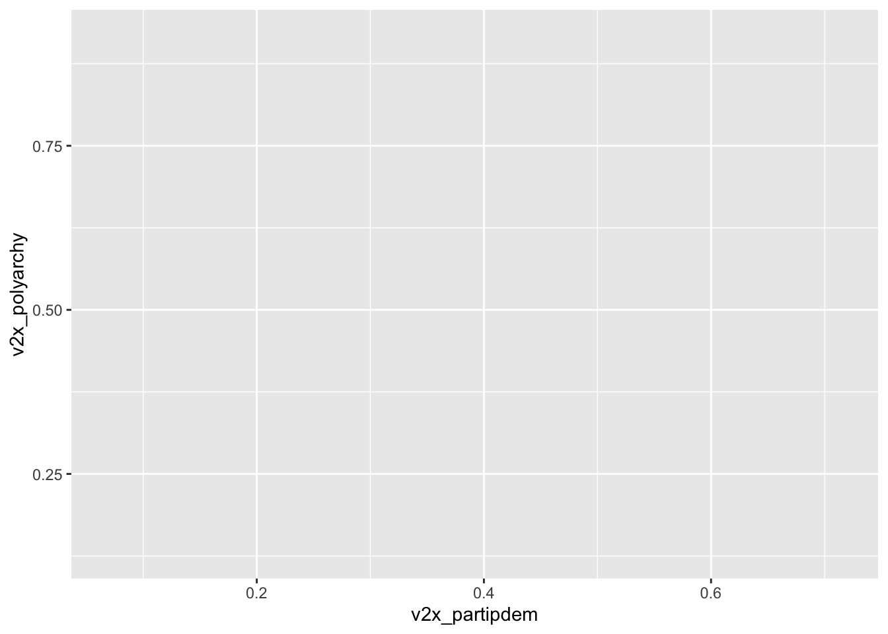
V_Dem %>%
ggplot(aes(x = v2x_partipdem, y = v2x_polyarchy)) +
geom_point()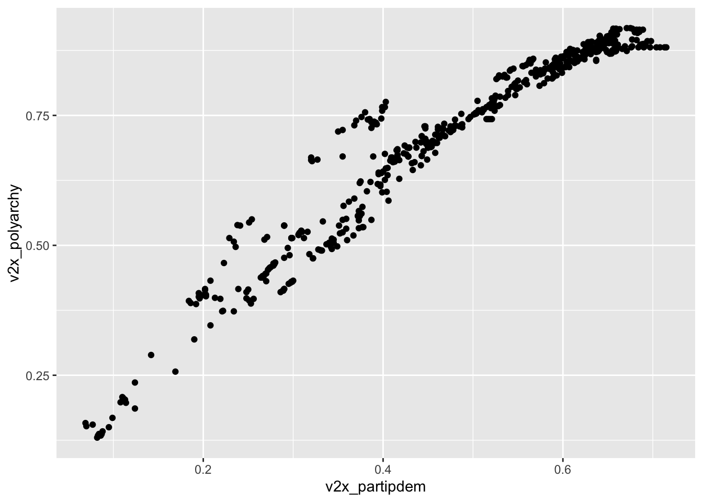
We can make the scatterplot more informative by adding colour. Here, we map the variable government to the color aesthetic, which allows us to distinguish countries with different types of governments in the plot.
V_Dem %>%
ggplot(aes(x = v2x_partipdem, y = v2x_polyarchy, color = government)) +
geom_point()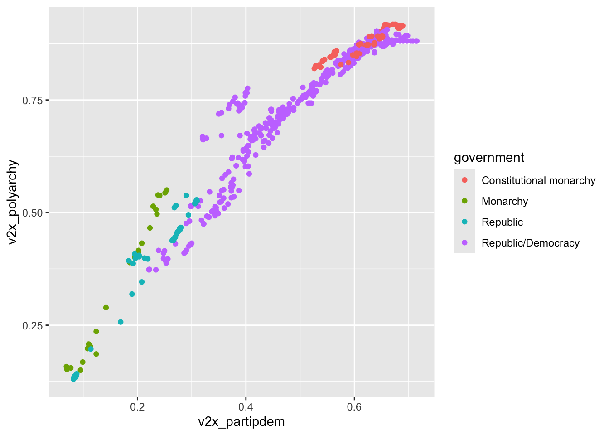
The plot now uses different colours for different types of government. ggplot() also adds a legend automatically, since colour is not shown on either axis and needs to be explained.
Histograms are useful for showing the distribution of a single variable. The values of the variable are shown on the x-axis, while the y-axis shows how many observations fall within each range of values, called bins.
To create a histogram in ggplot(), we use geom_histogram(). For this type of plot, we only need to specify the x aesthetic. In the example below, we plot the distribution of v2x_polyarchy.
V_Dem %>%
ggplot(aes(x = v2x_polyarchy)) +
geom_histogram()`stat_bin()` using `bins = 30`. Pick better value `binwidth`.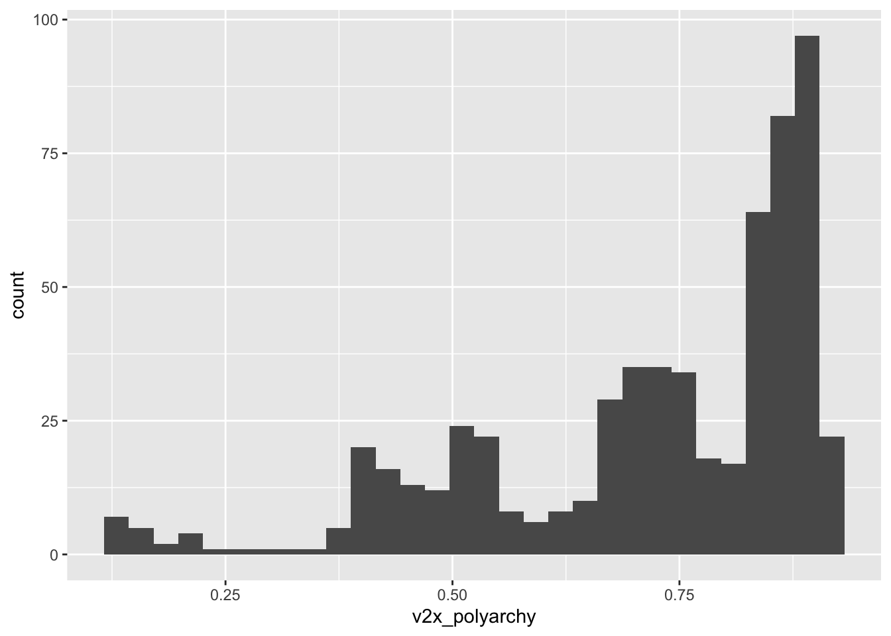
From the plot, we can see that the distribution of the variable is skewed to the right, i.e. there are more countries with high levels of democracy than there are countries with low levels of democracy.
The appearance of a histogram depends a lot on the number of bins used. By default, ggplot() uses 30 bins, but this can be changed with the bins or binwidth argument in geom_histogram().
In the example below, we change the number of bins to 10.
V_Dem %>%
ggplot(aes(x = v2x_polyarchy)) +
geom_histogram(bins = 10)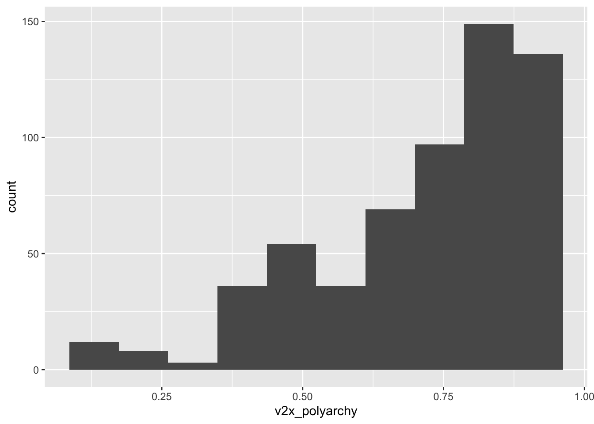
We can also use colour to compare the distribution of v2x_polyarchy across continents by mapping continent to the fill aesthetic. By default, ggplot() stacks the bars for each group on top of each other. This shows the total number of observations in each bin, but it can make comparisons between groups harder.
A common alternative is to change the position argument to "dodge", which places the bars for each continent side by side. This makes it easier to compare the distributions across groups.
V_Dem %>%
ggplot(aes(x = v2x_polyarchy, fill = continent)) +
geom_histogram(bins = 10, position = "dodge")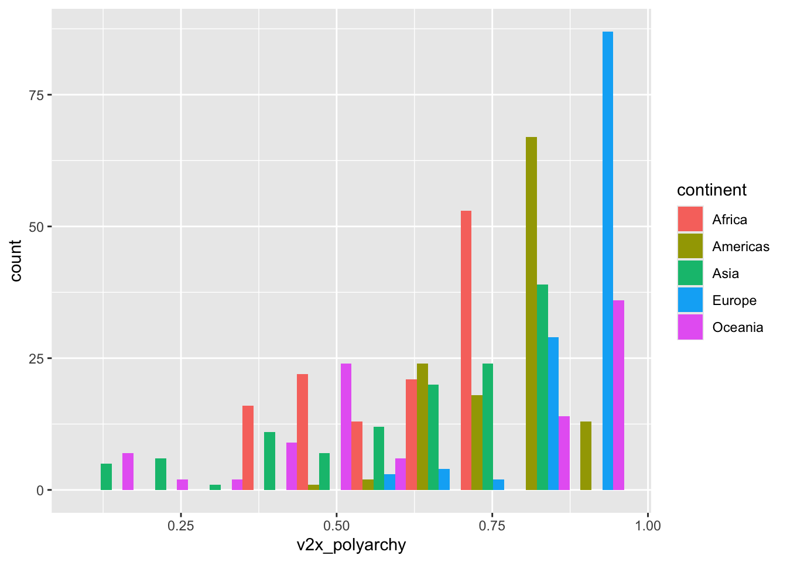
Boxplots are useful for showing the distribution of a continuous variable across different groups. They display the median and the spread of the data, making them especially helpful for comparing distributions between categories.
To create a boxplot in ggplot(), we use geom_boxplot(). One variable should be categorical and the other continuous. For a vertical boxplot, the categorical variable is mapped to x and the continuous variable to y.
V_Dem %>%
ggplot(aes(x = continent, y = v2x_polyarchy)) +
geom_boxplot()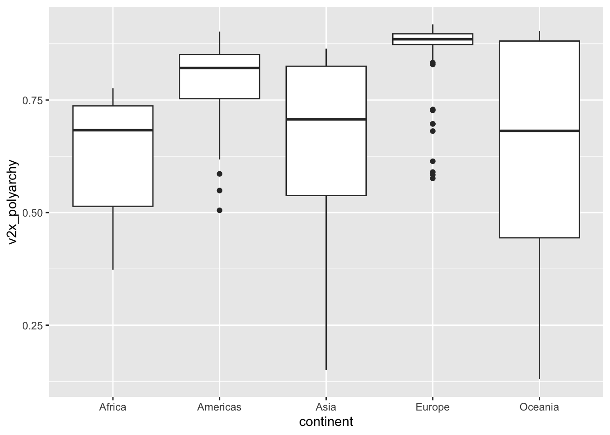
V_Dem %>%
ggplot(aes(x = v2x_polyarchy, y = continent)) +
geom_boxplot()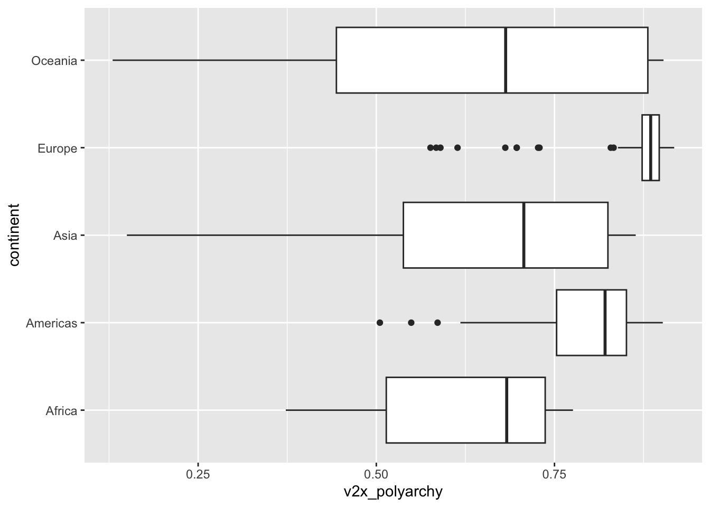
So far, we have used one geometry at a time, but ggplot() also allows us to add multiple geometries to the same figure. For example, in a scatterplot we can add both points and a regression line.
Any new geometry will use the same data and aesthetics unless we specify otherwise. In the example below, we add geom_smooth() to the scatterplot to draw a linear regression line.
V_Dem %>%
ggplot(aes(x = v2x_partipdem, y = v2x_polyarchy)) +
geom_point() +
geom_smooth(method = "lm", se = FALSE)`geom_smooth()` using formula = 'y ~ x'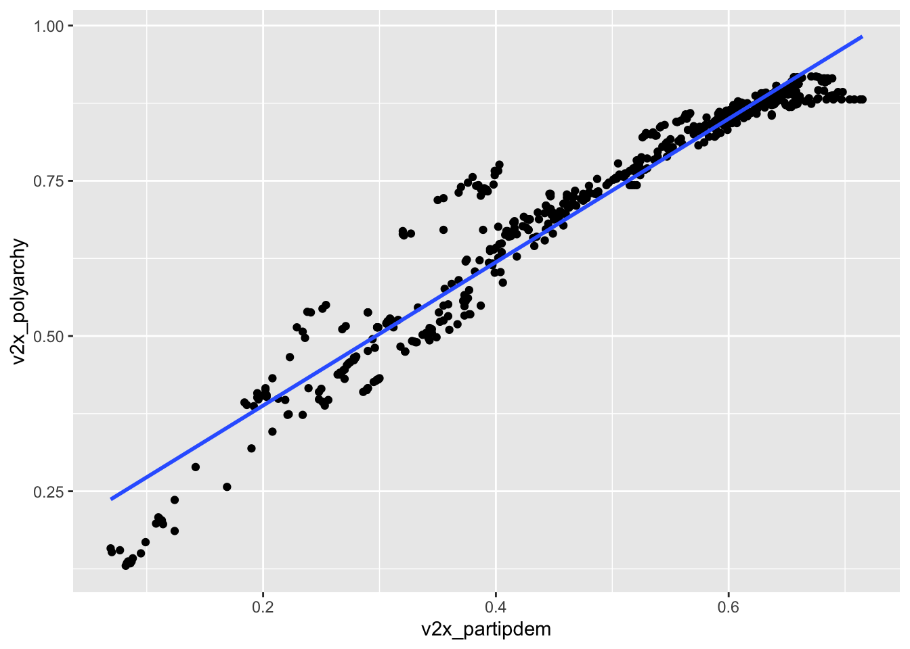
We can continue adding layers in the same way. For example, we can add a horizontal line to show the mean value of v2x_polyarchy. This can help us compare the observations to the overall average in the data.
V_Dem %>%
ggplot(aes(x = v2x_partipdem, y = v2x_polyarchy)) +
geom_point() +
geom_smooth(method = "lm", se = FALSE) +
geom_hline(
yintercept = mean(V_Dem$v2x_polyarchy, na.rm = TRUE),
linetype = "dashed"
)`geom_smooth()` using formula = 'y ~ x'So far, we have focused on how to create plots in ggplot(). We can also improve how a plot looks by changing labels, titles, scales, and colours.
A simple and common modification is to improve the axis labels. By default, ggplot() uses the variable names as labels, but these can be changed with labs(). In the example below, we give the axes more descriptive names.
V_Dem %>%
ggplot(aes(x = v2x_partipdem, y = v2x_polyarchy)) +
geom_point() +
labs(x = "Participatory democracy", y = "Electoral democracy")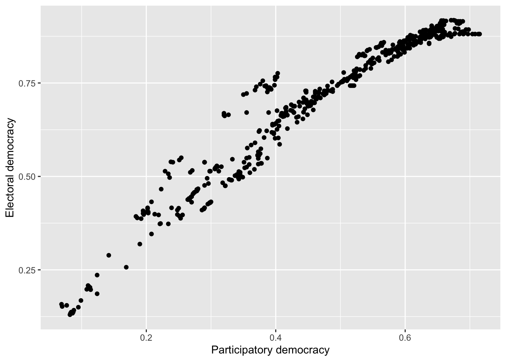
We can also add a title to the plot using the title argument inside labs(). The same function can also be used to rename the legend labels, which makes the plot easier to interpret.
V_Dem %>%
ggplot(aes(x = v2x_partipdem,
y = v2x_polyarchy,
color = government)) +
geom_point() +
labs(
x = "Participatory democracy",
y = "Electoral democracy",
color = "Government",
title = "Participatory and electoral democracy"
)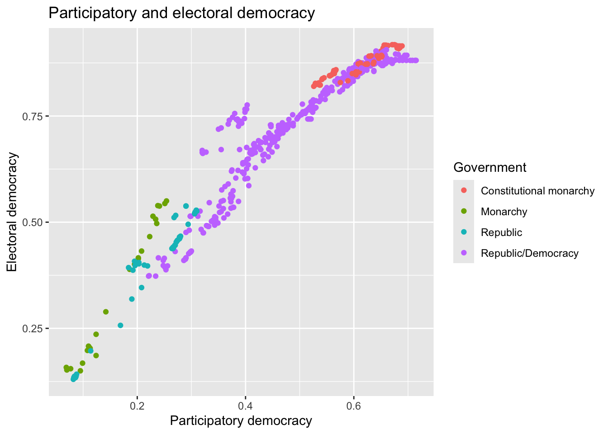
A simple way to change the appearance of a plot is to use a pre-defined theme. For example, theme_minimal() removes many of the default background elements and gives the plot a cleaner look.
V_Dem %>%
ggplot(aes(x = v2x_partipdem, y = v2x_polyarchy, color = government)) +
geom_point() +
scale_x_continuous(
breaks = seq(0, 1, 0.1),
name = "Participatory democracy"
) +
scale_y_continuous(
breaks = seq(0, 1, 0.1),
name = "Electoral democracy"
) +
labs(
color = "Government",
title = "Participatory and electoral democracy"
) +
theme_minimal()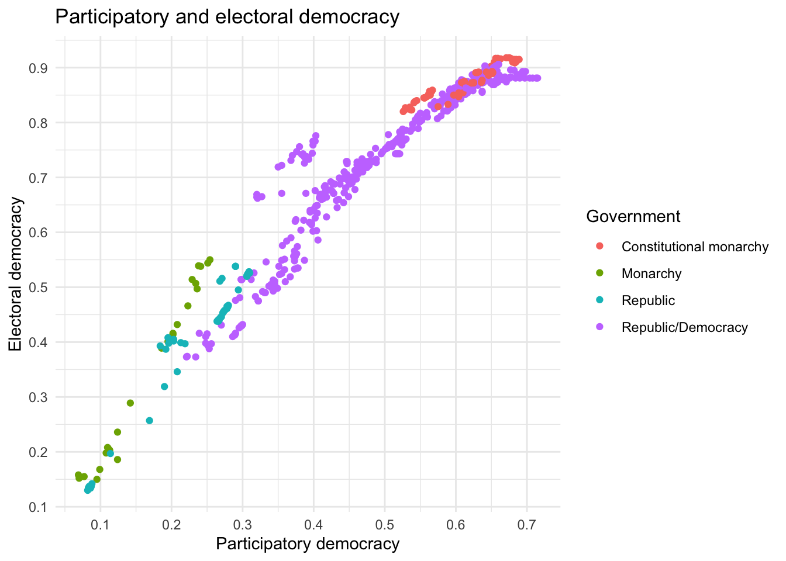
Faceting allows us to split one plot into several smaller plots based on a grouping variable. This is useful when we want to compare patterns across categories. In ggplot2, this is commonly done with facet_wrap() or facet_grid().
In the example below, we use facet_wrap() to create a separate scatterplot for each type of government. This makes it easier to compare the relationship between participatory democracy and electoral democracy across groups.
V_Dem %>%
ggplot(aes(x = v2x_partipdem, y = v2x_polyarchy)) +
geom_point() +
facet_wrap(~government) +
labs(
x = "Participatory democracy",
y = "Electoral democracy",
title = "Participatory and electoral democracy by government type"
) +
theme_minimal()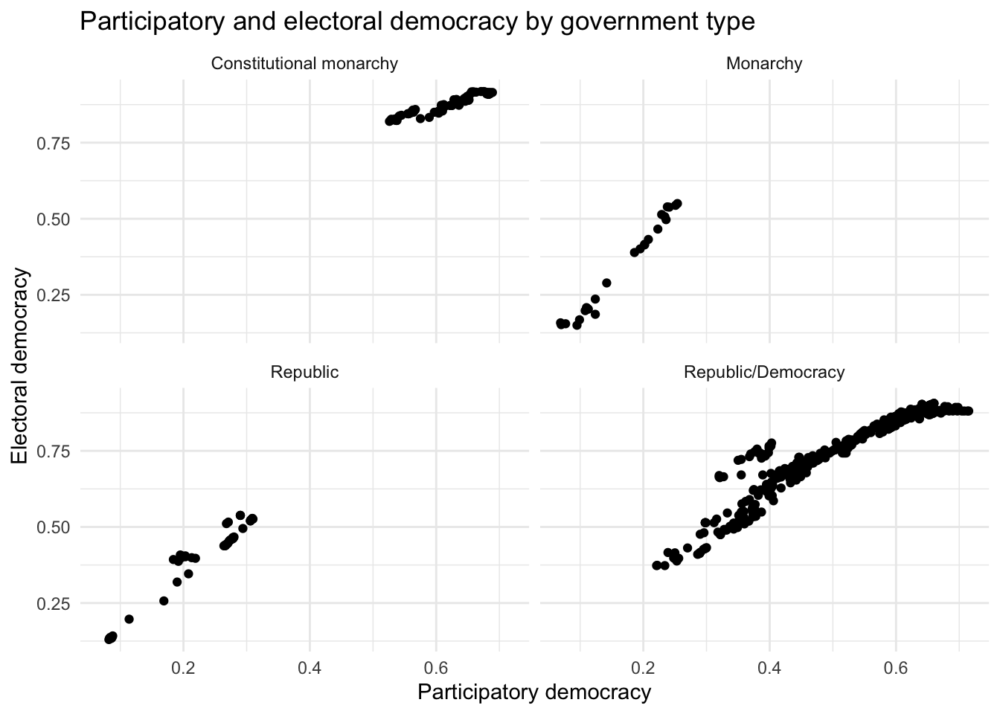
When you have created a plot you want to keep, you can save it directly from R using ggsave(). By default, ggsave() saves the most recently displayed plot. You can choose the file name, dimensions, and file format.
For example, the code below saves the last plot as a PDF file.
ggsave(
filename = "my_plot.pdf",
width = 10,
height = 10,
device = "pdf"
)RIn this chapter, we introduce the basics of regression analysis in R. Regression analysis is a statistical method used to examine the relationship between a dependent variable and one or more independent variables.
Linear regression is used when the dependent variable is continuous. The simplest version includes one independent variable, but regression models can also include several predictors. In R, linear regression is estimated using the lm() function.
Before estimating a regression model, we should first specify a theoretical model describing the expected relationship between the dependent and independent variables. In general form, this can be written as:
\(Y_i = \beta_0 + \beta_1 X_{1i} + \beta_2 X_{2i} + \dots + \beta_k X_{ki} + \varepsilon_i\)
Where \(Y_i\) is the dependent variable, \(X_{1i} \dots X_{ki}\) are the independent variables, \(\beta_0\) is the intercept, \(\beta_1 \dots \beta_k\) are the coefficients, and \(\varepsilon_i\) is the error term.
The purpose of regression analysis is to estimate these coefficients and assess the direction and strength of the relationships between variables.
RTo run a linear regression in R, we usually use the lm() function. The two main arguments are a formula and a data object.
In R, formulas are written using ~, with the dependent variable on the left-hand side and the independent variables on the right-hand side:
dependent_variable ~ independent_variable_1 + independent_variable_2
For example, a formula can also be saved as an object:
my_formula <- dependent_variable ~ independent_variable_1 + independent_variable_2
In practice, we usually store our variables in a data.frame or tibble, and then specify that dataset using the data = argument in lm(). R will then look for the variables named in the formula inside that dataset.
library(tidyverse)
model <- lm(v2x_polyarchy ~ v2x_partipdem, data = V_Dem)And for multiple independent variables, you can add them with `+`. For example, if you also want to include the military dimension index, `v2x_ex_military`, you can write:
model_multiple <- lm(v2x_polyarchy ~ v2x_partipdem + v2x_ex_military, data = V_Dem)The objects model and model_multiple contain the estimated regression models. If we print the objects directly, R will only show limited information, such as the formula and the estimated coefficients.
model_multiple
Call:
lm(formula = v2x_polyarchy ~ v2x_partipdem + v2x_ex_military,
data = V_Dem)
Coefficients:
(Intercept) v2x_partipdem v2x_ex_military
0.1726 1.1304 -0.0391 To see a fuller summary of the regression results, we can use the summary() function. This provides more detailed output, including coefficient estimates, standard errors, t-values, p-values, and measures such as R-squared, which are useful when interpreting the model.
summary(model_multiple)
Call:
lm(formula = v2x_polyarchy ~ v2x_partipdem + v2x_ex_military,
data = V_Dem)
Residuals:
Min 1Q Median 3Q Max
-0.122809 -0.020947 -0.000839 0.016410 0.159929
Coefficients:
Estimate Std. Error t value Pr(>|t|)
(Intercept) 0.17262 0.01036 16.660 <2e-16 ***
v2x_partipdem 1.13041 0.01775 63.679 <2e-16 ***
v2x_ex_military -0.03910 0.02110 -1.853 0.0643 .
---
Signif. codes: 0 '***' 0.001 '**' 0.01 '*' 0.05 '.' 0.1 ' ' 1
Residual standard error: 0.04623 on 597 degrees of freedom
Multiple R-squared: 0.9388, Adjusted R-squared: 0.9386
F-statistic: 4576 on 2 and 597 DF, p-value: < 2.2e-16In simple terms, countries with higher levels of participatory democracy also tend to have higher levels of electoral democracy. Greater military influence over executive power is associated with slightly lower levels of electoral democracy, but this relationship is much weaker.
We will now move to using conflict data merged with World Bank indicators. In this section, we use the dataset ged_world_bank.csv, which contains country-year conflict measures together with socioeconomic indicators from the World Bank.
We begin with a simple linear regression where total_fatalities is the dependent variable and gdp_pc is the independent variable.
df <- read_csv("datasets/ged_world_bank.csv")Rows: 2046 Columns: 10
── Column specification ────────────────────────────────────────────────────────
Delimiter: ","
chr (3): country, iso3c, continent
dbl (7): year, n_conflict_events, total_fatalities, population, gdp_pc, edu,...
ℹ Use `spec()` to retrieve the full column specification for this data.
ℹ Specify the column types or set `show_col_types = FALSE` to quiet this message.lm1 <- lm(total_fatalities ~ gdp_pc, data = df)
summary(lm1)
Call:
lm(formula = total_fatalities ~ gdp_pc, data = df)
Residuals:
Min 1Q Median 3Q Max
-2238 -2070 -1807 -882 770223
Coefficients:
Estimate Std. Error t value Pr(>|t|)
(Intercept) 2253.15338 493.79768 4.563 5.36e-06 ***
gdp_pc -0.06715 0.05045 -1.331 0.183
---
Signif. codes: 0 '***' 0.001 '**' 0.01 '*' 0.05 '.' 0.1 ' ' 1
Residual standard error: 19010 on 1931 degrees of freedom
(113 observations deleted due to missingness)
Multiple R-squared: 0.0009166, Adjusted R-squared: 0.0003992
F-statistic: 1.772 on 1 and 1931 DF, p-value: 0.1833We can also extend the model by including more than one independent variable. For example, we may want to examine whether both GDP per capita and population are associated with total fatalities.
lm2 <- lm(log(total_fatalities+1) ~ log(gdp_pc+1) + population, data = df)
summary(lm2)
Call:
lm(formula = log(total_fatalities + 1) ~ log(gdp_pc + 1) + population,
data = df)
Residuals:
Min 1Q Median 3Q Max
-6.6051 -1.7376 0.0632 1.8113 7.8289
Coefficients:
Estimate Std. Error t value Pr(>|t|)
(Intercept) 8.377e+00 3.505e-01 23.902 < 2e-16 ***
log(gdp_pc + 1) -5.072e-01 4.550e-02 -11.148 < 2e-16 ***
population 1.678e-09 3.015e-10 5.566 2.97e-08 ***
---
Signif. codes: 0 '***' 0.001 '**' 0.01 '*' 0.05 '.' 0.1 ' ' 1
Residual standard error: 2.459 on 1930 degrees of freedom
(113 observations deleted due to missingness)
Multiple R-squared: 0.07259, Adjusted R-squared: 0.07163
F-statistic: 75.53 on 2 and 1930 DF, p-value: < 2.2e-16The intercept is the predicted value of log(total_fatalities + 1) when both log(gdp_pc + 1) and population are equal to 0. On its own, this is usually not very meaningful, but it is needed to define the regression line.
The coefficient for log(gdp_pc + 1) is negative and statistically significant. This suggests that countries with higher GDP per capita tend to have lower levels of conflict fatalities, holding population constant.
The coefficient for population is positive and statistically significant. This suggests that more populous countries tend to have higher levels of conflict fatalities, holding GDP per capita constant.
Both predictors are statistically significant, which means their relationships with conflict fatalities are unlikely to be due to random chance in this sample.
Sometimes the dependent variable is binary, for example whether a country-year experienced conflict or not. In this case, ordinary least squares (OLS) regression is not ideal because predicted values can fall below 0 or above 1, and the assumptions about the error term are not well suited to a binary outcome.
Logit regression is designed for binary dependent variables. Instead of modelling the outcome directly, it models the probability that the outcome equals 1. The coefficients from a logit model are expressed in log-odds, which means they are not interpreted in exactly the same way as coefficients from a linear regression.
df$conflict_dummy <- ifelse(df$total_fatalities > 0, 1, 0)
logit1 <- glm(conflict_dummy ~ log(gdp_pc + 1),
data = df,
family = binomial(link = "logit"))
summary(logit1)
Call:
glm(formula = conflict_dummy ~ log(gdp_pc + 1), family = binomial(link = "logit"),
data = df)
Coefficients:
Estimate Std. Error z value Pr(>|z|)
(Intercept) 3.91862 0.80492 4.868 1.13e-06 ***
log(gdp_pc + 1) -0.06683 0.10315 -0.648 0.517
---
Signif. codes: 0 '***' 0.001 '**' 0.01 '*' 0.05 '.' 0.1 ' ' 1
(Dispersion parameter for binomial family taken to be 1)
Null deviance: 548.51 on 1932 degrees of freedom
Residual deviance: 548.10 on 1931 degrees of freedom
(113 observations deleted due to missingness)
AIC: 552.1
Number of Fisher Scoring iterations: 6OLS and logit regressionOLS is used for continuous outcomes, while logit regression is used for binary outcomes such as conflict yes/no. OLS can predict any real number, but logit regression predicts probabilities between 0 and 1.
Their coefficients are also interpreted differently. In OLS, coefficients show changes in the dependent variable. In logit regression, coefficients are expressed in log-odds.
For OLS, model fit is often assessed using R² and adjusted R², which show the share of variance explained. For logit models, we more often use measures such as AIC, BIC, pseudo-R², or AUC; lower AIC and BIC values generally indicate better fit.
RWe now move to another important tool for presenting results in R: tables. Tables are useful for summarising data and regression results in a clear and structured way. In this chapter, we focus on two popular packages for making tables: stargazer and modelsummary.
stargazerThe stargazer package is commonly used to create publication-style tables for summary statistics and regression models.
By default, stargazer() produces LaTeX output, but this can be changed by setting type = "text" or type = "html". In this chapter, we use type = "text" because the output is easy to read and can be copied into Word or other text editors.
To illustrate this, we can use the regression model from the previous chapter and display the results with stargazer().
library(stargazer)
Please cite as: Hlavac, Marek (2022). stargazer: Well-Formatted Regression and Summary Statistics Tables. R package version 5.2.3. https://CRAN.R-project.org/package=stargazer lm2 <- lm(log(total_fatalities + 1) ~ log(gdp_pc + 1) + population, data = df)
stargazer(lm2, type = "text")
===============================================
Dependent variable:
---------------------------
log(total_fatalities + 1)
-----------------------------------------------
log(gdp_pc + 1) -0.507***
(0.045)
population 0.000***
(0.000)
Constant 8.377***
(0.350)
-----------------------------------------------
Observations 1,933
R2 0.073
Adjusted R2 0.072
Residual Std. Error 2.459 (df = 1930)
F Statistic 75.533*** (df = 2; 1930)
===============================================
Note: *p<0.1; **p<0.05; ***p<0.01stargazer() is also useful when we want to compare several models side by side. To do this, we simply pass multiple model objects to the function.
In the example below, we compare two linear regression models and one logit model based on our conflict and World Bank data.
library(stargazer)
lm1 <- lm(total_fatalities ~ gdp_pc, data = df)
lm2 <- lm(log(total_fatalities + 1) ~ log(gdp_pc + 1) + population, data = df)
stargazer(lm1, lm2, type = "text")
====================================================================
Dependent variable:
------------------------------------------------
total_fatalities log(total_fatalities + 1)
(1) (2)
--------------------------------------------------------------------
gdp_pc -0.067
(0.050)
log(gdp_pc + 1) -0.507***
(0.045)
population 0.000***
(0.000)
Constant 2,253.153*** 8.377***
(493.798) (0.350)
--------------------------------------------------------------------
Observations 1,933 1,933
R2 0.001 0.073
Adjusted R2 0.0004 0.072
Residual Std. Error 19,012.180 (df = 1931) 2.459 (df = 1930)
F Statistic 1.772 (df = 1; 1931) 75.533*** (df = 2; 1930)
====================================================================
Note: *p<0.1; **p<0.05; ***p<0.01We can also export stargazer() tables directly to a file using the out argument. This is useful if we want to save the table as a text, HTML, or LaTeX file for use in another document.
library(stargazer)
stargazer(lm1, lm2, type = "text", out = "regression_table.txt")
====================================================================
Dependent variable:
------------------------------------------------
total_fatalities log(total_fatalities + 1)
(1) (2)
--------------------------------------------------------------------
gdp_pc -0.067
(0.050)
log(gdp_pc + 1) -0.507***
(0.045)
population 0.000***
(0.000)
Constant 2,253.153*** 8.377***
(493.798) (0.350)
--------------------------------------------------------------------
Observations 1,933 1,933
R2 0.001 0.073
Adjusted R2 0.0004 0.072
Residual Std. Error 19,012.180 (df = 1931) 2.459 (df = 1930)
F Statistic 1.772 (df = 1; 1931) 75.533*** (df = 2; 1930)
====================================================================
Note: *p<0.1; **p<0.05; ***p<0.01stargazer(lm1, lm2, type = "html", out = "regression_table.html")
<table style="text-align:center"><tr><td colspan="3" style="border-bottom: 1px solid black"></td></tr><tr><td style="text-align:left"></td><td colspan="2"><em>Dependent variable:</em></td></tr>
<tr><td></td><td colspan="2" style="border-bottom: 1px solid black"></td></tr>
<tr><td style="text-align:left"></td><td>total_fatalities</td><td>log(total_fatalities + 1)</td></tr>
<tr><td style="text-align:left"></td><td>(1)</td><td>(2)</td></tr>
<tr><td colspan="3" style="border-bottom: 1px solid black"></td></tr><tr><td style="text-align:left">gdp_pc</td><td>-0.067</td><td></td></tr>
<tr><td style="text-align:left"></td><td>(0.050)</td><td></td></tr>
<tr><td style="text-align:left"></td><td></td><td></td></tr>
<tr><td style="text-align:left">log(gdp_pc + 1)</td><td></td><td>-0.507<sup>***</sup></td></tr>
<tr><td style="text-align:left"></td><td></td><td>(0.045)</td></tr>
<tr><td style="text-align:left"></td><td></td><td></td></tr>
<tr><td style="text-align:left">population</td><td></td><td>0.000<sup>***</sup></td></tr>
<tr><td style="text-align:left"></td><td></td><td>(0.000)</td></tr>
<tr><td style="text-align:left"></td><td></td><td></td></tr>
<tr><td style="text-align:left">Constant</td><td>2,253.153<sup>***</sup></td><td>8.377<sup>***</sup></td></tr>
<tr><td style="text-align:left"></td><td>(493.798)</td><td>(0.350)</td></tr>
<tr><td style="text-align:left"></td><td></td><td></td></tr>
<tr><td colspan="3" style="border-bottom: 1px solid black"></td></tr><tr><td style="text-align:left">Observations</td><td>1,933</td><td>1,933</td></tr>
<tr><td style="text-align:left">R<sup>2</sup></td><td>0.001</td><td>0.073</td></tr>
<tr><td style="text-align:left">Adjusted R<sup>2</sup></td><td>0.0004</td><td>0.072</td></tr>
<tr><td style="text-align:left">Residual Std. Error</td><td>19,012.180 (df = 1931)</td><td>2.459 (df = 1930)</td></tr>
<tr><td style="text-align:left">F Statistic</td><td>1.772 (df = 1; 1931)</td><td>75.533<sup>***</sup> (df = 2; 1930)</td></tr>
<tr><td colspan="3" style="border-bottom: 1px solid black"></td></tr><tr><td style="text-align:left"><em>Note:</em></td><td colspan="2" style="text-align:right"><sup>*</sup>p<0.1; <sup>**</sup>p<0.05; <sup>***</sup>p<0.01</td></tr>
</table>stargazer(lm1, lm2, type = "latex", out = "regression_table.tex")
% Table created by stargazer v.5.2.3 by Marek Hlavac, Social Policy Institute. E-mail: marek.hlavac at gmail.com
% Date and time: Fri, Mar 13, 2026 - 11:06:38
\begin{table}[!htbp] \centering
\caption{}
\label{}
\begin{tabular}{@{\extracolsep{5pt}}lcc}
\\[-1.8ex]\hline
\hline \\[-1.8ex]
& \multicolumn{2}{c}{\textit{Dependent variable:}} \\
\cline{2-3}
\\[-1.8ex] & total\_fatalities & log(total\_fatalities + 1) \\
\\[-1.8ex] & (1) & (2)\\
\hline \\[-1.8ex]
gdp\_pc & $-$0.067 & \\
& (0.050) & \\
& & \\
log(gdp\_pc + 1) & & $-$0.507$^{***}$ \\
& & (0.045) \\
& & \\
population & & 0.000$^{***}$ \\
& & (0.000) \\
& & \\
Constant & 2,253.153$^{***}$ & 8.377$^{***}$ \\
& (493.798) & (0.350) \\
& & \\
\hline \\[-1.8ex]
Observations & 1,933 & 1,933 \\
R$^{2}$ & 0.001 & 0.073 \\
Adjusted R$^{2}$ & 0.0004 & 0.072 \\
Residual Std. Error & 19,012.180 (df = 1931) & 2.459 (df = 1930) \\
F Statistic & 1.772 (df = 1; 1931) & 75.533$^{***}$ (df = 2; 1930) \\
\hline
\hline \\[-1.8ex]
\textit{Note:} & \multicolumn{2}{r}{$^{*}$p$<$0.1; $^{**}$p$<$0.05; $^{***}$p$<$0.01} \\
\end{tabular}
\end{table} modelsummarymodelsummary is a newer package for creating summary tables and regression tables in R. Compared to stargazer, it is generally more flexible and works well with modern R workflows.
One useful feature is the datasummary_skim() function, which can quickly produce summary statistics for either numeric or categorical variables.
Below, we use datasummary_skim() with our df dataset.
library(modelsummary)
df %>%
select(total_fatalities, gdp_pc, edu, child_mort, population) %>%
datasummary_skim(type = "numeric")| Unique | Missing Pct. | Mean | SD | Min | Median | Max | Histogram | |
|---|---|---|---|---|---|---|---|---|
| total_fatalities | 929 | 0 | 1934.1 | 18504.2 | 0.0 | 111.5 | 772463.0 | ![](data:image/png;base64, iVBORw0KGgoAAAANSUhEUgAABLAAAAGQCAYAAAC+tZleAAAEDmlDQ1BrQ0dDb2xvclNwYWNlR2VuZXJpY1JHQgAAOI2NVV1oHFUUPpu5syskzoPUpqaSDv41lLRsUtGE2uj+ZbNt3CyTbLRBkMns3Z1pJjPj/KRpKT4UQRDBqOCT4P9bwSchaqvtiy2itFCiBIMo+ND6R6HSFwnruTOzu5O4a73L3PnmnO9+595z7t4LkLgsW5beJQIsGq4t5dPis8fmxMQ6dMF90A190C0rjpUqlSYBG+PCv9rt7yDG3tf2t/f/Z+uuUEcBiN2F2Kw4yiLiZQD+FcWyXYAEQfvICddi+AnEO2ycIOISw7UAVxieD/Cyz5mRMohfRSwoqoz+xNuIB+cj9loEB3Pw2448NaitKSLLRck2q5pOI9O9g/t/tkXda8Tbg0+PszB9FN8DuPaXKnKW4YcQn1Xk3HSIry5ps8UQ/2W5aQnxIwBdu7yFcgrxPsRjVXu8HOh0qao30cArp9SZZxDfg3h1wTzKxu5E/LUxX5wKdX5SnAzmDx4A4OIqLbB69yMesE1pKojLjVdoNsfyiPi45hZmAn3uLWdpOtfQOaVmikEs7ovj8hFWpz7EV6mel0L9Xy23FMYlPYZenAx0yDB1/PX6dledmQjikjkXCxqMJS9WtfFCyH9XtSekEF+2dH+P4tzITduTygGfv58a5VCTH5PtXD7EFZiNyUDBhHnsFTBgE0SQIA9pfFtgo6cKGuhooeilaKH41eDs38Ip+f4At1Rq/sjr6NEwQqb/I/DQqsLvaFUjvAx+eWirddAJZnAj1DFJL0mSg/gcIpPkMBkhoyCSJ8lTZIxk0TpKDjXHliJzZPO50dR5ASNSnzeLvIvod0HG/mdkmOC0z8VKnzcQ2M/Yz2vKldduXjp9bleLu0ZWn7vWc+l0JGcaai10yNrUnXLP/8Jf59ewX+c3Wgz+B34Df+vbVrc16zTMVgp9um9bxEfzPU5kPqUtVWxhs6OiWTVW+gIfywB9uXi7CGcGW/zk98k/kmvJ95IfJn/j3uQ+4c5zn3Kfcd+AyF3gLnJfcl9xH3OfR2rUee80a+6vo7EK5mmXUdyfQlrYLTwoZIU9wsPCZEtP6BWGhAlhL3p2N6sTjRdduwbHsG9kq32sgBepc+xurLPW4T9URpYGJ3ym4+8zA05u44QjST8ZIoVtu3qE7fWmdn5LPdqvgcZz8Ww8BWJ8X3w0PhQ/wnCDGd+LvlHs8dRy6bLLDuKMaZ20tZrqisPJ5ONiCq8yKhYM5cCgKOu66Lsc0aYOtZdo5QCwezI4wm9J/v0X23mlZXOfBjj8Jzv3WrY5D+CsA9D7aMs2gGfjve8ArD6mePZSeCfEYt8CONWDw8FXTxrPqx/r9Vt4biXeANh8vV7/+/16ffMD1N8AuKD/A/8leAvFY9bLAAAAOGVYSWZNTQAqAAAACAABh2kABAAAAAEAAAAaAAAAAAACoAIABAAAAAEAAASwoAMABAAAAAEAAAGQAAAAAPKgHusAACiJSURBVHgB7dy9rqUDH8bhx5BIiEQrkgkiVDqJOAKFRKlxBI5kWichcwwSpY5EQUOBEK0eMV57K7yx7srKGr9lrp34unfmWfe+/mtmzO3jsd//+Dh8ECBAgAABAgQIECBAgAABAgQIEIgK3In2UosAAQIECBAgQIAAAQIECBAgQIDArYAByxuBAAECBAgQIECAAAECBAgQIEAgLWDASp9HOQIECBAgQIAAAQIECBAgQIAAAQOW9wABAgQIECBAgAABAgQIECBAgEBawICVPo9yBAgQIECAAAECBAgQIECAAAECBizvAQIECBAgQIAAAQIECBAgQIAAgbSAASt9HuUIECBAgAABAgQIECBAgAABAgQMWN4DBAgQIECAAAECBAgQIECAAAECaQEDVvo8yhEgQIAAAQIECBAgQIAAAQIECBiwvAcIECBAgAABAgQIECBAgAABAgTSAgas9HmUI0CAAAECBAgQIECAAAECBAgQMGB5DxAgQIAAAQIECBAgQIAAAQIECKQFDFjp8yhHgAABAgQIECBAgAABAgQIECDwxLUR3Lt37/jmm2+urfZF+z548OD44IMPjmeeeeair+PhBAgQIECAAAECBAgQIECAAIF/Q+Cx3//4+Dde+J++5t27d48ffvjhn37z/+S3uxmu7t+/f7z99tv/ya/PF0WAAAECBAgQIECAAAECBAg82gJX958QPv7444/2xcZXf+fO1Z1xfBUiAgQIECBAgAABAgQIECBAgMAWsHxsFykBAgQIECBAgAABAgQIECBAgEBEwIAVOYQaBAgQIECAAAECBAgQIECAAAECW8CAtV2kBAgQIECAAAECBAgQIECAAAECEQEDVuQQahAgQIAAAQIECBAgQIAAAQIECGwBA9Z2kRIgQIAAAQIECBAgQIAAAQIECEQEDFiRQ6hBgAABAgQIECBAgAABAgQIECCwBQxY20VKgAABAgQIECBAgAABAgQIECAQETBgRQ6hBgECBAgQIECAAAECBAgQIECAwBYwYG0XKQECBAgQIECAAAECBAgQIECAQETAgBU5hBoECBAgQIAAAQIECBAgQIAAAQJbwIC1XaQECBAgQIAAAQIECBAgQIAAAQIRAQNW5BBqECBAgAABAgQIECBAgAABAgQIbAED1naREiBAgAABAgQIECBAgAABAgQIRAQMWJFDqEGAAAECBAgQIECAAAECBAgQILAFDFjbRUqAAAECBAgQIECAAAECBAgQIBARMGBFDqEGAQIECBAgQIAAAQIECBAgQIDAFjBgbRcpAQIECBAgQIAAAQIECBAgQIBARMCAFTmEGgQIECBAgAABAgQIECBAgAABAlvAgLVdpAQIECBAgAABAgQIECBAgAABAhEBA1bkEGoQIECAAAECBAgQIECAAAECBAhsAQPWdpESIECAAAECBAgQIECAAAECBAhEBAxYkUOoQYAAAQIECBAgQIAAAQIECBAgsAUMWNtFSoAAAQIECBAgQIAAAQIECBAgEBEwYEUOoQYBAgQIECBAgAABAgQIECBAgMAWMGBtFykBAgQIECBAgAABAgQIECBAgEBEwIAVOYQaBAgQIECAAAECBAgQIECAAAECW8CAtV2kBAgQIECAAAECBAgQIECAAAECEQEDVuQQahAgQIAAAQIECBAgQIAAAQIECGwBA9Z2kRIgQIAAAQIECBAgQIAAAQIECEQEDFiRQ6hBgAABAgQIECBAgAABAgQIECCwBQxY20VKgAABAgQIECBAgAABAgQIECAQETBgRQ6hBgECBAgQIECAAAECBAgQIECAwBYwYG0XKQECBAgQIECAAAECBAgQIECAQETAgBU5hBoECBAgQIAAAQIECBAgQIAAAQJbwIC1XaQECBAgQIAAAQIECBAgQIAAAQIRAQNW5BBqECBAgAABAgQIECBAgAABAgQIbAED1naREiBAgAABAgQIECBAgAABAgQIRAQMWJFDqEGAAAECBAgQIECAAAECBAgQILAFDFjbRUqAAAECBAgQIECAAAECBAgQIBARMGBFDqEGAQIECBAgQIAAAQIECBAgQIDAFjBgbRcpAQIECBAgQIAAAQIECBAgQIBARMCAFTmEGgQIECBAgAABAgQIECBAgAABAlvAgLVdpAQIECBAgAABAgQIECBAgAABAhEBA1bkEGoQIECAAAECBAgQIECAAAECBAhsAQPWdpESIECAAAECBAgQIECAAAECBAhEBAxYkUOoQYAAAQIECBAgQIAAAQIECBAgsAUMWNtFSoAAAQIECBAgQIAAAQIECBAgEBEwYEUOoQYBAgQIECBAgAABAgQIECBAgMAWMGBtFykBAgQIECBAgAABAgQIECBAgEBEwIAVOYQaBAgQIECAAAECBAgQIECAAAECW8CAtV2kBAgQIECAAAECBAgQIECAAAECEQEDVuQQahAgQIAAAQIECBAgQIAAAQIECGwBA9Z2kRIgQIAAAQIECBAgQIAAAQIECEQEDFiRQ6hBgAABAgQIECBAgAABAgQIECCwBQxY20VKgAABAgQIECBAgAABAgQIECAQETBgRQ6hBgECBAgQIECAAAECBAgQIECAwBYwYG0XKQECBAgQIECAAAECBAgQIECAQETAgBU5hBoECBAgQIAAAQIECBAgQIAAAQJbwIC1XaQECBAgQIAAAQIECBAgQIAAAQIRAQNW5BBqECBAgAABAgQIECBAgAABAgQIbAED1naREiBAgAABAgQIECBAgAABAgQIRAQMWJFDqEGAAAECBAgQIECAAAECBAgQILAFDFjbRUqAAAECBAgQIECAAAECBAgQIBARMGBFDqEGAQIECBAgQIAAAQIECBAgQIDAFjBgbRcpAQIECBAgQIAAAQIECBAgQIBARMCAFTmEGgQIECBAgAABAgQIECBAgAABAlvAgLVdpAQIECBAgAABAgQIECBAgAABAhEBA1bkEGoQIECAAAECBAgQIECAAAECBAhsAQPWdpESIECAAAECBAgQIECAAAECBAhEBAxYkUOoQYAAAQIECBAgQIAAAQIECBAgsAUMWNtFSoAAAQIECBAgQIAAAQIECBAgEBEwYEUOoQYBAgQIECBAgAABAgQIECBAgMAWMGBtFykBAgQIECBAgAABAgQIECBAgEBEwIAVOYQaBAgQIECAAAECBAgQIECAAAECW8CAtV2kBAgQIECAAAECBAgQIECAAAECEQEDVuQQahAgQIAAAQIECBAgQIAAAQIECGwBA9Z2kRIgQIAAAQIECBAgQIAAAQIECEQEDFiRQ6hBgAABAgQIECBAgAABAgQIECCwBQxY20VKgAABAgQIECBAgAABAgQIECAQETBgRQ6hBgECBAgQIECAAAECBAgQIECAwBYwYG0XKQECBAgQIECAAAECBAgQIECAQETAgBU5hBoECBAgQIAAAQIECBAgQIAAAQJbwIC1XaQECBAgQIAAAQIECBAgQIAAAQIRAQNW5BBqECBAgAABAgQIECBAgAABAgQIbAED1naREiBAgAABAgQIECBAgAABAgQIRAQMWJFDqEGAAAECBAgQIECAAAECBAgQILAFDFjbRUqAAAECBAgQIECAAAECBAgQIBARMGBFDqEGAQIECBAgQIAAAQIECBAgQIDAFjBgbRcpAQIECBAgQIAAAQIECBAgQIBARMCAFTmEGgQIECBAgAABAgQIECBAgAABAlvAgLVdpAQIECBAgAABAgQIECBAgAABAhEBA1bkEGoQIECAAAECBAgQIECAAAECBAhsAQPWdpESIECAAAECBAgQIECAAAECBAhEBAxYkUOoQYAAAQIECBAgQIAAAQIECBAgsAUMWNtFSoAAAQIECBAgQIAAAQIECBAgEBEwYEUOoQYBAgQIECBAgAABAgQIECBAgMAWMGBtFykBAgQIECBAgAABAgQIECBAgEBEwIAVOYQaBAgQIECAAAECBAgQIECAAAECW8CAtV2kBAgQIECAAAECBAgQIECAAAECEQEDVuQQahAgQIAAAQIECBAgQIAAAQIECGwBA9Z2kRIgQIAAAQIECBAgQIAAAQIECEQEDFiRQ6hBgAABAgQIECBAgAABAgQIECCwBQxY20VKgAABAgQIECBAgAABAgQIECAQETBgRQ6hBgECBAgQIECAAAECBAgQIECAwBYwYG0XKQECBAgQIECAAAECBAgQIECAQETAgBU5hBoECBAgQIAAAQIECBAgQIAAAQJbwIC1XaQECBAgQIAAAQIECBAgQIAAAQIRAQNW5BBqECBAgAABAgQIECBAgAABAgQIbAED1naREiBAgAABAgQIECBAgAABAgQIRAQMWJFDqEGAAAECBAgQIECAAAECBAgQILAFDFjbRUqAAAECBAgQIECAAAECBAgQIBARMGBFDqEGAQIECBAgQIAAAQIECBAgQIDAFjBgbRcpAQIECBAgQIAAAQIECBAgQIBARMCAFTmEGgQIECBAgAABAgQIECBAgAABAlvAgLVdpAQIECBAgAABAgQIECBAgAABAhEBA1bkEGoQIECAAAECBAgQIECAAAECBAhsAQPWdpESIECAAAECBAgQIECAAAECBAhEBAxYkUOoQYAAAQIECBAgQIAAAQIECBAgsAUMWNtFSoAAAQIECBAgQIAAAQIECBAgEBEwYEUOoQYBAgQIECBAgAABAgQIECBAgMAWMGBtFykBAgQIECBAgAABAgQIECBAgEBEwIAVOYQaBAgQIECAAAECBAgQIECAAAECW8CAtV2kBAgQIECAAAECBAgQIECAAAECEQEDVuQQahAgQIAAAQIECBAgQIAAAQIECGwBA9Z2kRIgQIAAAQIECBAgQIAAAQIECEQEDFiRQ6hBgAABAgQIECBAgAABAgQIECCwBQxY20VKgAABAgQIECBAgAABAgQIECAQETBgRQ6hBgECBAgQIECAAAECBAgQIECAwBYwYG0XKQECBAgQIECAAAECBAgQIECAQETAgBU5hBoECBAgQIAAAQIECBAgQIAAAQJbwIC1XaQECBAgQIAAAQIECBAgQIAAAQIRAQNW5BBqECBAgAABAgQIECBAgAABAgQIbAED1naREiBAgAABAgQIECBAgAABAgQIRAQMWJFDqEGAAAECBAgQIECAAAECBAgQILAFDFjbRUqAAAECBAgQIECAAAECBAgQIBARMGBFDqEGAQIECBAgQIAAAQIECBAgQIDAFjBgbRcpAQIECBAgQIAAAQIECBAgQIBARMCAFTmEGgQIECBAgAABAgQIECBAgAABAlvAgLVdpAQIECBAgAABAgQIECBAgAABAhEBA1bkEGoQIECAAAECBAgQIECAAAECBAhsAQPWdpESIECAAAECBAgQIECAAAECBAhEBAxYkUOoQYAAAQIECBAgQIAAAQIECBAgsAUMWNtFSoAAAQIECBAgQIAAAQIECBAgEBEwYEUOoQYBAgQIECBAgAABAgQIECBAgMAWMGBtFykBAgQIECBAgAABAgQIECBAgEBEwIAVOYQaBAgQIECAAAECBAgQIECAAAECW8CAtV2kBAgQIECAAAECBAgQIECAAAECEQEDVuQQahAgQIAAAQIECBAgQIAAAQIECGwBA9Z2kRIgQIAAAQIECBAgQIAAAQIECEQEDFiRQ6hBgAABAgQIECBAgAABAgQIECCwBQxY20VKgAABAgQIECBAgAABAgQIECAQETBgRQ6hBgECBAgQIECAAAECBAgQIECAwBYwYG0XKQECBAgQIECAAAECBAgQIECAQETAgBU5hBoECBAgQIAAAQIECBAgQIAAAQJbwIC1XaQECBAgQIAAAQIECBAgQIAAAQIRAQNW5BBqECBAgAABAgQIECBAgAABAgQIbAED1naREiBAgAABAgQIECBAgAABAgQIRAQMWJFDqEGAAAECBAgQIECAAAECBAgQILAFDFjbRUqAAAECBAgQIECAAAECBAgQIBARMGBFDqEGAQIECBAgQIAAAQIECBAgQIDAFjBgbRcpAQIECBAgQIAAAQIECBAgQIBARMCAFTmEGgQIECBAgAABAgQIECBAgAABAlvAgLVdpAQIECBAgAABAgQIECBAgAABAhEBA1bkEGoQIECAAAECBAgQIECAAAECBAhsAQPWdpESIECAAAECBAgQIECAAAECBAhEBAxYkUOoQYAAAQIECBAgQIAAAQIECBAgsAUMWNtFSoAAAQIECBAgQIAAAQIECBAgEBEwYEUOoQYBAgQIECBAgAABAgQIECBAgMAWMGBtFykBAgQIECBAgAABAgQIECBAgEBEwIAVOYQaBAgQIECAAAECBAgQIECAAAECW8CAtV2kBAgQIECAAAECBAgQIECAAAECEQEDVuQQahAgQIAAAQIECBAgQIAAAQIECGwBA9Z2kRIgQIAAAQIECBAgQIAAAQIECEQEDFiRQ6hBgAABAgQIECBAgAABAgQIECCwBQxY20VKgAABAgQIECBAgAABAgQIECAQETBgRQ6hBgECBAgQIECAAAECBAgQIECAwBYwYG0XKQECBAgQIECAAAECBAgQIECAQETAgBU5hBoECBAgQIAAAQIECBAgQIAAAQJbwIC1XaQECBAgQIAAAQIECBAgQIAAAQIRAQNW5BBqECBAgAABAgQIECBAgAABAgQIbAED1naREiBAgAABAgQIECBAgAABAgQIRAQMWJFDqEGAAAECBAgQIECAAAECBAgQILAFDFjbRUqAAAECBAgQIECAAAECBAgQIBARMGBFDqEGAQIECBAgQIAAAQIECBAgQIDAFjBgbRcpAQIECBAgQIAAAQIECBAgQIBARMCAFTmEGgQIECBAgAABAgQIECBAgAABAlvAgLVdpAQIECBAgAABAgQIECBAgAABAhEBA1bkEGoQIECAAAECBAgQIECAAAECBAhsAQPWdpESIECAAAECBAgQIECAAAECBAhEBAxYkUOoQYAAAQIECBAgQIAAAQIECBAgsAUMWNtFSoAAAQIECBAgQIAAAQIECBAgEBEwYEUOoQYBAgQIECBAgAABAgQIECBAgMAWMGBtFykBAgQIECBAgAABAgQIECBAgEBEwIAVOYQaBAgQIECAAAECBAgQIECAAAECW8CAtV2kBAgQIECAAAECBAgQIECAAAECEQEDVuQQahAgQIAAAQIECBAgQIAAAQIECGwBA9Z2kRIgQIAAAQIECBAgQIAAAQIECEQEDFiRQ6hBgAABAgQIECBAgAABAgQIECCwBQxY20VKgAABAgQIECBAgAABAgQIECAQETBgRQ6hBgECBAgQIECAAAECBAgQIECAwBYwYG0XKQECBAgQIECAAAECBAgQIECAQETAgBU5hBoECBAgQIAAAQIECBAgQIAAAQJbwIC1XaQECBAgQIAAAQIECBAgQIAAAQIRAQNW5BBqECBAgAABAgQIECBAgAABAgQIbAED1naREiBAgAABAgQIECBAgAABAgQIRAQMWJFDqEGAAAECBAgQIECAAAECBAgQILAFDFjbRUqAAAECBAgQIECAAAECBAgQIBARMGBFDqEGAQIECBAgQIAAAQIECBAgQIDAFjBgbRcpAQIECBAgQIAAAQIECBAgQIBARMCAFTmEGgQIECBAgAABAgQIECBAgAABAlvAgLVdpAQIECBAgAABAgQIECBAgAABAhEBA1bkEGoQIECAAAECBAgQIECAAAECBAhsAQPWdpESIECAAAECBAgQIECAAAECBAhEBAxYkUOoQYAAAQIECBAgQIAAAQIECBAgsAUMWNtFSoAAAQIECBAgQIAAAQIECBAgEBEwYEUOoQYBAgQIECBAgAABAgQIECBAgMAWMGBtFykBAgQIECBAgAABAgQIECBAgEBEwIAVOYQaBAgQIECAAAECBAgQIECAAAECW8CAtV2kBAgQIECAAAECBAgQIECAAAECEQEDVuQQahAgQIAAAQIECBAgQIAAAQIECGwBA9Z2kRIgQIAAAQIECBAgQIAAAQIECEQEDFiRQ6hBgAABAgQIECBAgAABAgQIECCwBQxY20VKgAABAgQIECBAgAABAgQIECAQETBgRQ6hBgECBAgQIECAAAECBAgQIECAwBYwYG0XKQECBAgQIECAAAECBAgQIECAQETAgBU5hBoECBAgQIAAAQIECBAgQIAAAQJbwIC1XaQECBAgQIAAAQIECBAgQIAAAQIRAQNW5BBqECBAgAABAgQIECBAgAABAgQIbAED1naREiBAgAABAgQIECBAgAABAgQIRAQMWJFDqEGAAAECBAgQIECAAAECBAgQILAFDFjbRUqAAAECBAgQIECAAAECBAgQIBARMGBFDqEGAQIECBAgQIAAAQIECBAgQIDAFjBgbRcpAQIECBAgQIAAAQIECBAgQIBARMCAFTmEGgQIECBAgAABAgQIECBAgAABAlvAgLVdpAQIECBAgAABAgQIECBAgAABAhEBA1bkEGoQIECAAAECBAgQIECAAAECBAhsAQPWdpESIECAAAECBAgQIECAAAECBAhEBAxYkUOoQYAAAQIECBAgQIAAAQIECBAgsAUMWNtFSoAAAQIECBAgQIAAAQIECBAgEBEwYEUOoQYBAgQIECBAgAABAgQIECBAgMAWMGBtFykBAgQIECBAgAABAgQIECBAgEBEwIAVOYQaBAgQIECAAAECBAgQIECAAAECW8CAtV2kBAgQIECAAAECBAgQIECAAAECEQEDVuQQahAgQIAAAQIECBAgQIAAAQIECGwBA9Z2kRIgQIAAAQIECBAgQIAAAQIECEQEDFiRQ6hBgAABAgQIECBAgAABAgQIECCwBQxY20VKgAABAgQIECBAgAABAgQIECAQETBgRQ6hBgECBAgQIECAAAECBAgQIECAwBYwYG0XKQECBAgQIECAAAECBAgQIECAQETAgBU5hBoECBAgQIAAAQIECBAgQIAAAQJbwIC1XaQECBAgQIAAAQIECBAgQIAAAQIRAQNW5BBqECBAgAABAgQIECBAgAABAgQIbAED1naREiBAgAABAgQIECBAgAABAgQIRAQMWJFDqEGAAAECBAgQIECAAAECBAgQILAFDFjbRUqAAAECBAgQIECAAAECBAgQIBARMGBFDqEGAQIECBAgQIAAAQIECBAgQIDAFjBgbRcpAQIECBAgQIAAAQIECBAgQIBARMCAFTmEGgQIECBAgAABAgQIECBAgAABAlvAgLVdpAQIECBAgAABAgQIECBAgAABAhEBA1bkEGoQIECAAAECBAgQIECAAAECBAhsAQPWdpESIECAAAECBAgQIECAAAECBAhEBAxYkUOoQYAAAQIECBAgQIAAAQIECBAgsAUMWNtFSoAAAQIECBAgQIAAAQIECBAgEBEwYEUOoQYBAgQIECBAgAABAgQIECBAgMAWMGBtFykBAgQIECBAgAABAgQIECBAgEBEwIAVOYQaBAgQIECAAAECBAgQIECAAAECW8CAtV2kBAgQIECAAAECBAgQIECAAAECEQEDVuQQahAgQIAAAQIECBAgQIAAAQIECGwBA9Z2kRIgQIAAAQIECBAgQIAAAQIECEQEDFiRQ6hBgAABAgQIECBAgAABAgQIECCwBQxY20VKgAABAgQIECBAgAABAgQIECAQETBgRQ6hBgECBAgQIECAAAECBAgQIECAwBYwYG0XKQECBAgQIECAAAECBAgQIECAQETAgBU5hBoECBAgQIAAAQIECBAgQIAAAQJbwIC1XaQECBAgQIAAAQIECBAgQIAAAQIRAQNW5BBqECBAgAABAgQIECBAgAABAgQIbAED1naREiBAgAABAgQIECBAgAABAgQIRAQMWJFDqEGAAAECBAgQIECAAAECBAgQILAFDFjbRUqAAAECBAgQIECAAAECBAgQIBARMGBFDqEGAQIECBAgQIAAAQIECBAgQIDAFjBgbRcpAQIECBAgQIAAAQIECBAgQIBARMCAFTmEGgQIECBAgAABAgQIECBAgAABAlvAgLVdpAQIECBAgAABAgQIECBAgAABAhEBA1bkEGoQIECAAAECBAgQIECAAAECBAhsAQPWdpESIECAAAECBAgQIECAAAECBAhEBAxYkUOoQYAAAQIECBAgQIAAAQIECBAgsAUMWNtFSoAAAQIECBAgQIAAAQIECBAgEBEwYEUOoQYBAgQIECBAgAABAgQIECBAgMAWMGBtFykBAgQIECBAgAABAgQIECBAgEBEwIAVOYQaBAgQIECAAAECBAgQIECAAAECW8CAtV2kBAgQIECAAAECBAgQIECAAAECEQEDVuQQahAgQIAAAQIECBAgQIAAAQIECGwBA9Z2kRIgQIAAAQIECBAgQIAAAQIECEQEDFiRQ6hBgAABAgQIECBAgAABAgQIECCwBQxY20VKgAABAgQIECBAgAABAgQIECAQETBgRQ6hBgECBAgQIECAAAECBAgQIECAwBYwYG0XKQECBAgQIECAAAECBAgQIECAQETAgBU5hBoECBAgQIAAAQIECBAgQIAAAQJbwIC1XaQECBAgQIAAAQIECBAgQIAAAQIRAQNW5BBqECBAgAABAgQIECBAgAABAgQIbAED1naREiBAgAABAgQIECBAgAABAgQIRAQMWJFDqEGAAAECBAgQIECAAAECBAgQILAFDFjbRUqAAAECBAgQIECAAAECBAgQIBARMGBFDqEGAQIECBAgQIAAAQIECBAgQIDAFjBgbRcpAQIECBAgQIAAAQIECBAgQIBARMCAFTmEGgQIECBAgAABAgQIECBAgAABAlvAgLVdpAQIECBAgAABAgQIECBAgAABAhEBA1bkEGoQIECAAAECBAgQIECAAAECBAhsAQPWdpESIECAAAECBAgQIECAAAECBAhEBAxYkUOoQYAAAQIECBAgQIAAAQIECBAgsAUMWNtFSoAAAQIECBAgQIAAAQIECBAgEBEwYEUOoQYBAgQIECBAgAABAgQIECBAgMAWMGBtFykBAgQIECBAgAABAgQIECBAgEBEwIAVOYQaBAgQIECAAAECBAgQIECAAAECW8CAtV2kBAgQIECAAAECBAgQIECAAAECEQEDVuQQahAgQIAAAQIECBAgQIAAAQIECGwBA9Z2kRIgQIAAAQIECBAgQIAAAQIECEQEDFiRQ6hBgAABAgQIECBAgAABAgQIECCwBQxY20VKgAABAgQIECBAgAABAgQIECAQETBgRQ6hBgECBAgQIECAAAECBAgQIECAwBYwYG0XKQECBAgQIECAAAECBAgQIECAQETAgBU5hBoECBAgQIAAAQIECBAgQIAAAQJbwIC1XaQECBAgQIAAAQIECBAgQIAAAQIRAQNW5BBqECBAgAABAgQIECBAgAABAgQIbAED1naREiBAgAABAgQIECBAgAABAgQIRAQMWJFDqEGAAAECBAgQIECAAAECBAgQILAFDFjbRUqAAAECBAgQIECAAAECBAgQIBARMGBFDqEGAQIECBAgQIAAAQIECBAgQIDAFjBgbRcpAQIECBAgQIAAAQIECBAgQIBARMCAFTmEGgQIECBAgAABAgQIECBAgAABAlvAgLVdpAQIECBAgAABAgQIECBAgAABAhEBA1bkEGoQIECAAAECBAgQIECAAAECBAhsAQPWdpESIECAAAECBAgQIECAAAECBAhEBAxYkUOoQYAAAQIECBAgQIAAAQIECBAgsAUMWNtFSoAAAQIECBAgQIAAAQIECBAgEBEwYEUOoQYBAgQIECBAgAABAgQIECBAgMAWMGBtFykBAgQIECBAgAABAgQIECBAgEBEwIAVOYQaBAgQIECAAAECBAgQIECAAAECW8CAtV2kBAgQIECAAAECBAgQIECAAAECEQEDVuQQahAgQIAAAQIECBAgQIAAAQIECGwBA9Z2kRIgQIAAAQIECBAgQIAAAQIECEQEDFiRQ6hBgAABAgQIECBAgAABAgQIECCwBQxY20VKgAABAgQIECBAgAABAgQIECAQETBgRQ6hBgECBAgQIECAAAECBAgQIECAwBYwYG0XKQECBAgQIECAAAECBAgQIECAQETAgBU5hBoECBAgQIAAAQIECBAgQIAAAQJbwIC1XaQECBAgQIAAAQIECBAgQIAAAQIRAQNW5BBqECBAgAABAgQIECBAgAABAgQIbAED1naREiBAgAABAgQIECBAgAABAgQIRAQMWJFDqEGAAAECBAgQIECAAAECBAgQILAFDFjbRUqAAAECBAgQIECAAAECBAgQIBARMGBFDqEGAQIECBAgQIAAAQIECBAgQIDAFjBgbRcpAQIECBAgQIAAAQIECBAgQIBARMCAFTmEGgQIECBAgAABAgQIECBAgAABAlvAgLVdpAQIECBAgAABAgQIECBAgAABAhEBA1bkEGoQIECAAAECBAgQIECAAAECBAhsAQPWdpESIECAAAECBAgQIECAAAECBAhEBAxYkUOoQYAAAQIECBAgQIAAAQIECBAgsAUMWNtFSoAAAQIECBAgQIAAAQIECBAgEBEwYEUOoQYBAgQIECBAgAABAgQIECBAgMAWMGBtFykBAgQIECBAgAABAgQIECBAgEBEwIAVOYQaBAgQIECAAAECBAgQIECAAAECW8CAtV2kBAgQIECAAAECBAgQIECAAAECEQEDVuQQahAgQIAAAQIECBAgQIAAAQIECGwBA9Z2kRIgQIAAAQIECBAgQIAAAQIECEQEDFiRQ6hBgAABAgQIECBAgAABAgQIECCwBR77/Y+P/alm+uKLLx7fffdds9y/1Orpp58+XnrppePGxsefAr/88svxzjvvHO+//z4SAgQIECBAgAABAgQIECBA4MoFnri2/r/99tu1Vb54359//vn44osvbn+7+Itd0Qt8+eWXx82Q5eMvgR9//PF4/vnn/wr82a3AzY8rr776Ko3/E/j++++Pu3fv/l/iT28EvvrqK++Vv70VvFf+BvLHX978nHzz8dprr93+0e/+FPBeOX0n+DHl1OQm8V45dfn222/9w+pTloPLKYrvP6cmN8nHH398vPDCC/uTj2j63HPPHe++++5VffVX929g3bt37/YHqqtSvnDZn3766bhz587x7LPPXviVrufxN4PEp59+erz88svXU/ohNP38889vf/H91FNPPYRXu46XePDgwe0vNt98883rKPyQWn799dfHK6+88pBe7Xpe5qOPPjreeuut6yn8EJr6G+VT5A8//PA2fO+9904/+Qgn3iunx/djyqnJTeLnoFOXzz777Hj99ddPP/GIJ1xO3wC+/5ya/Prrr8cnn3xyvPHGG6effISTJ5988rh///5VCVzdgHVVusoSIECAAAECBAgQIECAAAECBAicLeB/4n42oQcQIECAAAECBAgQIECAAAECBAhcUsCAdUldzyZAgAABAgQIECBAgAABAgQIEDhbwIB1NqEHECBAgAABAgQIECBAgAABAgQIXFLAgHVJXc8mQIAAAQIECBAgQIAAAQIECBA4W8CAdTahBxAgQIAAAQIECBAgQIAAAQIECFxSwIB1SV3PJkCAAAECBAgQIECAAAECBAgQOFvAgHU2oQcQIECAAAECBAgQIECAAAECBAhcUsCAdUldzyZAgAABAgQIECBAgAABAgQIEDhbwIB1NqEHECBAgAABAgQIECBAgAABAgQIXFLAgHVJXc8mQIAAAQIECBAgQIAAAQIECBA4W8CAdTahBxAgQIAAAQIECBAgQIAAAQIECFxSwIB1SV3PJkCAAAECBAgQIECAAAECBAgQOFvAgHU2oQcQIECAAAECBAgQIECAAAECBAhcUuB/KCqjpm6Rts8AAAAASUVORK5CYII=) |
| gdp_pc | 1934 | 6 | 4725.9 | 8574.1 | 166.7 | 1804.3 | 63886.1 | ![](data:image/png;base64, iVBORw0KGgoAAAANSUhEUgAABLAAAAGQCAYAAAC+tZleAAAEDmlDQ1BrQ0dDb2xvclNwYWNlR2VuZXJpY1JHQgAAOI2NVV1oHFUUPpu5syskzoPUpqaSDv41lLRsUtGE2uj+ZbNt3CyTbLRBkMns3Z1pJjPj/KRpKT4UQRDBqOCT4P9bwSchaqvtiy2itFCiBIMo+ND6R6HSFwnruTOzu5O4a73L3PnmnO9+595z7t4LkLgsW5beJQIsGq4t5dPis8fmxMQ6dMF90A190C0rjpUqlSYBG+PCv9rt7yDG3tf2t/f/Z+uuUEcBiN2F2Kw4yiLiZQD+FcWyXYAEQfvICddi+AnEO2ycIOISw7UAVxieD/Cyz5mRMohfRSwoqoz+xNuIB+cj9loEB3Pw2448NaitKSLLRck2q5pOI9O9g/t/tkXda8Tbg0+PszB9FN8DuPaXKnKW4YcQn1Xk3HSIry5ps8UQ/2W5aQnxIwBdu7yFcgrxPsRjVXu8HOh0qao30cArp9SZZxDfg3h1wTzKxu5E/LUxX5wKdX5SnAzmDx4A4OIqLbB69yMesE1pKojLjVdoNsfyiPi45hZmAn3uLWdpOtfQOaVmikEs7ovj8hFWpz7EV6mel0L9Xy23FMYlPYZenAx0yDB1/PX6dledmQjikjkXCxqMJS9WtfFCyH9XtSekEF+2dH+P4tzITduTygGfv58a5VCTH5PtXD7EFZiNyUDBhHnsFTBgE0SQIA9pfFtgo6cKGuhooeilaKH41eDs38Ip+f4At1Rq/sjr6NEwQqb/I/DQqsLvaFUjvAx+eWirddAJZnAj1DFJL0mSg/gcIpPkMBkhoyCSJ8lTZIxk0TpKDjXHliJzZPO50dR5ASNSnzeLvIvod0HG/mdkmOC0z8VKnzcQ2M/Yz2vKldduXjp9bleLu0ZWn7vWc+l0JGcaai10yNrUnXLP/8Jf59ewX+c3Wgz+B34Df+vbVrc16zTMVgp9um9bxEfzPU5kPqUtVWxhs6OiWTVW+gIfywB9uXi7CGcGW/zk98k/kmvJ95IfJn/j3uQ+4c5zn3Kfcd+AyF3gLnJfcl9xH3OfR2rUee80a+6vo7EK5mmXUdyfQlrYLTwoZIU9wsPCZEtP6BWGhAlhL3p2N6sTjRdduwbHsG9kq32sgBepc+xurLPW4T9URpYGJ3ym4+8zA05u44QjST8ZIoVtu3qE7fWmdn5LPdqvgcZz8Ww8BWJ8X3w0PhQ/wnCDGd+LvlHs8dRy6bLLDuKMaZ20tZrqisPJ5ONiCq8yKhYM5cCgKOu66Lsc0aYOtZdo5QCwezI4wm9J/v0X23mlZXOfBjj8Jzv3WrY5D+CsA9D7aMs2gGfjve8ArD6mePZSeCfEYt8CONWDw8FXTxrPqx/r9Vt4biXeANh8vV7/+/16ffMD1N8AuKD/A/8leAvFY9bLAAAAOGVYSWZNTQAqAAAACAABh2kABAAAAAEAAAAaAAAAAAACoAIABAAAAAEAAASwoAMABAAAAAEAAAGQAAAAAPKgHusAACoQSURBVHgB7d3Pil11FgXgU6kYtRSjiX8RS2oqOBIER75CnsGZYx/Cue+QR9BBQEcijgQd6ExLa+BAo6DGUhOtzgkYbK5Na/3uKc7K+i40HW937bv3t24He3lTtXNy+zF5ECBAgAABAgQIECBAgAABAgQIEFipwLmV7mUtAgQIECBAgAABAgQIECBAgAABAncEFFjeCAQIECBAgAABAgQIECBAgAABAqsWUGCtOh7LESBAgAABAgQIECBAgAABAgQIKLC8BwgQIECAAAECBAgQIECAAAECBFYtoMBadTyWI0CAAAECBAgQIECAAAECBAgQUGB5DxAgQIAAAQIECBAgQIAAAQIECKxaQIG16ngsR4AAAQIECBAgQIAAAQIECBAgoMDyHiBAgAABAgQIECBAgAABAgQIEFi1gAJr1fFYjgABAgQIECBAgAABAgQIECBAQIHlPUCAAAECBAgQIECAAAECBAgQILBqAQXWquOxHAECBAgQIECAAAECBAgQIECAgALLe4AAAQIECBAgQIAAAQIECBAgQGDVAgqsVcdjOQIECBAgQIAAAQIECBAgQIAAgfNpBG+++eb0+eefp6296n1v3rw5vfXWW9Mjjzyy6j0tR4AAAQIECBAgQIAAAQIECHQK7JzcfiSdvr+/Px0dHSWtvPpd9/b2pqtXr05XrlxZ/a4WJECAAAECBAgQIECAAAECBPoE4v4I4e7ubl9KC1+8s7Oz8CsYT4AAAQIECBAgQIAAAQIECBA4vUBcgXX6U30lAQIECBAgQIAAAQIECBAgQIBAooACKzE1OxMgQIAAAQIECBAgQIAAAQIEigQUWEVhO5UAAQIECBAgQIAAAQIECBAgkCigwEpMzc4ECBAgQIAAAQIECBAgQIAAgSIBBVZR2E4lQIAAAQIECBAgQIAAAQIECCQKKLASU7MzAQIECBAgQIAAAQIECBAgQKBIQIFVFLZTCRAgQIAAAQIECBAgQIAAAQKJAgqsxNTsTIAAAQIECBAgQIAAAQIECBAoElBgFYXtVAIECBAgQIAAAQIECBAgQIBAooACKzE1OxMgQIAAAQIECBAgQIAAAQIEigQUWEVhO5UAAQIECBAgQIAAAQIECBAgkCigwEpMzc4ECBAgQIAAAQIECBAgQIAAgSIBBVZR2E4lQIAAAQIECBAgQIAAAQIECCQKKLASU7MzAQIECBAgQIAAAQIECBAgQKBIQIFVFLZTCRAgQIAAAQIECBAgQIAAAQKJAgqsxNTsTIAAAQIECBAgQIAAAQIECBAoElBgFYXtVAIECBAgQIAAAQIECBAgQIBAooACKzE1OxMgQIAAAQIECBAgQIAAAQIEigQUWEVhO5UAAQIECBAgQIAAAQIECBAgkCigwEpMzc4ECBAgQIAAAQIECBAgQIAAgSIBBVZR2E4lQIAAAQIECBAgQIAAAQIECCQKKLASU7MzAQIECBAgQIAAAQIECBAgQKBIQIFVFLZTCRAgQIAAAQIECBAgQIAAAQKJAgqsxNTsTIAAAQIECBAgQIAAAQIECBAoElBgFYXtVAIECBAgQIAAAQIECBAgQIBAooACKzE1OxMgQIAAAQIECBAgQIAAAQIEigQUWEVhO5UAAQIECBAgQIAAAQIECBAgkCigwEpMzc4ECBAgQIAAAQIECBAgQIAAgSIBBVZR2E4lQIAAAQIECBAgQIAAAQIECCQKKLASU7MzAQIECBAgQIAAAQIECBAgQKBIQIFVFLZTCRAgQIAAAQIECBAgQIAAAQKJAgqsxNTsTIAAAQIECBAgQIAAAQIECBAoElBgFYXtVAIECBAgQIAAAQIECBAgQIBAooACKzE1OxMgQIAAAQIECBAgQIAAAQIEigQUWEVhO5UAAQIECBAgQIAAAQIECBAgkCigwEpMzc4ECBAgQIAAAQIECBAgQIAAgSIBBVZR2E4lQIAAAQIECBAgQIAAAQIECCQKKLASU7MzAQIECBAgQIAAAQIECBAgQKBIQIFVFLZTCRAgQIAAAQIECBAgQIAAAQKJAgqsxNTsTIAAAQIECBAgQIAAAQIECBAoElBgFYXtVAIECBAgQIAAAQIECBAgQIBAooACKzE1OxMgQIAAAQIECBAgQIAAAQIEigQUWEVhO5UAAQIECBAgQIAAAQIECBAgkCigwEpMzc4ECBAgQIAAAQIECBAgQIAAgSIBBVZR2E4lQIAAAQIECBAgQIAAAQIECCQKKLASU7MzAQIECBAgQIAAAQIECBAgQKBIQIFVFLZTCRAgQIAAAQIECBAgQIAAAQKJAgqsxNTsTIAAAQIECBAgQIAAAQIECBAoElBgFYXtVAIECBAgQIAAAQIECBAgQIBAooACKzE1OxMgQIAAAQIECBAgQIAAAQIEigQUWEVhO5UAAQIECBAgQIAAAQIECBAgkCigwEpMzc4ECBAgQIAAAQIECBAgQIAAgSIBBVZR2E4lQIAAAQIECBAgQIAAAQIECCQKKLASU7MzAQIECBAgQIAAAQIECBAgQKBIQIFVFLZTCRAgQIAAAQIECBAgQIAAAQKJAgqsxNTsTIAAAQIECBAgQIAAAQIECBAoElBgFYXtVAIECBAgQIAAAQIECBAgQIBAooACKzE1OxMgQIAAAQIECBAgQIAAAQIEigQUWEVhO5UAAQIECBAgQIAAAQIECBAgkCigwEpMzc4ECBAgQIAAAQIECBAgQIAAgSIBBVZR2E4lQIAAAQIECBAgQIAAAQIECCQKKLASU7MzAQIECBAgQIAAAQIECBAgQKBIQIFVFLZTCRAgQIAAAQIECBAgQIAAAQKJAgqsxNTsTIAAAQIECBAgQIAAAQIECBAoElBgFYXtVAIECBAgQIAAAQIECBAgQIBAooACKzE1OxMgQIAAAQIECBAgQIAAAQIEigQUWEVhO5UAAQIECBAgQIAAAQIECBAgkCigwEpMzc4ECBAgQIAAAQIECBAgQIAAgSIBBVZR2E4lQIAAAQIECBAgQIAAAQIECCQKKLASU7MzAQIECBAgQIAAAQIECBAgQKBIQIFVFLZTCRAgQIAAAQIECBAgQIAAAQKJAgqsxNTsTIAAAQIECBAgQIAAAQIECBAoElBgFYXtVAIECBAgQIAAAQIECBAgQIBAooACKzE1OxMgQIAAAQIECBAgQIAAAQIEigQUWEVhO5UAAQIECBAgQIAAAQIECBAgkCigwEpMzc4ECBAgQIAAAQIECBAgQIAAgSIBBVZR2E4lQIAAAQIECBAgQIAAAQIECCQKKLASU7MzAQIECBAgQIAAAQIECBAgQKBIQIFVFLZTCRAgQIAAAQIECBAgQIAAAQKJAgqsxNTsTIAAAQIECBAgQIAAAQIECBAoElBgFYXtVAIECBAgQIAAAQIECBAgQIBAooACKzE1OxMgQIAAAQIECBAgQIAAAQIEigQUWEVhO5UAAQIECBAgQIAAAQIECBAgkCigwEpMzc4ECBAgQIAAAQIECBAgQIAAgSIBBVZR2E4lQIAAAQIECBAgQIAAAQIECCQKKLASU7MzAQIECBAgQIAAAQIECBAgQKBIQIFVFLZTCRAgQIAAAQIECBAgQIAAAQKJAgqsxNTsTIAAAQIECBAgQIAAAQIECBAoElBgFYXtVAIECBAgQIAAAQIECBAgQIBAooACKzE1OxMgQIAAAQIECBAgQIAAAQIEigQUWEVhO5UAAQIECBAgQIAAAQIECBAgkCigwEpMzc4ECBAgQIAAAQIECBAgQIAAgSIBBVZR2E4lQIAAAQIECBAgQIAAAQIECCQKKLASU7MzAQIECBAgQIAAAQIECBAgQKBIQIFVFLZTCRAgQIAAAQIECBAgQIAAAQKJAgqsxNTsTIAAAQIECBAgQIAAAQIECBAoElBgFYXtVAIECBAgQIAAAQIECBAgQIBAooACKzE1OxMgQIAAAQIECBAgQIAAAQIEigQUWEVhO5UAAQIECBAgQIAAAQIECBAgkCigwEpMzc4ECBAgQIAAAQIECBAgQIAAgSIBBVZR2E4lQIAAAQIECBAgQIAAAQIECCQKKLASU7MzAQIECBAgQIAAAQIECBAgQKBIQIFVFLZTCRAgQIAAAQIECBAgQIAAAQKJAgqsxNTsTIAAAQIECBAgQIAAAQIECBAoElBgFYXtVAIECBAgQIAAAQIECBAgQIBAooACKzE1OxMgQIAAAQIECBAgQIAAAQIEigQUWEVhO5UAAQIECBAgQIAAAQIECBAgkCigwEpMzc4ECBAgQIAAAQIECBAgQIAAgSIBBVZR2E4lQIAAAQIECBAgQIAAAQIECCQKKLASU7MzAQIECBAgQIAAAQIECBAgQKBIQIFVFLZTCRAgQIAAAQIECBAgQIAAAQKJAgqsxNTsTIAAAQIECBAgQIAAAQIECBAoElBgFYXtVAIECBAgQIAAAQIECBAgQIBAooACKzE1OxMgQIAAAQIECBAgQIAAAQIEigQUWEVhO5UAAQIECBAgQIAAAQIECBAgkCigwEpMzc4ECBAgQIAAAQIECBAgQIAAgSIBBVZR2E4lQIAAAQIECBAgQIAAAQIECCQKKLASU7MzAQIECBAgQIAAAQIECBAgQKBIQIFVFLZTCRAgQIAAAQIECBAgQIAAAQKJAgqsxNTsTIAAAQIECBAgQIAAAQIECBAoElBgFYXtVAIECBAgQIAAAQIECBAgQIBAooACKzE1OxMgQIAAAQIECBAgQIAAAQIEigQUWEVhO5UAAQIECBAgQIAAAQIECBAgkCigwEpMzc4ECBAgQIAAAQIECBAgQIAAgSIBBVZR2E4lQIAAAQIECBAgQIAAAQIECCQKKLASU7MzAQIECBAgQIAAAQIECBAgQKBIQIFVFLZTCRAgQIAAAQIECBAgQIAAAQKJAgqsxNTsTIAAAQIECBAgQIAAAQIECBAoElBgFYXtVAIECBAgQIAAAQIECBAgQIBAooACKzE1OxMgQIAAAQIECBAgQIAAAQIEigQUWEVhO5UAAQIECBAgQIAAAQIECBAgkCigwEpMzc4ECBAgQIAAAQIECBAgQIAAgSIBBVZR2E4lQIAAAQIECBAgQIAAAQIECCQKKLASU7MzAQIECBAgQIAAAQIECBAgQKBIQIFVFLZTCRAgQIAAAQIECBAgQIAAAQKJAgqsxNTsTIAAAQIECBAgQIAAAQIECBAoElBgFYXtVAIECBAgQIAAAQIECBAgQIBAooACKzE1OxMgQIAAAQIECBAgQIAAAQIEigQUWEVhO5UAAQIECBAgQIAAAQIECBAgkCigwEpMzc4ECBAgQIAAAQIECBAgQIAAgSIBBVZR2E4lQIAAAQIECBAgQIAAAQIECCQKKLASU7MzAQIECBAgQIAAAQIECBAgQKBIQIFVFLZTCRAgQIAAAQIECBAgQIAAAQKJAgqsxNTsTIAAAQIECBAgQIAAAQIECBAoElBgFYXtVAIECBAgQIAAAQIECBAgQIBAooACKzE1OxMgQIAAAQIECBAgQIAAAQIEigQUWEVhO5UAAQIECBAgQIAAAQIECBAgkCigwEpMzc4ECBAgQIAAAQIECBAgQIAAgSIBBVZR2E4lQIAAAQIECBAgQIAAAQIECCQKKLASU7MzAQIECBAgQIAAAQIECBAgQKBIQIFVFLZTCRAgQIAAAQIECBAgQIAAAQKJAgqsxNTsTIAAAQIECBAgQIAAAQIECBAoElBgFYXtVAIECBAgQIAAAQIECBAgQIBAooACKzE1OxMgQIAAAQIECBAgQIAAAQIEigQUWEVhO5UAAQIECBAgQIAAAQIECBAgkCigwEpMzc4ECBAgQIAAAQIECBAgQIAAgSIBBVZR2E4lQIAAAQIECBAgQIAAAQIECCQKKLASU7MzAQIECBAgQIAAAQIECBAgQKBIQIFVFLZTCRAgQIAAAQIECBAgQIAAAQKJAgqsxNTsTIAAAQIECBAgQIAAAQIECBAoElBgFYXtVAIECBAgQIAAAQIECBAgQIBAooACKzE1OxMgQIAAAQIECBAgQIAAAQIEigQUWEVhO5UAAQIECBAgQIAAAQIECBAgkCigwEpMzc4ECBAgQIAAAQIECBAgQIAAgSIBBVZR2E4lQIAAAQIECBAgQIAAAQIECCQKKLASU7MzAQIECBAgQIAAAQIECBAgQKBIQIFVFLZTCRAgQIAAAQIECBAgQIAAAQKJAgqsxNTsTIAAAQIECBAgQIAAAQIECBAoElBgFYXtVAIECBAgQIAAAQIECBAgQIBAooACKzE1OxMgQIAAAQIECBAgQIAAAQIEigQUWEVhO5UAAQIECBAgQIAAAQIECBAgkCigwEpMzc4ECBAgQIAAAQIECBAgQIAAgSIBBVZR2E4lQIAAAQIECBAgQIAAAQIECCQKKLASU7MzAQIECBAgQIAAAQIECBAgQKBIQIFVFLZTCRAgQIAAAQIECBAgQIAAAQKJAgqsxNTsTIAAAQIECBAgQIAAAQIECBAoElBgFYXtVAIECBAgQIAAAQIECBAgQIBAooACKzE1OxMgQIAAAQIECBAgQIAAAQIEigQUWEVhO5UAAQIECBAgQIAAAQIECBAgkCigwEpMzc4ECBAgQIAAAQIECBAgQIAAgSIBBVZR2E4lQIAAAQIECBAgQIAAAQIECCQKKLASU7MzAQIECBAgQIAAAQIECBAgQKBIQIFVFLZTCRAgQIAAAQIECBAgQIAAAQKJAgqsxNTsTIAAAQIECBAgQIAAAQIECBAoElBgFYXtVAIECBAgQIAAAQIECBAgQIBAooACKzE1OxMgQIAAAQIECBAgQIAAAQIEigQUWEVhO5UAAQIECBAgQIAAAQIECBAgkCigwEpMzc4ECBAgQIAAAQIECBAgQIAAgSIBBVZR2E4lQIAAAQIECBAgQIAAAQIECCQKKLASU7MzAQIECBAgQIAAAQIECBAgQKBIQIFVFLZTCRAgQIAAAQIECBAgQIAAAQKJAgqsxNTsTIAAAQIECBAgQIAAAQIECBAoElBgFYXtVAIECBAgQIAAAQIECBAgQIBAooACKzE1OxMgQIAAAQIECBAgQIAAAQIEigQUWEVhO5UAAQIECBAgQIAAAQIECBAgkCigwEpMzc4ECBAgQIAAAQIECBAgQIAAgSIBBVZR2E4lQIAAAQIECBAgQIAAAQIECCQKKLASU7MzAQIECBAgQIAAAQIECBAgQKBIQIFVFLZTCRAgQIAAAQIECBAgQIAAAQKJAgqsxNTsTIAAAQIECBAgQIAAAQIECBAoElBgFYXtVAIECBAgQIAAAQIECBAgQIBAooACKzE1OxMgQIAAAQIECBAgQIAAAQIEigQUWEVhO5UAAQIECBAgQIAAAQIECBAgkCigwEpMzc4ECBAgQIAAAQIECBAgQIAAgSIBBVZR2E4lQIAAAQIECBAgQIAAAQIECCQKKLASU7MzAQIECBAgQIAAAQIECBAgQKBIQIFVFLZTCRAgQIAAAQIECBAgQIAAAQKJAgqsxNTsTIAAAQIECBAgQIAAAQIECBAoElBgFYXtVAIECBAgQIAAAQIECBAgQIBAooACKzE1OxMgQIAAAQIECBAgQIAAAQIEigQUWEVhO5UAAQIECBAgQIAAAQIECBAgkCigwEpMzc4ECBAgQIAAAQIECBAgQIAAgSIBBVZR2E4lQIAAAQIECBAgQIAAAQIECCQKKLASU7MzAQIECBAgQIAAAQIECBAgQKBIQIFVFLZTCRAgQIAAAQIECBAgQIAAAQKJAgqsxNTsTIAAAQIECBAgQIAAAQIECBAoElBgFYXtVAIECBAgQIAAAQIECBAgQIBAooACKzE1OxMgQIAAAQIECBAgQIAAAQIEigQUWEVhO5UAAQIECBAgQIAAAQIECBAgkCigwEpMzc4ECBAgQIAAAQIECBAgQIAAgSIBBVZR2E4lQIAAAQIECBAgQIAAAQIECCQKKLASU7MzAQIECBAgQIAAAQIECBAgQKBIQIFVFLZTCRAgQIAAAQIECBAgQIAAAQKJAgqsxNTsTIAAAQIECBAgQIAAAQIECBAoElBgFYXtVAIECBAgQIAAAQIECBAgQIBAooACKzE1OxMgQIAAAQIECBAgQIAAAQIEigQUWEVhO5UAAQIECBAgQIAAAQIECBAgkCigwEpMzc4ECBAgQIAAAQIECBAgQIAAgSIBBVZR2E4lQIAAAQIECBAgQIAAAQIECCQKKLASU7MzAQIECBAgQIAAAQIECBAgQKBIQIFVFLZTCRAgQIAAAQIECBAgQIAAAQKJAgqsxNTsTIAAAQIECBAgQIAAAQIECBAoElBgFYXtVAIECBAgQIAAAQIECBAgQIBAooACKzE1OxMgQIAAAQIECBAgQIAAAQIEigQUWEVhO5UAAQIECBAgQIAAAQIECBAgkCigwEpMzc4ECBAgQIAAAQIECBAgQIAAgSIBBVZR2E4lQIAAAQIECBAgQIAAAQIECCQKKLASU7MzAQIECBAgQIAAAQIECBAgQKBIQIFVFLZTCRAgQIAAAQIECBAgQIAAAQKJAgqsxNTsTIAAAQIECBAgQIAAAQIECBAoElBgFYXtVAIECBAgQIAAAQIECBAgQIBAooACKzE1OxMgQIAAAQIECBAgQIAAAQIEigQUWEVhO5UAAQIECBAgQIAAAQIECBAgkCigwEpMzc4ECBAgQIAAAQIECBAgQIAAgSIBBVZR2E4lQIAAAQIECBAgQIAAAQIECCQKKLASU7MzAQIECBAgQIAAAQIECBAgQKBIQIFVFLZTCRAgQIAAAQIECBAgQIAAAQKJAgqsxNTsTIAAAQIECBAgQIAAAQIECBAoElBgFYXtVAIECBAgQIAAAQIECBAgQIBAooACKzE1OxMgQIAAAQIECBAgQIAAAQIEigQUWEVhO5UAAQIECBAgQIAAAQIECBAgkCigwEpMzc4ECBAgQIAAAQIECBAgQIAAgSIBBVZR2E4lQIAAAQIECBAgQIAAAQIECCQKKLASU7MzAQIECBAgQIAAAQIECBAgQKBIQIFVFLZTCRAgQIAAAQIECBAgQIAAAQKJAgqsxNTsTIAAAQIECBAgQIAAAQIECBAoElBgFYXtVAIECBAgQIAAAQIECBAgQIBAooACKzE1OxMgQIAAAQIECBAgQIAAAQIEigQUWEVhO5UAAQIECBAgQIAAAQIECBAgkCigwEpMzc4ECBAgQIAAAQIECBAgQIAAgSIBBVZR2E4lQIAAAQIECBAgQIAAAQIECCQKKLASU7MzAQIECBAgQIAAAQIECBAgQKBIQIFVFLZTCRAgQIAAAQIECBAgQIAAAQKJAgqsxNTsTIAAAQIECBAgQIAAAQIECBAoElBgFYXtVAIECBAgQIAAAQIECBAgQIBAooACKzE1OxMgQIAAAQIECBAgQIAAAQIEigQUWEVhO5UAAQIECBAgQIAAAQIECBAgkCigwEpMzc4ECBAgQIAAAQIECBAgQIAAgSIBBVZR2E4lQIAAAQIECBAgQIAAAQIECCQKKLASU7MzAQIECBAgQIAAAQIECBAgQKBIQIFVFLZTCRAgQIAAAQIECBAgQIAAAQKJAgqsxNTsTIAAAQIECBAgQIAAAQIECBAoElBgFYXtVAIECBAgQIAAAQIECBAgQIBAooACKzE1OxMgQIAAAQIECBAgQIAAAQIEigQUWEVhO5UAAQIECBAgQIAAAQIECBAgkCigwEpMzc4ECBAgQIAAAQIECBAgQIAAgSIBBVZR2E4lQIAAAQIECBAgQIAAAQIECCQKKLASU7MzAQIECBAgQIAAAQIECBAgQKBIQIFVFLZTCRAgQIAAAQIECBAgQIAAAQKJAgqsxNTsTIAAAQIECBAgQIAAAQIECBAoElBgFYXtVAIECBAgQIAAAQIECBAgQIBAooACKzE1OxMgQIAAAQIECBAgQIAAAQIEigQUWEVhO5UAAQIECBAgQIAAAQIECBAgkCigwEpMzc4ECBAgQIAAAQIECBAgQIAAgSIBBVZR2E4lQIAAAQIECBAgQIAAAQIECCQKKLASU7MzAQIECBAgQIAAAQIECBAgQKBIQIFVFLZTCRAgQIAAAQIECBAgQIAAAQKJAgqsxNTsTIAAAQIECBAgQIAAAQIECBAoElBgFYXtVAIECBAgQIAAAQIECBAgQIBAooACKzE1OxMgQIAAAQIECBAgQIAAAQIEigQUWEVhO5UAAQIECBAgQIAAAQIECBAgkCigwEpMzc4ECBAgQIAAAQIECBAgQIAAgSIBBVZR2E4lQIAAAQIECBAgQIAAAQIECCQKKLASU7MzAQIECBAgQIAAAQIECBAgQKBIQIFVFLZTCRAgQIAAAQIECBAgQIAAAQKJAgqsxNTsTIAAAQIECBAgQIAAAQIECBAoElBgFYXtVAIECBAgQIAAAQIECBAgQIBAooACKzE1OxMgQIAAAQIECBAgQIAAAQIEigQUWEVhO5UAAQIECBAgQIAAAQIECBAgkCigwEpMzc4ECBAgQIAAAQIECBAgQIAAgSIBBVZR2E4lQIAAAQIECBAgQIAAAQIECCQKKLASU7MzAQIECBAgQIAAAQIECBAgQKBIQIFVFLZTCRAgQIAAAQIECBAgQIAAAQKJAgqsxNTsTIAAAQIECBAgQIAAAQIECBAoElBgFYXtVAIECBAgQIAAAQIECBAgQIBAooACKzE1OxMgQIAAAQIECBAgQIAAAQIEigQUWEVhO5UAAQIECBAgQIAAAQIECBAgkChwPnFpO29X4OTkZDo6Opo+/fTT7Q4un/bss89OFy9eLFdwPgECBAgQIECAAAECBAgQGBfYuV1enIyPObsJBwcH0+Hh4dm9YMErXbhwYdrd3Z0ef/zxgmvP5sRbt25N+/v704cffng2L+hVCBAgQIAAAQIECBAgQIDAPSzgE1j3cLj/9LS5wzw+Pr7zKax/+jX+e/9fYP4ElgcBAgQIECBAgAABAgQIECAwLuB7YI0bmkCAAAECBAgQIECAAAECBAgQILCggAJrQVyjCRAgQIAAAQIECBAgQIAAAQIExgUUWOOGJhAgQIAAAQIECBAgQIAAAQIECCwooMBaENdoAgQIECBAgAABAgQIECBAgACBcQEF1rihCQQIECBAgAABAgQIECBAgAABAgsKKLAWxDWaAAECBAgQIECAAAECBAgQIEBgXECBNW5oAgECBAgQIECAAAECBAgQIECAwIICCqwFcY0mQIAAAQIECBAgQIAAAQIECBAYF1BgjRuaQIAAAQIECBAgQIAAAQIECBAgsKCAAmtBXKMJECBAgAABAgQIECBAgAABAgTGBRRY44YmECBAgAABAgQIECBAgAABAgQILCigwFoQ12gCBAgQIECAAAECBAgQIECAAIFxAQXWuKEJBAgQIECAAAECBAgQIECAAAECCwoosBbENZoAAQIECBAgQIAAAQIECBAgQGBcQIE1bmgCAQIECBAgQIAAAQIECBAgQIDAggIKrAVxjSZAgAABAgQIECBAgAABAgQIEBgXUGCNG5pAgAABAgQIECBAgAABAgQIECCwoIACa0FcowkQIECAAAECBAgQIECAAAECBMYFFFjjhiYQIECAAAECBAgQIECAAAECBAgsKKDAWhDXaAIECBAgQIAAAQIECBAgQIAAgXEBBda4oQkECBAgQIAAAQIECBAgQIAAAQILCiiwFsQ1mgABAgQIECBAgAABAgQIECBAYFxAgTVuaAIBAgQIECBAgAABAgQIECBAgMCCAgqsBXGNJkCAAAECBAgQIECAAAECBAgQGBdQYI0bmkCAAAECBAgQIECAAAECBAgQILCggAJrQVyjCRAgQIAAAQIECBAgQIAAAQIExgUUWOOGJhAgQIAAAQIECBAgQIAAAQIECCwooMBaENdoAgQIECBAgAABAgQIECBAgACBcQEF1rihCQQIECBAgAABAgQIECBAgAABAgsKKLAWxDWaAAECBAgQIECAAAECBAgQIEBgXECBNW5oAgECBAgQIECAAAECBAgQIECAwIICCqwFcY0mQIAAAQIECBAgQIAAAQIECBAYF1BgjRuaQIAAAQIECBAgQIAAAQIECBAgsKCAAmtBXKMJECBAgAABAgQIECBAgAABAgTGBRRY44YmECBAgAABAgQIECBAgAABAgQILCigwFoQ12gCBAgQIECAAAECBAgQIECAAIFxAQXWuKEJBAgQIECAAAECBAgQIECAAAECCwoosBbENZoAAQIECBAgQIAAAQIECBAgQGBcQIE1bmgCAQIECBAgQIAAAQIECBAgQIDAggIKrAVxjSZAgAABAgQIECBAgAABAgQIEBgXUGCNG5pAgAABAgQIECBAgAABAgQIECCwoIACa0FcowkQIECAAAECBAgQIECAAAECBMYFFFjjhiYQIECAAAECBAgQIECAAAECBAgsKKDAWhDXaAIECBAgQIAAAQIECBAgQIAAgXEBBda4oQkECBAgQIAAAQIECBAgQIAAAQILCiiwFsQ1mgABAgQIECBAgAABAgQIECBAYFxAgTVuaAIBAgQIECBAgAABAgQIECBAgMCCAgqsBXGNJkCAAAECBAgQIECAAAECBAgQGBdQYI0bmkCAAAECBAgQIECAAAECBAgQILCgwPkFZxtNoFrg+Ph4evfdd6sNtn383t7e9Morr2x7rHkECBAgQIAAAQIECBAgsHKBnZPbj5Xv+F/rHRwcTIeHh//1nL8YE7jvvvummzdvjg3x1RsCu7u706OPPrrxvCdOL/Drr79O165dU2KdntBXnpHADz/8MH3wwQdn9Go9L/Pyyy9Ply5d6jnYpQQIECBAgAABAncFfALrLoVfENiuwFxgXb9+fbtDy6ddvnx5unHjRrnC9s//9ttvp59//nn7g4snvvHGG9M777wzXbhwoVhhu6fP/6Dl1Vdfnd5+++3tDjaNAAECBAgQIEAgQkCBFRGTJQkQILCMwDfffDO9+OKL04MPPrjMC5RO/frrr6f5E4OKwe2+AeZPDHtsV+C9996brl69qmzdIuv8v/0rV65ML7zwwhanGvXwww9PTz/9NAgCBAgQKBZQYBWH73QCBAj89NNP0wMPPOCPZm/5rTCbemxfYP6+gkqB7bp+9dVXPtm6XdI70+ZS8Jlnnllgcu/IX375Zfrkk0+mJ598shfB5QQIECgXUGCVvwGcT4AAAQIEUgRu3bo1ffbZZynrRuypbF0mpnPnzk1ffvnlMsNLpz7//PPK1tLsnU2AAIE/Bc79+Qv/ToAAAQIECBAgQIAAAQIECBAgQGCNAj6BtcZU7ESAwN8KzH98YP6+Ik888cTf/uee/PcC8x8hPD4+/vdf6CsIECBAgAABAgQ2BD7++OPp/fff33jeE6cX+OOPP6bXXntteuihh04/xFfeEwI7J7cfSZfs7+9PR0dHSSuvftf5p+X9/vvvq98zbcHz589P8x938dieANPtWf510vyNseef8OaxPQGm27P866T5pzr+9ttvf33KrwcF/L46CPg/vvz++++/84Mc/sd/7OlTCMy/r+7t7d351ym+3Jf8jcD3338/ze/V+Ye5eGxP4KOPPvJDXLbHeXfS/AOHXnrppbt/7RfjArPptWvXxged4YS4T2C9/vrr0xdffHGGRPf+S12/fn2av1fDY489du8fe0YXzr3wd999N12+fPmMXrHjZWbTuXC9ePFix8FncOVcXP3444/TpUuXzuDVel5i/j8Fc9ninxRuL/O5uJo/Mei9uj3TedL8++r8fbDmYsBjOwLze/XGjRv+vmo7nHenzH+/Ov+e6vu23SUZ/sX8yfb5e7XN31/MY3sCcynw3HPP3fl71u1N7Z40/1Tnw8PD6eDgoBtiy9c/9dRTW564/Li4T2AtT+IVCBAgQIAAAQIECBAgQIAAAQIE1iTgm7ivKQ27ECBAgAABAgQIECBAgAABAgQIbAgosDZIPEGAAAECBAgQIECAAAECBAgQILAmAQXWmtKwCwECBAgQIECAAAECBAgQIECAwIaAAmuDxBMECBAgQIAAAQIECBAgQIAAAQJrElBgrSkNuxAgQIAAAQIECBAgQIAAAQIECGwIKLA2SDxBgAABAgQIECBAgAABAgQIECCwJgEF1prSsAsBAgQIECBAgAABAgQIECBAgMCGgAJrg8QTBAgQIECAAAECBAgQIECAAAECaxJQYK0pDbsQIECAAAECBAgQIECAAAECBAhsCCiwNkg8QYAAAQIECBAgQIAAAQIECBAgsCYBBdaa0rALAQIECBAgQIAAAQIECBAgQIDAhoACa4PEEwQIECBAgAABAgQIECBAgAABAmsSUGCtKQ27ECBAgAABAgQIECBAgAABAgQIbAj8B2avGOiDK87OAAAAAElFTkSuQmCC) |
| edu | 1411 | 31 | 94.3 | 20.7 | 20.9 | 98.5 | 157.7 | ![](data:image/png;base64, iVBORw0KGgoAAAANSUhEUgAABLAAAAGQCAYAAAC+tZleAAAEDmlDQ1BrQ0dDb2xvclNwYWNlR2VuZXJpY1JHQgAAOI2NVV1oHFUUPpu5syskzoPUpqaSDv41lLRsUtGE2uj+ZbNt3CyTbLRBkMns3Z1pJjPj/KRpKT4UQRDBqOCT4P9bwSchaqvtiy2itFCiBIMo+ND6R6HSFwnruTOzu5O4a73L3PnmnO9+595z7t4LkLgsW5beJQIsGq4t5dPis8fmxMQ6dMF90A190C0rjpUqlSYBG+PCv9rt7yDG3tf2t/f/Z+uuUEcBiN2F2Kw4yiLiZQD+FcWyXYAEQfvICddi+AnEO2ycIOISw7UAVxieD/Cyz5mRMohfRSwoqoz+xNuIB+cj9loEB3Pw2448NaitKSLLRck2q5pOI9O9g/t/tkXda8Tbg0+PszB9FN8DuPaXKnKW4YcQn1Xk3HSIry5ps8UQ/2W5aQnxIwBdu7yFcgrxPsRjVXu8HOh0qao30cArp9SZZxDfg3h1wTzKxu5E/LUxX5wKdX5SnAzmDx4A4OIqLbB69yMesE1pKojLjVdoNsfyiPi45hZmAn3uLWdpOtfQOaVmikEs7ovj8hFWpz7EV6mel0L9Xy23FMYlPYZenAx0yDB1/PX6dledmQjikjkXCxqMJS9WtfFCyH9XtSekEF+2dH+P4tzITduTygGfv58a5VCTH5PtXD7EFZiNyUDBhHnsFTBgE0SQIA9pfFtgo6cKGuhooeilaKH41eDs38Ip+f4At1Rq/sjr6NEwQqb/I/DQqsLvaFUjvAx+eWirddAJZnAj1DFJL0mSg/gcIpPkMBkhoyCSJ8lTZIxk0TpKDjXHliJzZPO50dR5ASNSnzeLvIvod0HG/mdkmOC0z8VKnzcQ2M/Yz2vKldduXjp9bleLu0ZWn7vWc+l0JGcaai10yNrUnXLP/8Jf59ewX+c3Wgz+B34Df+vbVrc16zTMVgp9um9bxEfzPU5kPqUtVWxhs6OiWTVW+gIfywB9uXi7CGcGW/zk98k/kmvJ95IfJn/j3uQ+4c5zn3Kfcd+AyF3gLnJfcl9xH3OfR2rUee80a+6vo7EK5mmXUdyfQlrYLTwoZIU9wsPCZEtP6BWGhAlhL3p2N6sTjRdduwbHsG9kq32sgBepc+xurLPW4T9URpYGJ3ym4+8zA05u44QjST8ZIoVtu3qE7fWmdn5LPdqvgcZz8Ww8BWJ8X3w0PhQ/wnCDGd+LvlHs8dRy6bLLDuKMaZ20tZrqisPJ5ONiCq8yKhYM5cCgKOu66Lsc0aYOtZdo5QCwezI4wm9J/v0X23mlZXOfBjj8Jzv3WrY5D+CsA9D7aMs2gGfjve8ArD6mePZSeCfEYt8CONWDw8FXTxrPqx/r9Vt4biXeANh8vV7/+/16ffMD1N8AuKD/A/8leAvFY9bLAAAAOGVYSWZNTQAqAAAACAABh2kABAAAAAEAAAAaAAAAAAACoAIABAAAAAEAAASwoAMABAAAAAEAAAGQAAAAAPKgHusAACueSURBVHgB7d2xjlbVGgbgNczgjIghimiisaDRRkujiYU34AXYmthwExYmGgvjBViYGCsp7YzaWRkLMFErEFGjIgiMOIw4wOEnoXE84Vubf9a3197PJMZzhm/td61nzZwDr/P/rty89VF8ECBAgAABAgQIECBAgAABAgQIEBipwL6R7su2CBAgQIAAAQIECBAgQIAAAQIECNwWUGD5QiBAgAABAgQIECBAgAABAgQIEBi1gAJr1NdjcwQIECBAgAABAgQIECBAgAABAgosXwMECBAgQIAAAQIECBAgQIAAAQKjFlBgjfp6bI4AAQIECBAgQIAAAQIECBAgQECB5WuAAAECBAgQIECAAAECBAgQIEBg1AIKrFFfj80RIECAAAECBAgQIECAAAECBAgosHwNECBAgAABAgQIECBAgAABAgQIjFpAgTXq67E5AgQIECBAgAABAgQIECBAgAABBZavAQIECBAgQIAAAQIECBAgQIAAgVELKLBGfT02R4AAAQIECBAgQIAAAQIECBAgoMDyNUCAAAECBAgQIECAAAECBAgQIDBqAQXWqK/H5ggQIECAAAECBAgQIECAAAECBNYQECBAgAABAgQIEBiDwM7OTnnjjTfKL7/8MobtdLeHQ4cOlTfffLOsr693t3cbJkCAAAECdxNYuXnr425Dfp0AAQIECBAgQIDAXgssiqvnn3++/Pjjj3sdNcnnP/744+WTTz4pzzzzzCTP51AECBAgMG8BLyGc9/07PQECBAgQIEBgVAKrq6uj2k9Pm2HX023ZKwECBAjUCiiwasXMEyBAgAABAgQIECBAgAABAgQINBVQYDXlFkaAAAECBAgQIECAAAECBAgQIFAroMCqFTNPgAABAgQIECBAgAABAgQIECDQVECB1ZRbGAECBAgQIECAAAECBAgQIECAQK2AAqtWzDwBAgQIECBAgAABAgQIECBAgEBTAQVWU25hBAgQIECAAAECBAgQIECAAAECtQIKrFox8wQIECBAgAABAgQIECBAgAABAk0FFFhNuYURIECAAAECBAgQIECAAAECBAjUCiiwasXMEyBAgAABAgQIECBAgAABAgQINBVQYDXlFkaAAAECBAgQIECAAAECBAgQIFAroMCqFTNPgAABAgQIECBAgAABAgQIECDQVECB1ZRbGAECBAgQIECAAAECBAgQIECAQK2AAqtWzDwBAgQIECBAgAABAgQIECBAgEBTAQVWU25hBAgQIECAAAECBAgQIECAAAECtQIKrFox8wQIECBAgAABAgQIECBAgAABAk0FFFhNuYURIECAAAECBAgQIECAAAECBAjUCiiwasXMEyBAgAABAgQIECBAgAABAgQINBVQYDXlFkaAAAECBAgQIECAAAECBAgQIFAroMCqFTNPgAABAgQIECBAgAABAgQIECDQVECB1ZRbGAECBAgQIECAAAECBAgQIECAQK2AAqtWzDwBAgQIECBAgAABAgQIECBAgEBTAQVWU25hBAgQIECAAAECBAgQIECAAAECtQIKrFox8wQIECBAgAABAgQIECBAgAABAk0FFFhNuYURIECAAAECBAgQIECAAAECBAjUCiiwasXMEyBAgAABAgQIECBAgAABAgQINBVQYDXlFkaAAAECBAgQIECAAAECBAgQIFAroMCqFTNPgAABAgQIECBAgAABAgQIECDQVECB1ZRbGAECBAgQIECAAAECBAgQIECAQK2AAqtWzDwBAgQIECBAgAABAgQIECBAgEBTAQVWU25hBAgQIECAAAECBAgQIECAAAECtQIKrFox8wQIECBAgAABAgQIECBAgAABAk0FFFhNuYURIECAAAECBAgQIECAAAECBAjUCiiwasXMEyBAgAABAgQIECBAgAABAgQINBVQYDXlFkaAAAECBAgQIECAAAECBAgQIFAroMCqFTNPgAABAgQIECBAgAABAgQIECDQVECB1ZRbGAECBAgQIECAAAECBAgQIECAQK2AAqtWzDwBAgQIECBAgAABAgQIECBAgEBTAQVWU25hBAgQIECAAAECBAgQIECAAAECtQIKrFox8wQIECBAgAABAgQIECBAgAABAk0FFFhNuYURIECAAAECBAgQIECAAAECBAjUCiiwasXMEyBAgAABAgQIECBAgAABAgQINBVQYDXlFkaAAAECBAgQIECAAAECBAgQIFAroMCqFTNPgAABAgQIECBAgAABAgQIECDQVECB1ZRbGAECBAgQIECAAAECBAgQIECAQK2AAqtWzDwBAgQIECBAgAABAgQIECBAgEBTAQVWU25hBAgQIECAAAECBAgQIECAAAECtQIKrFox8wQIECBAgAABAgQIECBAgAABAk0FFFhNuYURIECAAAECBAgQIECAAAECBAjUCiiwasXMEyBAgAABAgQIECBAgAABAgQINBVQYDXlFkaAAAECBAgQIECAAAECBAgQIFAroMCqFTNPgAABAgQIECBAgAABAgQIECDQVECB1ZRbGAECBAgQIECAAAECBAgQIECAQK2AAqtWzDwBAgQIECBAgAABAgQIECBAgEBTAQVWU25hBAgQIECAAAECBAgQIECAAAECtQIKrFox8wQIECBAgAABAgQIECBAgAABAk0FFFhNuYURIECAAAECBAgQIECAAAECBAjUCiiwasXMEyBAgAABAgQIECBAgAABAgQINBVQYDXlFkaAAAECBAgQIECAAAECBAgQIFAroMCqFTNPgAABAgQIECBAgAABAgQIECDQVECB1ZRbGAECBAgQIECAAAECBAgQIECAQK2AAqtWzDwBAgQIECBAgAABAgQIECBAgEBTAQVWU25hBAgQIECAAAECBAgQIECAAAECtQIKrFox8wQIECBAgAABAgQIECBAgAABAk0FFFhNuYURIECAAAECBAgQIECAAAECBAjUCiiwasXMEyBAgAABAgQIECBAgAABAgQINBVQYDXlFkaAAAECBAgQIECAAAECBAgQIFAroMCqFTNPgAABAgQIECBAgAABAgQIECDQVECB1ZRbGAECBAgQIECAAAECBAgQIECAQK2AAqtWzDwBAgQIECBAgAABAgQIECBAgEBTAQVWU25hBAgQIECAAAECBAgQIECAAAECtQIKrFox8wQIECBAgAABAgQIECBAgAABAk0FFFhNuYURIECAAAECBAgQIECAAAECBAjUCiiwasXMEyBAgAABAgQIECBAgAABAgQINBVQYDXlFkaAAAECBAgQIECAAAECBAgQIFArsFa7wDwBAgQIECBAgMD/F7h69Wp5/fXXy8bGxv8f8iv/KbC5uVm2t7f/89d8kgABAgQIEJi3gAJr3vfv9AQIECBAgMCSBY4fP17eeeedJT91Po+777775nNYJyVAgAABAgTCAl5CGKYySIAAAQIECBAgQIAAAQIECBAgkCGgwMpQl0mAAAECBAgQIECAAAECBAgQIBAWUGCFqQwSIECAAAECBAgQIECAAAECBAhkCCiwMtRlEiBAgAABAgQIECBAgAABAgQIhAUUWGEqgwQIECBAgAABAgQIECBAgAABAhkCCqwMdZkECBAgQIAAAQIECBAgQIAAAQJhAQVWmMogAQIECBAgQIAAAQIECBAgQIBAhoACK0NdJgECBAgQIECAAAECBAgQIECAQFhAgRWmMkiAAAECBAgQIECAAAECBAgQIJAhoMDKUJdJgAABAgQIECBAgAABAgQIECAQFlBghakMEiBAgAABAgQIECBAgAABAgQIZAgosDLUZRIgQIAAAQIECBAgQIAAAQIECIQFFFhhKoMECBAgQIAAAQIECBAgQIAAAQIZAgqsDHWZBAgQIECAAAECBAgQIECAAAECYQEFVpjKIAECBAgQIECAAAECBAgQIECAQIaAAitDXSYBAgQIECBAgAABAgQIECBAgEBYQIEVpjJIgAABAgQIECBAgAABAgQIECCQIaDAylCXSYAAAQIECBAgQIAAAQIECBAgEBZQYIWpDBIgQIAAAQIECBAgQIAAAQIECGQIKLAy1GUSIECAAAECBAgQIECAAAECBAiEBRRYYSqDBAgQIECAAAECBAgQIECAAAECGQIKrAx1mQQIECBAgAABAgQIECBAgAABAmEBBVaYyiABAgQIECBAgAABAgQIECBAgECGgAIrQ10mAQIECBAgQIAAAQIECBAgQIBAWECBFaYySIAAAQIECBAgQIAAAQIECBAgkCGgwMpQl0mAAAECBAgQIECAAAECBAgQIBAWUGCFqQwSIECAAAECBAgQIECAAAECBAhkCCiwMtRlEiBAgAABAgQIECBAgAABAgQIhAUUWGEqgwQIECBAgAABAgQIECBAgAABAhkCCqwMdZkECBAgQIAAAQIECBAgQIAAAQJhAQVWmMogAQIECBAgQIAAAQIECBAgQIBAhoACK0NdJgECBAgQIECAAAECBAgQIECAQFhAgRWmMkiAAAECBAgQIECAAAECBAgQIJAhoMDKUJdJgAABAgQIECBAgAABAgQIECAQFlBghakMEiBAgAABAgQIECBAgAABAgQIZAgosDLUZRIgQIAAAQIECBAgQIAAAQIECIQFFFhhKoMECBAgQIAAAQIECBAgQIAAAQIZAgqsDHWZBAgQIECAAAECBAgQIECAAAECYQEFVpjKIAECBAgQIECAAAECBAgQIECAQIaAAitDXSYBAgQIECBAgAABAgQIECBAgEBYQIEVpjJIgAABAgQIECBAgAABAgQIECCQIaDAylCXSYAAAQIECBAgQIAAAQIECBAgEBZQYIWpDBIgQIAAAQIECBAgQIAAAQIECGQIKLAy1GUSIECAAAECBAgQIECAAAECBAiEBRRYYSqDBAgQIECAAAECBAgQIECAAAECGQIKrAx1mQQIECBAgAABAgQIECBAgAABAmEBBVaYyiABAgQIECBAgAABAgQIECBAgECGgAIrQ10mAQIECBAgQIAAAQIECBAgQIBAWECBFaYySIAAAQIECBAgQIAAAQIECBAgkCGgwMpQl0mAAAECBAgQIECAAAECBAgQIBAWUGCFqQwSIECAAAECBAgQIECAAAECBAhkCCiwMtRlEiBAgAABAgQIECBAgAABAgQIhAUUWGEqgwQIECBAgAABAgQIECBAgAABAhkCCqwMdZkECBAgQIAAAQIECBAgQIAAAQJhAQVWmMogAQIECBAgQIAAAQIECBAgQIBAhoACK0NdJgECBAgQIECAAAECBAgQIECAQFhAgRWmMkiAAAECBAgQIECAAAECBAgQIJAhoMDKUJdJgAABAgQIECBAgAABAgQIECAQFlBghakMEiBAgAABAgQIECBAgAABAgQIZAgosDLUZRIgQIAAAQIECBAgQIAAAQIECIQFFFhhKoMECBAgQIAAAQIECBAgQIAAAQIZAgqsDHWZBAgQIECAAAECBAgQIECAAAECYQEFVpjKIAECBAgQIECAAAECBAgQIECAQIaAAitDXSYBAgQIECBAgAABAgQIECBAgEBYQIEVpjJIgAABAgQIECBAgAABAgQIECCQIaDAylCXSYAAAQIECBAgQIAAAQIECBAgEBZQYIWpDBIgQIAAAQIECBAgQIAAAQIECGQIKLAy1GUSIECAAAECBAgQIECAAAECBAiEBRRYYSqDBAgQIECAAAECBAgQIECAAAECGQIKrAx1mQQIECBAgAABAgQIECBAgAABAmEBBVaYyiABAgQIECBAgAABAgQIECBAgECGgAIrQ10mAQIECBAgQIAAAQIECBAgQIBAWECBFaYySIAAAQIECBAgQIAAAQIECBAgkCGgwMpQl0mAAAECBAgQIECAAAECBAgQIBAWUGCFqQwSIECAAAECBAgQIECAAAECBAhkCCiwMtRlEiBAgAABAgQIECBAgAABAgQIhAUUWGEqgwQIECBAgAABAgQIECBAgAABAhkCCqwMdZkECBAgQIAAAQIECBAgQIAAAQJhAQVWmMogAQIECBAgQIAAAQIECBAgQIBAhoACK0NdJgECBAgQIECAAAECBAgQIECAQFhAgRWmMkiAAAECBAgQIECAAAECBAgQIJAhoMDKUJdJgAABAgQIECBAgAABAgQIECAQFlBghakMEiBAgAABAgQIECBAgAABAgQIZAgosDLUZRIgQIAAAQIECBAgQIAAAQIECIQFFFhhKoMECBAgQIAAAQIECBAgQIAAAQIZAgqsDHWZBAgQIECAAAECBAgQIECAAAECYQEFVpjKIAECBAgQIECAAAECBAgQIECAQIaAAitDXSYBAgQIECBAgAABAgQIECBAgEBYQIEVpjJIgAABAgQIECBAgAABAgQIECCQIaDAylCXSYAAAQIECBAgQIAAAQIECBAgEBZQYIWpDBIgQIAAAQIECBAgQIAAAQIECGQIKLAy1GUSIECAAAECBAgQIECAAAECBAiEBRRYYSqDBAgQIECAAAECBAgQIECAAAECGQIKrAx1mQQIECBAgAABAgQIECBAgAABAmEBBVaYyiABAgQIECBAgAABAgQIECBAgECGgAIrQ10mAQIECBAgQIAAAQIECBAgQIBAWECBFaYySIAAAQIECBAgQIAAAQIECBAgkCGgwMpQl0mAAAECBAgQIECAAAECBAgQIBAWUGCFqQwSIECAAAECBAgQIECAAAECBAhkCCiwMtRlEiBAgAABAgQIECBAgAABAgQIhAUUWGEqgwQIECBAgAABAgQIECBAgAABAhkCCqwMdZkECBAgQIAAAQIECBAgQIAAAQJhAQVWmMogAQIECBAgQIAAAQIECBAgQIBAhoACK0NdJgECBAgQIECAAAECBAgQIECAQFhAgRWmMkiAAAECBAgQIECAAAECBAgQIJAhoMDKUJdJgAABAgQIECBAgAABAgQIECAQFlBghakMEiBAgAABAgQIECBAgAABAgQIZAgosDLUZRIgQIAAAQIECBAgQIAAAQIECIQFFFhhKoMECBAgQIAAAQIECBAgQIAAAQIZAgqsDHWZBAgQIECAAAECBAgQIECAAAECYQEFVpjKIAECBAgQIECAAAECBAgQIECAQIaAAitDXSYBAgQIECBAgAABAgQIECBAgEBYQIEVpjJIgAABAgQIECBAgAABAgQIECCQIaDAylCXSYAAAQIECBAgQIAAAQIECBAgEBZQYIWpDBIgQIAAAQIECBAgQIAAAQIECGQIKLAy1GUSIECAAAECBAgQIECAAAECBAiEBRRYYSqDBAgQIECAAAECBAgQIECAAAECGQJrGaEyCRAgQIAAAQIECBBYrsCNGzfKqVOnyr59/hn1ENmnn366rK6uDllqDQECBAg0EFBgNUAWQYAAAQIECBAgQGCvBS5evFheffXVcvDgwb2OmtzzL1++XN5+++1y7NixyZ3NgQgQIDAVAQXWVG7SOQgQIECAAAECBGYtsPgJrEWJtfjLR73Ab7/9Vr/ICgIECBBoJuDni5tRCyJAgAABAgQIECBAgAABAgQIEBgioMAaomYNAQIECBAgQIAAAQIECBAgQIBAMwEFVjNqQQQIECBAgAABAgQIECBAgAABAkMEFFhD1KwhQIAAAQIECBAgQIAAAQIECBBoJqDAakYtiAABAgQIECBAgAABAgQIECBAYIiAAmuImjUECBAgQIAAAQIECBAgQIAAAQLNBBRYzagFESBAgAABAgQIECBAgAABAgQIDBFQYA1Rs4YAAQIECBAgQIAAAQIECBAgQKCZgAKrGbUgAgQIECBAgAABAgQIECBAgACBIQIKrCFq1hAgQIAAAQIECBAgQIAAAQIECDQTUGA1oxZEgAABAgQIECBAgAABAgQIECAwRECBNUTNGgIECBAgQIAAAQIECBAgQIAAgWYCCqxm1IIIECBAgAABAgQIECBAgAABAgSGCCiwhqhZQ4AAAQIECBAgQIAAAQIECBAg0ExAgdWMWhABAgQIECBAgAABAgQIECBAgMAQAQXWEDVrCBAgQIAAAQIECBAgQIAAAQIEmgkosJpRCyJAgAABAgQIECBAgAABAgQIEBgioMAaomYNAQIECBAgQIAAAQIECBAgQIBAMwEFVjNqQQQIECBAgAABAgQIECBAgAABAkMEFFhD1KwhQIAAAQIECBAgQIAAAQIECBBoJqDAakYtiAABAgQIECBAgAABAgQIECBAYIiAAmuImjUECBAgQIAAAQIECBAgQIAAAQLNBBRYzagFESBAgAABAgQIECBAgAABAgQIDBFQYA1Rs4YAAQIECBAgQIAAAQIECBAgQKCZgAKrGbUgAgQIECBAgAABAgQIECBAgACBIQIKrCFq1hAgQIAAAQIECBAgQIAAAQIECDQTUGA1oxZEgAABAgQIECBAgAABAgQIECAwRECBNUTNGgIECBAgQIAAAQIECBAgQIAAgWYCCqxm1IIIECBAgAABAgQIECBAgAABAgSGCCiwhqhZQ4AAAQIECBAgQIAAAQIECBAg0ExAgdWMWhABAgQIECBAgAABAgQIECBAgMAQAQXWEDVrCBAgQIAAAQIECBAgQIAAAQIEmgkosJpRCyJAgAABAgQIECBAgAABAgQIEBgioMAaomYNAQIECBAgQIAAAQIECBAgQIBAMwEFVjNqQQQIECBAgAABAgQIECBAgAABAkMEFFhD1KwhQIAAAQIECBAgQIAAAQIECBBoJrDWLEkQAQIECBAg0I3ARx99VD799NOyurrazZ7HstGTJ0+OZSv2QYAAAQIECBCYjIACazJX6SAECBAgQGB5Au+++2758ssvl/dATyJAgAABAgQIECBwDwJeQngPeJYSIECAAIGpCvjJq6nerHMRIECAAAECBPoUUGD1eW92TYAAAQIECBAgQIAAAQIECBCYjYACazZX7aAECBAgQIAAAQIECBAgQIAAgT4FFFh93ptdEyBAgAABAgQIECBAgAABAgRmI6DAms1VOygBAgQIECBAgAABAgQIECBAoE8BBVaf92bXBAgQIECAAAECBAgQIECAAIHZCCiwZnPVDkqAAAECBAgQIECAAAECBAgQ6FNAgdXnvdk1AQIECBAgQIAAAQIECBAgQGA2Agqs2Vy1gxIgQIAAAQIECBAgQIAAAQIE+hRQYPV5b3ZNgAABAgQIECBAgAABAgQIEJiNgAJrNlftoAQIECBAgAABAgQIECBAgACBPgUUWH3em10TIECAAAECBAgQIECAAAECBGYjoMCazVU7KAECBAgQIECAAAECBAgQIECgTwEFVp/3ZtcECBAgQIAAAQIECBAgQIAAgdkIKLBmc9UOSoAAAQIECBAgQIAAAQIECBDoU0CB1ee92TUBAgQIECBAgAABAgQIECBAYDYCCqzZXLWDEiBAgAABAgQIECBAgAABAgT6FFBg9Xlvdk2AAAECBAgQIECAAAECBAgQmI2AAms2V+2gBAgQIECAAAECBAgQIECAAIE+BRRYfd6bXRMgQIAAAQIECBAgQIAAAQIEZiOgwJrNVTsoAQIECBAgQIAAAQIECBAgQKBPAQVWn/dm1wQIECBAgAABAgQIECBAgACB2QgosGZz1Q5KgAABAgQIECBAgAABAgQIEOhTYK3Pbds1AQIECBC4u8B3331XLl26dPdBE7sEtre3d33OJwgQIECAAAECBAhkCSiwsuTlEiBAgMCeCpw+fbq8+OKLZX19fU9zpvrw8+fPT/VozkWAAAECBAgQINChgAKrw0uzZQIECBC4u8DVq1fLAw88UH766ae7D5vYJbAo/nZ2dnZ93icIECBAgAABAgQIZAh4D6wMdZkECBAgQIAAAQIECBAgQIAAAQJhAQVWmMogAQIECBAgQIAAAQIECBAgQIBAhoACK0NdJgECBAgQIECAAAECBAgQIECAQFhAgRWmMkiAAAECBAgQIECAAAECBAgQIJAhoMDKUJdJgAABAgQIECBAgAABAgQIECAQFlBghakMEiBAgAABAgQIECBAgAABAgQIZAgosDLUZRIgQIAAAQIECBAgQIAAAQIECIQFFFhhKoMECBAgQIAAAQIECBAgQIAAAQIZAgqsDHWZBAgQIECAAAECBAgQIECAAAECYQEFVpjKIAECBAgQIECAAAECBAgQIECAQIaAAitDXSYBAgQIECBAgAABAgQIECBAgEBYQIEVpjJIgAABAgQIECBAgAABAgQIECCQIaDAylCXSYAAAQIECBAgQIAAAQIECBAgEBZQYIWpDBIgQIAAAQIECBAgQIAAAQIECGQIKLAy1GUSIECAAAECBAgQIECAAAECBAiEBRRYYSqDBAgQIECAAAECBAgQIECAAAECGQIKrAx1mQQIECBAgAABAgQIECBAgAABAmEBBVaYyiABAgQIECBAgAABAgQIECBAgECGgAIrQ10mAQIECBAgQIAAAQIECBAgQIBAWECBFaYySIAAAQIECBAgQIAAAQIECBAgkCGgwMpQl0mAAAECBAgQIECAAAECBAgQIBAWUGCFqQwSIECAAAECBAgQIECAAAECBAhkCCiwMtRlEiBAgAABAgQIECBAgAABAgQIhAUUWGEqgwQIECBAgAABAgQIECBAgAABAhkCCqwMdZkECBAgQIAAAQIECBAgQIAAAQJhgbXwpEECBAgQaC5w/Pjx8tprr5XDhw83z+49cHNzs1y7dq33Y9g/AQIECBAgQIAAAQK3BBRYvgwIECAwYoFvv/22/Pnnn7f/GvE2R7u1jY2N0e7NxggQIECAAAECBAgQiAt4CWHcyiQBAgQIECBAgAABAgQIECBAgECCgAIrAV0kAQIECBAgQIAAAQIECBAgQIBAXECBFbcySYAAAQIECBAgQIAAAQIECBAgkCCgwEpAF0mAAAECBAgQIECAAAECBAgQIBAXUGDFrUwSIECAAAECBAgQIECAAAECBAgkCCiwEtBFEiBAgAABAgQIECBAgAABAgQIxAUUWHErkwQIECBAgAABAgQIECBAgAABAgkCCqwEdJEECBAgQIAAAQIECBAgQIAAAQJxAQVW3MokAQIECBAgQIAAAQIECBAgQIBAgoACKwFdJAECBAgQIECAAAECBAgQIECAQFxAgRW3MkmAAAECBAgQIECAAAECBAgQIJAgoMBKQBdJgAABAgQIECBAgAABAgQIECAQF1Bgxa1MEiBAgAABAgQIECBAgAABAgQIJAgosBLQRRIgQIAAAQIECBAgQIAAAQIECMQFFFhxK5MECBAgQIAAAQIECBAgQIAAAQIJAgqsBHSRBAgQIECAAAECBAgQIECAAAECcQEFVtzKJAECBAgQIECAAAECBAgQIECAQIKAAisBXSQBAgQIECBAgAABAgQIECBAgEBcQIEVtzJJgAABAgQIECBAgAABAgQIECCQIKDASkAXSYAAAQIECBAgQIAAAQIECBAgEBdQYMWtTBIgQIAAAQIECBAgQIAAAQIECCQIKLAS0EUSIECAAAECBAgQIECAAAECBAjEBRRYcSuTBAgQIECAAAECBAgQIECAAAECCQIKrAR0kQQIECBAgAABAgQIECBAgAABAnEBBVbcyiQBAgQIECBAgAABAgQIECBAgECCgAIrAV0kAQIECBAgQIAAAQIECBAgQIBAXECBFbcySYAAAQIECBAgQIAAAQIECBAgkCCgwEpAF0mAAAECBAgQIECAAAECBAgQIBAXUGDFrUwSIECAAAECBAgQIECAAAECBAgkCCiwEtBFEiBAgAABAgQIECBAgAABAgQIxAUUWHErkwQIECBAgAABAgQIECBAgAABAgkCCqwEdJEECBAgQIAAAQIECBAgQIAAAQJxAQVW3MokAQIECBAgQIAAAQIECBAgQIBAgsBaQqZIAgQIECBAgAABAgQIjErg559/Ll988cWo9tTLZo4ePVqeeOKJXrZrnwQIdCqgwOr04mybAAECBAgQIECAAIHlCXzwwQfl448/Xt4DZ/Kkmzdvlo2NjXL27NmZnNgxCRDIElBgZcnLJUCAAAECBAgQIEBgNAIrKyvl3Llzo9lPTxt56qmnetquvRIg0KmA98Dq9OJsmwABAgQIECBAgAABAgQIECAwFwEF1lxu2jkJECBAgAABAgQIECBAgAABAp0KKLA6vTjbJkCAAAECBAgQIECAAAECBAjMRUCBNZebdk4CBAgQIECAAAECBAgQIECAQKcC3sS904uzbQI9Cbz11lvl5MmTZfHmqD7qBE6cOFG3wDQBAgQIECBAgAABAgQmKKDAmuClOhKBsQm8//775dSpU2PbVhf72b9/fxf7tEkCBAgQIECAAAECBAjspYCXEO6lrmcTIHBbYHV1lcRAAT+1NhDOMgIECBAgQIAAAQIEJiWgwJrUdToMAQIECBAgQIAAAQIECBAgQGB6Agqs6d2pExEgQIAAAQIECBAgQIAAAQIEJiWgwJrUdToMAQIECBAgQIAAAQIECBAgQGB6Agqs6d2pExEgQIAAAQIECBAgQIAAAQIEJiWgwJrUdToMAQIECBAgQIAAAQIECBAgQGB6Agqs6d2pExEgQIAAAQIECBAgQIAAAQIEJiWgwJrUdToMAQIECBAgQIAAAQIECBAgQGB6Agqs6d2pExEgQIAAAQIECBAgQIAAAQIEJiWgwJrUdToMAQIECBAgQIAAAQIECBAgQGB6Agqs6d2pExEgQIAAAQIECBAgQIAAAQIEJiWgwJrUdToMAQIECBAgQIAAAQIECBAgQGB6Agqs6d2pExEgQIAAAQIECBAgQIAAAQIEJiWgwJrUdToMAQIECBAgQIAAAQIECBAgQGB6Agqs6d2pExEgQIAAAQIECBAgQIAAAQIEJiWgwJrUdToMAQIECBAgQIAAAQIECBAgQGB6Agqs6d2pExEgQIAAAQIECBAgQIAAAQIEJiWgwJrUdToMAQIECBAgQIAAAQIECBAgQGB6Amu9HenZZ58tV65c6W3bo9jv1tZW+eqrr8qTTz45iv3YBAECBAgQIECAAAECBAgQIEAgItBdgbUor86cORM5m5l/CTz22GPlhx9+UGD9y8V/JUCAAAECBAgQIECAAAECBMYt4CWE474fuyNAgAABAgQIECBAgAABAgQIzF5AgTX7LwEABAgQIECAAAECBAgQIECAAIFxC3T3EsJxc9rdlAW+/vrr8tdff035iHt2tp2dnT17tgcTIECAAAECBAgQIECAwPQFFFjTv2MnXILAiRMnyksvvVQOHDiwhKfN7xG///77/A7txAQIECBAgACBmQhcu3atfPbZZzM57XKPefDgwfLCCy8s96GeRmCiAgqsiV6sYy1XYHNzs6yvr5dff/11uQ+eydPW1vxPzUyu2jEJECBAgACBGQqcPXu2vPLKKzM8+b0feVH+ff755+W5556794d5AoGJC/hT5cQv2PEIECBAgAABAgQIECCwlwL79u0rFy5c2MuIyT77yJEjZWtra7LnczACyxTwJu7L1PQsAgQIECBAgAABAgQIECBAgACBpQv4Caylk473gYs30n7vvfe8Pn3AFZ0+fbpcv359wEpLCBAgQIAAAQIECBAgQIAAgXsVUGDdq2BH6xf/Br0PP/ywox2Pa6sbGxvj2pDdECBAgAABAgQIECBAgACBmQh4CeFMLtoxCRAgQIAAAQIECBAgQIAAAQK9Ciiwer05+yZAgAABAgQIECBAgAABAgQIzERAgTWTi3ZMAgQIECBAgAABAgQIECBAgECvAgqsXm/OvgkQIECAAAECBAgQIECAAAECMxFQYM3koh2TAAECBAgQIECAAAECBAgQINCrgH8LYa83Z98ECBAgQIAAAQIECBAg0LXA1tZWefnll8sjjzzS9TkyNn/x4sWys7NTjhw5khHffeaBAwfKN99809U5FFhdXZfNEiBAgAABAgQIECBAgMBUBK5fv162t7fLlStXpnKkpufY2NgoZ86caZo5lbCjR492dxQvIezuymyYAAECBAgQIECAAAECBAgQIDAvAQXWvO7baQkQIECAAAECBAgQIECAAAEC3Ql0V2AtfsTSxzABdsPc7qy6efPmnf/o75UCN27cqFxh/I6A79s7EsP+7mtvmNti1eI9JXwQyBDwfTtc3fftcLvFSr/XG+7n+3a4ne/b4XaLlb72hvtdvnx5+OKkld29B9axY8fK999/n8TVd+wff/xR9u/fXx588MG+D5Kw+8Xr0hdvsPjwww8npPcfee7cudtvrriystL/YRqfYPF9u3B76KGHGif3H/fPP/+Uzc3Ncvjw4f4Pk3CC8+fPl0OHDt3+/42E+K4jF3aLD2/IW3+Ni9L+0qVLvm/r6W6vuHDhQlm8Ke/9998/8AnzXeb3evd294vf6z366KP39pCZrvZntOEX//fff9/+M5rfJw8z7PE9sFZu/ZMGP1Yy7L6tIkCAAAECBAgQIECAAAECBAgQaCDQ3UsIG5iIIECAAAECBAgQIECAAAECBAgQGJGAAmtEl2ErBAgQIECAAAECBAgQIECAAAECuwUUWLtNfIYAAQIECBAgQIAAAQIECBAgQGBEAgqsEV2GrRAgQIAAAQIECBAgQIAAAQIECOwWUGDtNvEZAgQIECBAgAABAgQIECBAgACBEQkosEZ0GbZCgAABAgQIECBAgAABAgQIECCwW0CBtdvEZwgQIECAAAECBAgQIECAAAECBEYkoMAa0WXYCgECBAgQIECAAAECBAgQIECAwG4BBdZuE58hQIAAAQIECBAgQIAAAQIECBAYkYACa0SXYSsECBAgQIAAAQIECBAgQIAAAQK7BRRYu018hgABAgQIECBAgAABAgQIECBAYEQCCqwRXYatECBAgAABAgQIECBAgAABAgQI7BZQYO028RkCBAgQIECAAAECBAgQIECAAIERCfwP6M5j6l++EwQAAAAASUVORK5CYII=) |
| child_mort | 1126 | 6 | 72.8 | 62.8 | 2.8 | 53.7 | 478.9 | ![](data:image/png;base64, iVBORw0KGgoAAAANSUhEUgAABLAAAAGQCAYAAAC+tZleAAAEDmlDQ1BrQ0dDb2xvclNwYWNlR2VuZXJpY1JHQgAAOI2NVV1oHFUUPpu5syskzoPUpqaSDv41lLRsUtGE2uj+ZbNt3CyTbLRBkMns3Z1pJjPj/KRpKT4UQRDBqOCT4P9bwSchaqvtiy2itFCiBIMo+ND6R6HSFwnruTOzu5O4a73L3PnmnO9+595z7t4LkLgsW5beJQIsGq4t5dPis8fmxMQ6dMF90A190C0rjpUqlSYBG+PCv9rt7yDG3tf2t/f/Z+uuUEcBiN2F2Kw4yiLiZQD+FcWyXYAEQfvICddi+AnEO2ycIOISw7UAVxieD/Cyz5mRMohfRSwoqoz+xNuIB+cj9loEB3Pw2448NaitKSLLRck2q5pOI9O9g/t/tkXda8Tbg0+PszB9FN8DuPaXKnKW4YcQn1Xk3HSIry5ps8UQ/2W5aQnxIwBdu7yFcgrxPsRjVXu8HOh0qao30cArp9SZZxDfg3h1wTzKxu5E/LUxX5wKdX5SnAzmDx4A4OIqLbB69yMesE1pKojLjVdoNsfyiPi45hZmAn3uLWdpOtfQOaVmikEs7ovj8hFWpz7EV6mel0L9Xy23FMYlPYZenAx0yDB1/PX6dledmQjikjkXCxqMJS9WtfFCyH9XtSekEF+2dH+P4tzITduTygGfv58a5VCTH5PtXD7EFZiNyUDBhHnsFTBgE0SQIA9pfFtgo6cKGuhooeilaKH41eDs38Ip+f4At1Rq/sjr6NEwQqb/I/DQqsLvaFUjvAx+eWirddAJZnAj1DFJL0mSg/gcIpPkMBkhoyCSJ8lTZIxk0TpKDjXHliJzZPO50dR5ASNSnzeLvIvod0HG/mdkmOC0z8VKnzcQ2M/Yz2vKldduXjp9bleLu0ZWn7vWc+l0JGcaai10yNrUnXLP/8Jf59ewX+c3Wgz+B34Df+vbVrc16zTMVgp9um9bxEfzPU5kPqUtVWxhs6OiWTVW+gIfywB9uXi7CGcGW/zk98k/kmvJ95IfJn/j3uQ+4c5zn3Kfcd+AyF3gLnJfcl9xH3OfR2rUee80a+6vo7EK5mmXUdyfQlrYLTwoZIU9wsPCZEtP6BWGhAlhL3p2N6sTjRdduwbHsG9kq32sgBepc+xurLPW4T9URpYGJ3ym4+8zA05u44QjST8ZIoVtu3qE7fWmdn5LPdqvgcZz8Ww8BWJ8X3w0PhQ/wnCDGd+LvlHs8dRy6bLLDuKMaZ20tZrqisPJ5ONiCq8yKhYM5cCgKOu66Lsc0aYOtZdo5QCwezI4wm9J/v0X23mlZXOfBjj8Jzv3WrY5D+CsA9D7aMs2gGfjve8ArD6mePZSeCfEYt8CONWDw8FXTxrPqx/r9Vt4biXeANh8vV7/+/16ffMD1N8AuKD/A/8leAvFY9bLAAAAOGVYSWZNTQAqAAAACAABh2kABAAAAAEAAAAaAAAAAAACoAIABAAAAAEAAASwoAMABAAAAAEAAAGQAAAAAPKgHusAACp+SURBVHgB7d3Pap7VFgfgN2lii7Vg4z8EW40gzopDJ6KI4EAEL8GpF+DAsYITb8G7EASnDpwJjgUNLU5ERKuVNKnGfKIglQ3L8ra/vbufDw7ntHvlXWs/6/Nof00/t05OX4sXAQIECBAgQIAAAQIECBAgQIAAgU4Ftjudy1gECBAgQIAAAQIECBAgQIAAAQIE/hIQYHkjECBAgAABAgQIECBAgAABAgQIdC0gwOp6PYYjQIAAAQIECBAgQIAAAQIECBAQYHkPECBAgAABAgQIECBAgAABAgQIdC0gwOp6PYYjQIAAAQIECBAgQIAAAQIECBAQYHkPECBAgAABAgQIECBAgAABAgQIdC0gwOp6PYYjQIAAAQIECBAgQIAAAQIECBAQYHkPECBAgAABAgQIECBAgAABAgQIdC0gwOp6PYYjQIAAAQIECBAgQIAAAQIECBAQYHkPECBAgAABAgQIECBAgAABAgQIdC0gwOp6PYYjQIAAAQIECBAgQIAAAQIECBAQYHkPECBAgAABAgQIECBAgAABAgQIdC0gwOp6PYYjQIAAAQIECBAgQIAAAQIECBDYGY3gww8/XL755pvRxjbvqcCzzz67vPfeeywIECBAgAABAgQIECBAgAABAv9LYOvk9PW/viJcfPny5eXatWvhKbS/E4FLly4tV69evZMv9TUECBAgQIAAAQIECBAgQIDAxALD/RHCM2fOTLyusa++szPcN/yNDW56AgQIECBAgAABAgQIECBwnwgMF2DdJ+6uQYAAAQIECBAgQIAAAQIECBAgUBQQYBWhlBEgQIAAAQIECBAgQIAAAQIECGQEBFgZd10JECBAgAABAgQIECBAgAABAgSKAgKsIpQyAgQIECBAgAABAgQIECBAgACBjIAAK+OuKwECBAgQIECAAAECBAgQIECAQFFAgFWEUkaAAAECBAgQIECAAAECBAgQIJAREGBl3HUlQIAAAQIECBAgQIAAAQIECBAoCgiwilDKCBAgQIAAAQIECBAgQIAAAQIEMgICrIy7rgQIECBAgAABAgQIECBAgAABAkUBAVYRShkBAgQIECBAgAABAgQIECBAgEBGQICVcdeVAAECBAgQIECAAAECBAgQIECgKCDAKkIpI0CAAAECBAgQIECAAAECBAgQyAgIsDLuuhIgQIAAAQIECBAgQIAAAQIECBQFBFhFKGUECBAgQIAAAQIECBAgQIAAAQIZAQFWxl1XAgQIECBAgAABAgQIECBAgACBooAAqwiljAABAgQIECBAgAABAgQIECBAICMgwMq460qAAAECBAgQIECAAAECBAgQIFAUEGAVoZQRIECAAAECBAgQIECAAAECBAhkBARYGXddCRAgQIAAAQIECBAgQIAAAQIEigICrCKUMgIECBAgQIAAAQIECBAgQIAAgYyAACvjrisBAgQIECBAgAABAgQIECBAgEBRQIBVhFJGgAABAgQIECBAgAABAgQIECCQERBgZdx1JUCAAAECBAgQIECAAAECBAgQKAoIsIpQyggQIECAAAECBAgQIECAAAECBDICAqyMu64ECBAgQIAAAQIECBAgQIAAAQJFAQFWEUoZAQIECBAgQIAAAQIECBAgQIBARkCAlXHXlQABAgQIECBAgAABAgQIECBAoCggwCpCKSNAgAABAgQIECBAgAABAgQIEMgICLAy7roSIECAAAECBAgQIECAAAECBAgUBQRYRShlBAgQIECAAAECBAgQIECAAAECGQEBVsZdVwIECBAgQIAAAQIECBAgQIAAgaKAAKsIpYwAAQIECBAgQIAAAQIECBAgQCAjIMDKuOtKgAABAgQIECBAgAABAgQIECBQFBBgFaGUESBAgAABAgQIECBAgAABAgQIZAQEWBl3XQkQIECAAAECBAgQIECAAAECBIoCAqwilDICBAgQIECAAAECBAgQIECAAIGMgAAr464rAQIECBAgQIAAAQIECBAgQIBAUUCAVYRSRoAAAQIECBAgQIAAAQIECBAgkBEQYGXcdSVAgAABAgQIECBAgAABAgQIECgKCLCKUMoIECBAgAABAgQIECBAgAABAgQyAgKsjLuuBAgQIECAAAECBAgQIECAAAECRQEBVhFKGQECBAgQIECAAAECBAgQIECAQEZAgJVx15UAAQIECBAgQIAAAQIECBAgQKAoIMAqQikjQIAAAQIECBAgQIAAAQIECBDICAiwMu66EiBAgAABAgQIECBAgAABAgQIFAUEWEUoZQQIECBAgAABAgQIECBAgAABAhkBAVbGXVcCBAgQIECAAAECBAgQIECAAIGigACrCKWMAAECBAgQIECAAAECBAgQIEAgIyDAyrjrSoAAAQIECBAgQIAAAQIECBAgUBQQYBWhlBEgQIAAAQIECBAgQIAAAQIECGQEBFgZd10JECBAgAABAgQIECBAgAABAgSKAgKsIpQyAgQIECBAgAABAgQIECBAgACBjIAAK+OuKwECBAgQIECAAAECBAgQIECAQFFAgFWEUkaAAAECBAgQIECAAAECBAgQIJAREGBl3HUlQIAAAQIECBAgQIAAAQIECBAoCgiwilDKCBAgQIAAAQIECBAgQIAAAQIEMgICrIy7rgQIECBAgAABAgQIECBAgAABAkUBAVYRShkBAgQIECBAgAABAgQIECBAgEBGQICVcdeVAAECBAgQIECAAAECBAgQIECgKCDAKkIpI0CAAAECBAgQIECAAAECBAgQyAgIsDLuuhIgQIAAAQIECBAgQIAAAQIECBQFBFhFKGUECBAgQIAAAQIECBAgQIAAAQIZAQFWxl1XAgQIECBAgAABAgQIECBAgACBooAAqwiljAABAgQIECBAgAABAgQIECBAICMgwMq460qAAAECBAgQIECAAAECBAgQIFAUEGAVoZQRIECAAAECBAgQIECAAAECBAhkBARYGXddCRAgQIAAAQIECBAgQIAAAQIEigICrCKUMgIECBAgQIAAAQIECBAgQIAAgYyAACvjrisBAgQIECBAgAABAgQIECBAgEBRQIBVhFJGgAABAgQIECBAgAABAgQIECCQERBgZdx1JUCAAAECBAgQIECAAAECBAgQKAoIsIpQyggQIECAAAECBAgQIECAAAECBDICAqyMu64ECBAgQIAAAQIECBAgQIAAAQJFAQFWEUoZAQIECBAgQIAAAQIECBAgQIBARkCAlXHXlQABAgQIECBAgAABAgQIECBAoCggwCpCKSNAgAABAgQIECBAgAABAgQIEMgICLAy7roSIECAAAECBAgQIECAAAECBAgUBQRYRShlBAgQIECAAAECBAgQIECAAAECGQEBVsZdVwIECBAgQIAAAQIECBAgQIAAgaKAAKsIpYwAAQIECBAgQIAAAQIECBAgQCAjIMDKuOtKgAABAgQIECBAgAABAgQIECBQFBBgFaGUESBAgAABAgQIECBAgAABAgQIZAQEWBl3XQkQIECAAAECBAgQIECAAAECBIoCAqwilDICBAgQIECAAAECBAgQIECAAIGMgAAr464rAQIECBAgQIAAAQIECBAgQIBAUUCAVYRSRoAAAQIECBAgQIAAAQIECBAgkBEQYGXcdSVAgAABAgQIECBAgAABAgQIECgKCLCKUMoIECBAgAABAgQIECBAgAABAgQyAgKsjLuuBAgQIECAAAECBAgQIECAAAECRQEBVhFKGQECBAgQIECAAAECBAgQIECAQEZAgJVx15UAAQIECBAgQIAAAQIECBAgQKAoIMAqQikjQIAAAQIECBAgQIAAAQIECBDICAiwMu66EiBAgAABAgQIECBAgAABAgQIFAUEWEUoZQQIECBAgAABAgQIECBAgAABAhkBAVbGXVcCBAgQIECAAAECBAgQIECAAIGigACrCKWMAAECBAgQIECAAAECBAgQIEAgIyDAyrjrSoAAAQIECBAgQIAAAQIECBAgUBQQYBWhlBEgQIAAAQIECBAgQIAAAQIECGQEBFgZd10JECBAgAABAgQIECBAgAABAgSKAgKsIpQyAgQIECBAgAABAgQIECBAgACBjIAAK+OuKwECBAgQIECAAAECBAgQIECAQFFAgFWEUkaAAAECBAgQIECAAAECBAgQIJAREGBl3HUlQIAAAQIECBAgQIAAAQIECBAoCgiwilDKCBAgQIAAAQIECBAgQIAAAQIEMgICrIy7rgQIECBAgAABAgQIECBAgAABAkUBAVYRShkBAgQIECBAgAABAgQIECBAgEBGQICVcdeVAAECBAgQIECAAAECBAgQIECgKCDAKkIpI0CAAAECBAgQIECAAAECBAgQyAgIsDLuuhIgQIAAAQIECBAgQIAAAQIECBQFBFhFKGUECBAgQIAAAQIECBAgQIAAAQIZAQFWxl1XAgQIECBAgAABAgQIECBAgACBooAAqwiljAABAgQIECBAgAABAgQIECBAICMgwMq460qAAAECBAgQIECAAAECBAgQIFAUEGAVoZQRIECAAAECBAgQIECAAAECBAhkBARYGXddCRAgQIAAAQIECBAgQIAAAQIEigICrCKUMgIECBAgQIAAAQIECBAgQIAAgYyAACvjrisBAgQIECBAgAABAgQIECBAgEBRQIBVhFJGgAABAgQIECBAgAABAgQIECCQERBgZdx1JUCAAAECBAgQIECAAAECBAgQKAoIsIpQyggQIECAAAECBAgQIECAAAECBDICAqyMu64ECBAgQIAAAQIECBAgQIAAAQJFAQFWEUoZAQIECBAgQIAAAQIECBAgQIBARkCAlXHXlQABAgQIECBAgAABAgQIECBAoCggwCpCKSNAgAABAgQIECBAgAABAgQIEMgICLAy7roSIECAAAECBAgQIECAAAECBAgUBQRYRShlBAgQIECAAAECBAgQIECAAAECGQEBVsZdVwIECBAgQIAAAQIECBAgQIAAgaKAAKsIpYwAAQIECBAgQIAAAQIECBAgQCAjIMDKuOtKgAABAgQIECBAgAABAgQIECBQFBBgFaGUESBAgAABAgQIECBAgAABAgQIZAQEWBl3XQkQIECAAAECBAgQIECAAAECBIoCAqwilDICBAgQIECAAAECBAgQIECAAIGMgAAr464rAQIECBAgQIAAAQIECBAgQIBAUUCAVYRSRoAAAQIECBAgQIAAAQIECBAgkBEQYGXcdSVAgAABAgQIECBAgAABAgQIECgKCLCKUMoIECBAgAABAgQIECBAgAABAgQyAgKsjLuuBAgQIECAAAECBAgQIECAAAECRQEBVhFKGQECBAgQIECAAAECBAgQIECAQEZAgJVx15UAAQIECBAgQIAAAQIECBAgQKAoIMAqQikjQIAAAQIECBAgQIAAAQIECBDICAiwMu66EiBAgAABAgQIECBAgAABAgQIFAUEWEUoZQQIECBAgAABAgQIECBAgAABAhkBAVbGXVcCBAgQIECAAAECBAgQIECAAIGigACrCKWMAAECBAgQIECAAAECBAgQIEAgIyDAyrjrSoAAAQIECBAgQIAAAQIECBAgUBQQYBWhlBEgQIAAAQIECBAgQIAAAQIECGQEBFgZd10JECBAgAABAgQIECBAgAABAgSKAgKsIpQyAgQIECBAgAABAgQIECBAgACBjIAAK+OuKwECBAgQIECAAAECBAgQIECAQFFAgFWEUkaAAAECBAgQIECAAAECBAgQIJAREGBl3HUlQIAAAQIECBAgQIAAAQIECBAoCgiwilDKCBAgQIAAAQIECBAgQIAAAQIEMgICrIy7rgQIECBAgAABAgQIECBAgAABAkUBAVYRShkBAgQIECBAgAABAgQIECBAgEBGQICVcdeVAAECBAgQIECAAAECBAgQIECgKCDAKkIpI0CAAAECBAgQIECAAAECBAgQyAgIsDLuuhIgQIAAAQIECBAgQIAAAQIECBQFBFhFKGUECBAgQIAAAQIECBAgQIAAAQIZAQFWxl1XAgQIECBAgAABAgQIECBAgACBooAAqwiljAABAgQIECBAgAABAgQIECBAICMgwMq460qAAAECBAgQIECAAAECBAgQIFAUEGAVoZQRIECAAAECBAgQIECAAAECBAhkBARYGXddCRAgQIAAAQIECBAgQIAAAQIEigICrCKUMgIECBAgQIAAAQIECBAgQIAAgYyAACvjrisBAgQIECBAgAABAgQIECBAgEBRQIBVhFJGgAABAgQIECBAgAABAgQIECCQERBgZdx1JUCAAAECBAgQIECAAAECBAgQKAoIsIpQyggQIECAAAECBAgQIECAAAECBDICAqyMu64ECBAgQIAAAQIECBAgQIAAAQJFAQFWEUoZAQIECBAgQIAAAQIECBAgQIBARkCAlXHXlQABAgQIECBAgAABAgQIECBAoCggwCpCKSNAgAABAgQIECBAgAABAgQIEMgICLAy7roSIECAAAECBAgQIECAAAECBAgUBQRYRShlBAgQIECAAAECBAgQIECAAAECGQEBVsZdVwIECBAgQIAAAQIECBAgQIAAgaKAAKsIpYwAAQIECBAgQIAAAQIECBAgQCAjIMDKuOtKgAABAgQIECBAgAABAgQIECBQFBBgFaGUESBAgAABAgQIECBAgAABAgQIZAQEWBl3XQkQIECAAAECBAgQIECAAAECBIoCAqwilDICBAgQIECAAAECBAgQIECAAIGMgAAr464rAQIECBAgQIAAAQIECBAgQIBAUUCAVYRSRoAAAQIECBAgQIAAAQIECBAgkBEQYGXcdSVAgAABAgQIECBAgAABAgQIECgKCLCKUMoIECBAgAABAgQIECBAgAABAgQyAjuZtrrOKPDdd98tTz/99HLmzJkZrz/0nY+Pj5evvvpq2dvbG/oehidAgAABAgQIECBAgACBMQUEWGPubcipT05OlqtXrw45++xDP/PMM8v169cFWLO/EdyfAAECBAgQIECAAAECIQF/hDAEry0BAgQIECBAgAABAgQIECBAgEBNQIBVc1JFgAABAgQIECBAgAABAgQIECAQEhBgheC1JUCAAAECBAgQIECAAAECBAgQqAkIsGpOqggQIECAAAECBAgQIECAAAECBEICAqwQvLYECBAgQIAAAQIECBAgQIAAAQI1AQFWzUkVAQIECBAgQIAAAQIECBAgQIBASECAFYLXlgABAgQIECBAgAABAgQIECBAoCYgwKo5qSJAgAABAgQIECBAgAABAgQIEAgJCLBC8NoSIECAAAECBAgQIECAAAECBAjUBARYNSdVBAgQIECAAAECBAgQIECAAAECIQEBVgheWwIECBAgQIAAAQIECBAgQIAAgZqAAKvmpIoAAQIECBAgQIAAAQIECBAgQCAkIMAKwWtLgAABAgQIECBAgAABAgQIECBQExBg1ZxUESBAgAABAgQIECBAgAABAgQIhAQEWCF4bQkQIECAAAECBAgQIECAAAECBGoCAqyakyoCBAgQIECAAAECBAgQIECAAIGQgAArBK8tAQIECBAgQIAAAQIECBAgQIBATUCAVXNSRYAAAQIECBAgQIAAAQIECBAgEBIQYIXgtSVAgAABAgQIECBAgAABAgQIEKgJCLBqTqoIECBAgAABAgQIECBAgAABAgRCAgKsELy2BAgQIECAAAECBAgQIECAAAECNQEBVs1JFQECBAgQIECAAAECBAgQIECAQEhAgBWC15YAAQIECBAgQIAAAQIECBAgQKAmIMCqOakiQIAAAQIECBAgQIAAAQIECBAICQiwQvDaEiBAgAABAgQIECBAgAABAgQI1AQEWDUnVQQIECBAgAABAgQIECBAgAABAiEBAVYIXlsCBAgQIECAAAECBAgQIECAAIGagACr5qSKAAECBAgQIECAAAECBAgQIEAgJCDACsFrS4AAAQIECBAgQIAAAQIECBAgUBMQYNWcVBEgQIAAAQIECBAgQIAAAQIECIQEBFgheG0JECBAgAABAgQIECBAgAABAgRqAgKsmpMqAgQIECBAgAABAgQIECBAgACBkIAAKwSvLQECBAgQIECAAAECBAgQIECAQE1AgFVzUkWAAAECBAgQIECAAAECBAgQIBASEGCF4LUlQIAAAQIECBAgQIAAAQIECBCoCQiwak6qCBAgQIAAAQIECBAgQIAAAQIEQgICrBC8tgQIECBAgAABAgQIECBAgAABAjUBAVbNSRUBAgQIECBAgAABAgQIECBAgEBIQIAVgteWAAECBAgQIECAAAECBAgQIECgJiDAqjmpIkCAAAECBAgQIECAAAECBAgQCAkIsELw2hIgQIAAAQIECBAgQIAAAQIECNQEBFg1J1UECBAgQIAAAQIECBAgQIAAAQIhAQFWCF5bAgQIECBAgAABAgQIECBAgACBmoAAq+akigABAgQIECBAgAABAgQIECBAICQgwArBa0uAAAECBAgQIECAAAECBAgQIFATEGDVnFQRIECAAAECBAgQIECAAAECBAiEBARYIXhtCRAgQIAAAQIECBAgQIAAAQIEagICrJqTKgIECBAgQIAAAQIECBAgQIAAgZCAACsEry0BAgQIECBAgAABAgQIECBAgEBNQIBVc1JFgAABAgQIECBAgAABAgQIECAQEhBgheC1JUCAAAECBAgQIECAAAECBAgQqAns1MpUESAws8CtW7eWzz77bHniiSdmZhjy7nt7e8tLL7005OyGJkCAAAECBAgQIECAwD8CWyenr39+MMJ/7+/vLwcHByOMasbbBHZ3d5fj4+PbftYPRxB44IEHlu3t7WVnR+Y9wr5un/Hzzz9fXnjhhdt/2o8JECBAgAABAgQIECAwjIBfjQ6zKoMSyAlsbW0th4eHuQF0vmOBJ598cjk6Orrjr/eFBAgQIECAAAECBAgQ6EHAZ2D1sAUzECBAgAABAgQIECBAgAABAgQINAUEWE0aBwQIECBAgAABAgQIECBAgAABAj0ICLB62IIZCBAgQIAAAQIECBAgQIAAAQIEmgICrCaNAwIECBAgQIAAAQIECBAgQIAAgR4EBFg9bMEMBAgQIECAAAECBAgQIECAAAECTQEBVpPGAQECBAgQIECAAAECBAgQIECAQA8CAqwetmAGAgQIECBAgAABAgQIECBAgACBpoAAq0njgAABAgQIECBAgAABAgQIECBAoAcBAVYPWzADAQIECBAgQIAAAQIECBAgQIBAU0CA1aRxQIAAAQIECBAgQIAAAQIECBAg0IOAAKuHLZiBAAECBAgQIECAAAECBAgQIECgKSDAatI4IECAAAECBAgQIECAAAECBAgQ6EFAgNXDFsxAgAABAgQIECBAgAABAgQIECDQFBBgNWkcECBAgAABAgQIECBAgAABAgQI9CAgwOphC2YgQIAAAQIECBAgQIAAAQIECBBoCgiwmjQOCBAgQIAAAQIECBAgQIAAAQIEehAQYPWwBTMQIECAAAECBAgQIECAAAECBAg0BQRYTRoHBAgQIECAAAECBAgQIECAAAECPQgIsHrYghkIECBAgAABAgQIECBAgAABAgSaAgKsJo0DAgQIECBAgAABAgQIECBAgACBHgQEWD1swQwECBAgQIAAAQIECBAgQIAAAQJNAQFWk8YBAQIECBAgQIAAAQIECBAgQIBADwICrB62YAYCBAgQIECAAAECBAgQIECAAIGmgACrSeOAAAECBAgQIECAAAECBAgQIECgBwEBVg9bMAMBAgQIECBAgAABAgQIECBAgEBTQIDVpHFAgAABAgQIECBAgAABAgQIECDQg4AAq4ctmIEAAQIECBAgQIAAAQIECBAgQKApIMBq0jggQIAAAQIECBAgQIAAAQIECBDoQUCA1cMWzECAAAECBAgQIECAAAECBAgQINAUEGA1aRwQIECAAAECBAgQIECAAAECBAj0ICDA6mELZiBAgAABAgQIECBAgAABAgQIEGgKCLCaNA4IECBAgAABAgQIECBAgAABAgR6EBBg9bAFMxAgQIAAAQIECBAgQIAAAQIECDQFBFhNGgcECBAgQIAAAQIECBAgQIAAAQI9CAiwetiCGQgQIECAAAECBAgQIECAAAECBJoCAqwmjQMCBAgQIECAAAECBAgQIECAAIEeBARYPWzBDAQIECBAgAABAgQIECBAgAABAk0BAVaTxgEBAgQIECBAgAABAgQIECBAgEAPAgKsHrZgBgIECBAgQIAAAQIECBAgQIAAgaaAAKtJ44AAAQIECBAgQIAAAQIECBAgQKAHAQFWD1swAwECBAgQIECAAAECBAgQIECAQFNAgNWkcUCAAAECBAgQIECAAAECBAgQINCDgACrhy2YgQABAgQIECBAgAABAgQIECBAoCkgwGrSOCBAgAABAgQIECBAgAABAgQIEOhBQIDVwxbMQIAAAQIECBAgQIAAAQIECBAg0BQQYDVpHBAgQIAAAQIECBAgQIAAAQIECPQgIMDqYQtmIECAAAECBAgQIECAAAECBAgQaAoIsJo0DggQIECAAAECBAgQIECAAAECBHoQEGD1sAUzECBAgAABAgQIECBAgAABAgQINAUEWE0aBwQIECBAgAABAgQIECBAgAABAj0ICLB62IIZCBAgQIAAAQIECBAgQIAAAQIEmgICrCaNAwIECBAgQIAAAQIECBAgQIAAgR4EBFg9bMEMBAgQIECAAAECBAgQIECAAAECTQEBVpPGAQECBAgQIECAAAECBAgQIECAQA8CAqwetmAGAgQIECBAgAABAgQIECBAgACBpoAAq0njgAABAgQIECBAgAABAgQIECBAoAcBAVYPWzADAQIECBAgQIAAAQIECBAgQIBAU0CA1aRxQIAAAQIECBAgQIAAAQIECBAg0IOAAKuHLZiBAAECBAgQIECAAAECBAgQIECgKSDAatI4IECAAAECBAgQIECAAAECBAgQ6EFAgNXDFsxAgAABAgQIECBAgAABAgQIECDQFBBgNWkcECBAgAABAgQIECBAgAABAgQI9CAgwOphC2YgQIAAAQIECBAgQIAAAQIECBBoCgiwmjQOCBAgQIAAAQIECBAgQIAAAQIEehAQYPWwBTMQIECAAAECBAgQIECAAAECBAg0BQRYTRoHBAgQIECAAAECBAgQIECAAAECPQgIsHrYghkIECBAgAABAgQIECBAgAABAgSaAgKsJo0DAgQIECBAgAABAgQIECBAgACBHgR2ehjCDAQIECBwdwSOjo6W999/f3nqqafuTgNPvWsCJycny0cffbQ89NBDd62HBxMgQIAAAQIECBAYRUCANcqmzEmAAIE7ELhx48byySef3MFX+pK0wIULF5Y333xzeeONN9Kj6E+AAAECBAgQIEAgLuCPEMZXYAACBAgQIPBfge1tf4v+r4qfIUCAAAECBAgQmFXAPx3Punn3JkCAAAECBAgQIECAAAECBAgMIiDAGmRRxiRAgAABAgQIECBAgAABAgQIzCogwJp18+5NgAABAgQIECBAgAABAgQIEBhEQIA1yKKMSYAAAQIECBAgQIAAAQIECBCYVUCANevm3ZsAAQIECBAgQIAAAQIECBAgMIiAAGuQRRmTAAECBAgQIECAAAECBAgQIDCrgABr1s27NwECBAgQIECAAAECBAgQIEBgEAEB1iCLMiYBAgQIECBAgAABAgQIECBAYFYBAdasm3dvAgQIECBAgAABAgQIECBAgMAgAgKsQRZlTAIECBAgQIAAAQIECBAgQIDArAICrFk3794ECBAgQIAAAQIECBAgQIAAgUEEBFiDLMqYBAgQIECAAAECBAgQIECAAIFZBQRYs27evQkQIECAAAECBAgQIECAAAECgwgIsAZZlDEJECBAgAABAgQIECBAgAABArMKCLBm3bx7EyBAgAABAgQIECBAgAABAgQGERBgDbIoYxIgQIAAAQIECBAgQIAAAQIEZhUQYM26efcmQIAAAQIECBAgQIAAAQIECAwiIMAaZFHGJECAAAECBAgQIECAAAECBAjMKiDAmnXz7k2AAAECBAgQIECAAAECBAgQGERAgDXIooxJgAABAgQIECBAgAABAgQIEJhVQIA16+bdmwABAgQIECBAgAABAgQIECAwiIAAa5BFGZMAAQIECBAgQIAAAQIECBAgMKuAAGvWzbs3AQIECBAgQIAAAQIECBAgQGAQAQHWIIsyJgECBAgQIECAAAECBAgQIEBgVgEB1qybd28CBAgQIECAAAECBAgQIECAwCACAqxBFmVMAgQIECBAgAABAgQIECBAgMCsAgKsWTfv3gQIECBAgAABAgQIECBAgACBQQQEWIMsypgECBAgQIAAAQIECBAgQIAAgVkFBFizbt69CRAgQIAAAQIECBAgQIAAAQKDCAiwBlmUMQkQIECAAAECBAgQIECAAAECswoIsGbdvHsTIECAAAECBAgQIECAAAECBAYREGANsihjEiBAgAABAgQIECBAgAABAgRmFdg6OX2NdPn9/f3l4OBgpJHN+rfA7u7ucnx8zGNAgbNnzy43b94ccHIjnzt3bjk8PAQxoMD58+eXK1euLM8999yA08898s8//7x8/PHHyyOPPDI3hNsTIECAAAECBFYU2FnxWR5FgAABAgQIrCSwCfy/+OKLv/6z0iM95h4KvPXWW8vbb799DztqRYAAAQIECBC4vwX8EcL7e79uR4AAAQKDCmxtbQ06ubEJECBAgAABAgQIrC8gwFrf1BMJECBAgAABAgQIECBAgAABAgRWFBBgrYjpUQQIECBAgAABAgQIECBAgAABAusLCLDWN/VEAgQIECBAgAABAgQIECBAgACBFQUEWCtiehQBAgQIECBAgAABAgQIECBAgMD6AgKs9U09kQABAgQIECBAgAABAgQIECBAYEUBAdaKmB5FgAABAgQIECBAgAABAgQIECCwvoAAa31TTyRAgAABAgQIECBAgAABAgQIEFhRQIC1IqZHESBAgAABAgQIECBAgAABAgQIrC8gwFrf1BMJECBAgAABAgQIECBAgAABAgRWFBBgrYjpUQQIECBAgAABAgQIECBAgAABAusLCLDWN/VEAgQIECBAgAABAgQIECBAgACBFQUEWCtiehQBAgQIECBAgAABAgQIECBAgMD6AgKs9U09kQABAgQIECBAgAABAgQIECBAYEUBAdaKmB5FgAABAgQIECBAgAABAgQIECCwvoAAa31TTyRAgAABAgQIECBAgAABAgQIEFhRYGfFZ3kUAQIECBAgQIDAqcCXX365XLx4kcWAAq+//vpy7ty5ASc3MgECBAgQuL8Ftk5OXyNdcX9/fzk4OBhpZLP+LbC7u7scHx/zGFDg7Nmzy82bNwec3MibX4QdHh6CGFDAX3cDLu1fI29vby8PPvjgv37G/xxB4OjoaHn33XeXDz74YIRxzUiAAAECBKYS8B1YU63bZQkQIECAAIF7IfDHH38sv/76671opcfKAoP93u7Kt/c4AgQIECDQr4DPwOp3NyYjQIAAAQIECBAgQIAAAQIECBA4FRBgeRsQIECAAAECBAgQIECAAAECBAh0LeAzsLpez/01nM/AGnefPotn3N35DKxxd+evu3F3Z/KxBS5cuLBcunRp7EtMOP3169eXV155ZXnxxRcnvP34V37ttdeW559/fvyLTHiDX375Zblx48aENx//yufPn182f88b6TVcgHX58uXl2rVrIxmb9W+BzQfabj4TxGs8gZ2dneXWrVvjDW7ixe7GfRPY3bi7M/nYAn7Dbdz92d24u9v8IvrVV18d9wKTTr75zMBPP/10efzxxycVGPvaP/3003Cf1znch7i/8847y7fffjv2O2XS6b///vvlscceW7a2tiYVGPfaP/zww1/p/OY7QrzGEvjxxx+Xzd42v8PiNZbAZneb4P/hhx8ea3DTLpv/z9y8Hn30URqDCWz+ra2//fbbsre3N9jkxt38GyQ33wVy8eJFGIMJ/P7778vXX3/tn1UG29tm3E2A9fLLLy/7+/sDTm/kEfc23HdgeZsRIECAAAECBAgQIECAAAECBAjMJeBD3Ofat9sSIECAAAECBAgQIECAAAECBIYTEGANtzIDEyBAgAABAgQIECBAgAABAgTmEhBgzbVvtyVAgAABAgQIECBAgAABAgQIDCcgwBpuZQYmQIAAAQIECBAgQIAAAQIECMwlIMCaa99uS4AAAQIECBAgQIAAAQIECBAYTkCANdzKDEyAAAECBAgQIECAAAECBAgQmEtAgDXXvt2WAAECBAgQIECAAAECBAgQIDCcgABruJUZmAABAgQIECBAgAABAgQIECAwl4AAa659uy0BAgQIECBAgAABAgQIECBAYDgBAdZwKzMwAQIECBAgQIAAAQIECBAgQGAuAQHWXPt2WwIECBAgQIAAAQIECBAgQIDAcAICrOFWZmACBAgQIECAAAECBAgQIECAwFwCAqy59u22BAgQIECAAAECBAgQIECAAIHhBP4Eh1EI9YSZtl0AAAAASUVORK5CYII=) |
| population | 1972 | 4 | 72350081.6 | 184083505.1 | 352205.0 | 24799014.0 | 1450935791.0 | ![](data:image/png;base64, iVBORw0KGgoAAAANSUhEUgAABLAAAAGQCAYAAAC+tZleAAAEDmlDQ1BrQ0dDb2xvclNwYWNlR2VuZXJpY1JHQgAAOI2NVV1oHFUUPpu5syskzoPUpqaSDv41lLRsUtGE2uj+ZbNt3CyTbLRBkMns3Z1pJjPj/KRpKT4UQRDBqOCT4P9bwSchaqvtiy2itFCiBIMo+ND6R6HSFwnruTOzu5O4a73L3PnmnO9+595z7t4LkLgsW5beJQIsGq4t5dPis8fmxMQ6dMF90A190C0rjpUqlSYBG+PCv9rt7yDG3tf2t/f/Z+uuUEcBiN2F2Kw4yiLiZQD+FcWyXYAEQfvICddi+AnEO2ycIOISw7UAVxieD/Cyz5mRMohfRSwoqoz+xNuIB+cj9loEB3Pw2448NaitKSLLRck2q5pOI9O9g/t/tkXda8Tbg0+PszB9FN8DuPaXKnKW4YcQn1Xk3HSIry5ps8UQ/2W5aQnxIwBdu7yFcgrxPsRjVXu8HOh0qao30cArp9SZZxDfg3h1wTzKxu5E/LUxX5wKdX5SnAzmDx4A4OIqLbB69yMesE1pKojLjVdoNsfyiPi45hZmAn3uLWdpOtfQOaVmikEs7ovj8hFWpz7EV6mel0L9Xy23FMYlPYZenAx0yDB1/PX6dledmQjikjkXCxqMJS9WtfFCyH9XtSekEF+2dH+P4tzITduTygGfv58a5VCTH5PtXD7EFZiNyUDBhHnsFTBgE0SQIA9pfFtgo6cKGuhooeilaKH41eDs38Ip+f4At1Rq/sjr6NEwQqb/I/DQqsLvaFUjvAx+eWirddAJZnAj1DFJL0mSg/gcIpPkMBkhoyCSJ8lTZIxk0TpKDjXHliJzZPO50dR5ASNSnzeLvIvod0HG/mdkmOC0z8VKnzcQ2M/Yz2vKldduXjp9bleLu0ZWn7vWc+l0JGcaai10yNrUnXLP/8Jf59ewX+c3Wgz+B34Df+vbVrc16zTMVgp9um9bxEfzPU5kPqUtVWxhs6OiWTVW+gIfywB9uXi7CGcGW/zk98k/kmvJ95IfJn/j3uQ+4c5zn3Kfcd+AyF3gLnJfcl9xH3OfR2rUee80a+6vo7EK5mmXUdyfQlrYLTwoZIU9wsPCZEtP6BWGhAlhL3p2N6sTjRdduwbHsG9kq32sgBepc+xurLPW4T9URpYGJ3ym4+8zA05u44QjST8ZIoVtu3qE7fWmdn5LPdqvgcZz8Ww8BWJ8X3w0PhQ/wnCDGd+LvlHs8dRy6bLLDuKMaZ20tZrqisPJ5ONiCq8yKhYM5cCgKOu66Lsc0aYOtZdo5QCwezI4wm9J/v0X23mlZXOfBjj8Jzv3WrY5D+CsA9D7aMs2gGfjve8ArD6mePZSeCfEYt8CONWDw8FXTxrPqx/r9Vt4biXeANh8vV7/+/16ffMD1N8AuKD/A/8leAvFY9bLAAAAOGVYSWZNTQAqAAAACAABh2kABAAAAAEAAAAaAAAAAAACoAIABAAAAAEAAASwoAMABAAAAAEAAAGQAAAAAPKgHusAAClJSURBVHgB7d29jhR0HwXg/7ALmvgRRcRGCRgjkcLKxivgGmi8BBpsMNqZ4J3Y29naGBJ7YoMfNGgk8QNQYREZepfJuDP8z55nk7fa2Znfec4ocBzyLh4++hq+CBAgQIAAAQIECBAgQIAAAQIECEwqcGTSu5xFgAABAgQIECBAgAABAgQIECBA4LGAAcsbgQABAgQIECBAgAABAgQIECBAYGoBA9bU9TiOAAECBAgQIECAAAECBAgQIEDAgOU9QIAAAQIECBAgQIAAAQIECBAgMLWAAWvqehxHgAABAgQIECBAgAABAgQIECBgwPIeIECAAAECBAgQIECAAAECBAgQmFrAgDV1PY4jQIAAAQIECBAgQIAAAQIECBAwYHkPECBAgAABAgQIECBAgAABAgQITC1gwJq6HscRIECAAAECBAgQIECAAAECBAgYsLwHCBAgQIAAAQIECBAgQIAAAQIEphYwYE1dj+MIECBAgAABAgQIECBAgAABAgQMWN4DBAgQIECAAAECBAgQIECAAAECUwsYsKaux3EECBAgQIAAAQIECBAgQIAAAQK7aQRXrlwZ169fTzt76/eePXt2fPjhh1t/XS9IgAABAgQIECBAgAABAgQIEDhogcXDR18H/aSbfL5Tp06NGzdubPIlDsVzv/7665wORZNCECBAgAABAgQIECBAgAABAnF/hXBnZ0drKwjs7sZ9uG6FVB5CgAABAgQIECBAgAABAgQINArEDViNJclMgAABAgQIECBAgAABAgQIEGgWMGA1ty87AQIECBAgQIAAAQIECBAgQCBAwIAVUJITCRAgQIAAAQIECBAgQIAAAQLNAgas5vZlJ0CAAAECBAgQIECAAAECBAgECBiwAkpyIgECBAgQIECAAAECBAgQIECgWcCA1dy+7AQIECBAgAABAgQIECBAgACBAAEDVkBJTiRAgAABAgQIECBAgAABAgQINAsYsJrbl50AAQIECBAgQIAAAQIECBAgECBgwAooyYkECBAgQIAAAQIECBAgQIAAgWYBA1Zz+7ITIECAAAECBAgQIECAAAECBAIEDFgBJTmRAAECBAgQIECAAAECBAgQINAsYMBqbl92AgQIECBAgAABAgQIECBAgECAgAEroCQnEiBAgAABAgQIECBAgAABAgSaBQxYze3LToAAAQIECBAgQIAAAQIECBAIEDBgBZTkRAIECBAgQIAAAQIECBAgQIBAs4ABq7l92QkQIECAAAECBAgQIECAAAECAQIGrICSnEiAAAECBAgQIECAAAECBAgQaBYwYDW3LzsBAgQIECBAgAABAgQIECBAIEDAgBVQkhMJECBAgAABAgQIECBAgAABAs0CBqzm9mUnQIAAAQIECBAgQIAAAQIECAQIGLACSnIiAQIECBAgQIAAAQIECBAgQKBZwIDV3L7sBAgQIECAAAECBAgQIECAAIEAAQNWQElOJECAAAECBAgQIECAAAECBAg0CxiwmtuXnQABAgQIECBAgAABAgQIECAQIGDACijJiQQIECBAgAABAgQIECBAgACBZgEDVnP7shMgQIAAAQIECBAgQIAAAQIEAgQMWAElOZEAAQIECBAgQIAAAQIECBAg0CxgwGpuX3YCBAgQIECAAAECBAgQIECAQICAASugJCcSIECAAAECBAgQIECAAAECBJoFDFjN7ctOgAABAgQIECBAgAABAgQIEAgQMGAFlOREAgQIECBAgAABAgQIECBAgECzgAGruX3ZCRAgQIAAAQIECBAgQIAAAQIBAgasgJKcSIAAAQIECBAgQIAAAQIECBBoFjBgNbcvOwECBAgQIECAAAECBAgQIEAgQMCAFVCSEwkQIECAAAECBAgQIECAAAECzQIGrOb2ZSdAgAABAgQIECBAgAABAgQIBAgYsAJKciIBAgQIECBAgAABAgQIECBAoFnAgNXcvuwECBAgQIAAAQIECBAgQIAAgQABA1ZASU4kQIAAAQIECBAgQIAAAQIECDQLGLCa25edAAECBAgQIECAAAECBAgQIBAgYMAKKMmJBAgQIECAAAECBAgQIECAAIFmAQNWc/uyEyBAgAABAgQIECBAgAABAgQCBAxYASU5kQABAgQIECBAgAABAgQIECDQLGDAam5fdgIECBAgQIAAAQIECBAgQIBAgIABK6AkJxIgQIAAAQIECBAgQIAAAQIEmgUMWM3ty06AAAECBAgQIECAAAECBAgQCBAwYAWU5EQCBAgQIECAAAECBAgQIECAQLOAAau5fdkJECBAgAABAgQIECBAgAABAgECBqyAkpxIgAABAgQIECBAgAABAgQIEGgWMGA1ty87AQIECBAgQIAAAQIECBAgQCBAwIAVUJITCRAgQIAAAQIECBAgQIAAAQLNAgas5vZlJ0CAAAECBAgQIECAAAECBAgECBiwAkpyIgECBAgQIECAAAECBAgQIECgWcCA1dy+7AQIECBAgAABAgQIECBAgACBAAEDVkBJTiRAgAABAgQIECBAgAABAgQINAsYsJrbl50AAQIECBAgQIAAAQIECBAgECBgwAooyYkECBAgQIAAAQIECBAgQIAAgWYBA1Zz+7ITIECAAAECBAgQIECAAAECBAIEDFgBJTmRAAECBAgQIECAAAECBAgQINAsYMBqbl92AgQIECBAgAABAgQIECBAgECAgAEroCQnEiBAgAABAgQIECBAgAABAgSaBQxYze3LToAAAQIECBAgQIAAAQIECBAIEDBgBZTkRAIECBAgQIAAAQIECBAgQIBAs4ABq7l92QkQIECAAAECBAgQIECAAAECAQIGrICSnEiAAAECBAgQIECAAAECBAgQaBYwYDW3LzsBAgQIECBAgAABAgQIECBAIEDAgBVQkhMJECBAgAABAgQIECBAgAABAs0CBqzm9mUnQIAAAQIECBAgQIAAAQIECAQIGLACSnIiAQIECBAgQIAAAQIECBAgQKBZwIDV3L7sBAgQIECAAAECBAgQIECAAIEAAQNWQElOJECAAAECBAgQIECAAAECBAg0CxiwmtuXnQABAgQIECBAgAABAgQIECAQIGDACijJiQQIECBAgAABAgQIECBAgACBZgEDVnP7shMgQIAAAQIECBAgQIAAAQIEAgQMWAElOZEAAQIECBAgQIAAAQIECBAg0CxgwGpuX3YCBAgQIECAAAECBAgQIECAQICAASugJCcSIECAAAECBAgQIECAAAECBJoFDFjN7ctOgAABAgQIECBAgAABAgQIEAgQMGAFlOREAgQIECBAgAABAgQIECBAgECzgAGruX3ZCRAgQIAAAQIECBAgQIAAAQIBAgasgJKcSIAAAQIECBAgQIAAAQIECBBoFjBgNbcvOwECBAgQIECAAAECBAgQIEAgQMCAFVCSEwkQIECAAAECBAgQIECAAAECzQIGrOb2ZSdAgAABAgQIECBAgAABAgQIBAgYsAJKciIBAgQIECBAgAABAgQIECBAoFnAgNXcvuwECBAgQIAAAQIECBAgQIAAgQABA1ZASU4kQIAAAQIECBAgQIAAAQIECDQLGLCa25edAAECBAgQIECAAAECBAgQIBAgYMAKKMmJBAgQIECAAAECBAgQIECAAIFmAQNWc/uyEyBAgAABAgQIECBAgAABAgQCBAxYASU5kQABAgQIECBAgAABAgQIECDQLGDAam5fdgIECBAgQIAAAQIECBAgQIBAgIABK6AkJxIgQIAAAQIECBAgQIAAAQIEmgUMWM3ty06AAAECBAgQIECAAAECBAgQCBAwYAWU5EQCBAgQIECAAAECBAgQIECAQLOAAau5fdkJECBAgAABAgQIECBAgAABAgECBqyAkpxIgAABAgQIECBAgAABAgQIEGgWMGA1ty87AQIECBAgQIAAAQIECBAgQCBAwIAVUJITCRAgQIAAAQIECBAgQIAAAQLNAgas5vZlJ0CAAAECBAgQIECAAAECBAgECBiwAkpyIgECBAgQIECAAAECBAgQIECgWcCA1dy+7AQIECBAgAABAgQIECBAgACBAAEDVkBJTiRAgAABAgQIECBAgAABAgQINAsYsJrbl50AAQIECBAgQIAAAQIECBAgECBgwAooyYkECBAgQIAAAQIECBAgQIAAgWYBA1Zz+7ITIECAAAECBAgQIECAAAECBAIEDFgBJTmRAAECBAgQIECAAAECBAgQINAsYMBqbl92AgQIECBAgAABAgQIECBAgECAgAEroCQnEiBAgAABAgQIECBAgAABAgSaBQxYze3LToAAAQIECBAgQIAAAQIECBAIEDBgBZTkRAIECBAgQIAAAQIECBAgQIBAs4ABq7l92QkQIECAAAECBAgQIECAAAECAQIGrICSnEiAAAECBAgQIECAAAECBAgQaBYwYDW3LzsBAgQIECBAgAABAgQIECBAIEDAgBVQkhMJECBAgAABAgQIECBAgAABAs0CBqzm9mUnQIAAAQIECBAgQIAAAQIECAQIGLACSnIiAQIECBAgQIAAAQIECBAgQKBZwIDV3L7sBAgQIECAAAECBAgQIECAAIEAAQNWQElOJECAAAECBAgQIECAAAECBAg0CxiwmtuXnQABAgQIECBAgAABAgQIECAQIGDACijJiQQIECBAgAABAgQIECBAgACBZgEDVnP7shMgQIAAAQIECBAgQIAAAQIEAgQMWAElOZEAAQIECBAgQIAAAQIECBAg0CxgwGpuX3YCBAgQIECAAAECBAgQIECAQICAASugJCcSIECAAAECBAgQIECAAAECBJoFDFjN7ctOgAABAgQIECBAgAABAgQIEAgQMGAFlOREAgQIECBAgAABAgQIECBAgECzgAGruX3ZCRAgQIAAAQIECBAgQIAAAQIBAgasgJKcSIAAAQIECBAgQIAAAQIECBBoFjBgNbcvOwECBAgQIECAAAECBAgQIEAgQMCAFVCSEwkQIECAAAECBAgQIECAAAECzQIGrOb2ZSdAgAABAgQIECBAgAABAgQIBAgYsAJKciIBAgQIECBAgAABAgQIECBAoFnAgNXcvuwECBAgQIAAAQIECBAgQIAAgQABA1ZASU4kQIAAAQIECBAgQIAAAQIECDQLGLCa25edAAECBAgQIECAAAECBAgQIBAgYMAKKMmJBAgQIECAAAECBAgQIECAAIFmAQNWc/uyEyBAgAABAgQIECBAgAABAgQCBAxYASU5kQABAgQIECBAgAABAgQIECDQLGDAam5fdgIECBAgQIAAAQIECBAgQIBAgIABK6AkJxIgQIAAAQIECBAgQIAAAQIEmgUMWM3ty06AAAECBAgQIECAAAECBAgQCBAwYAWU5EQCBAgQIECAAAECBAgQIECAQLOAAau5fdkJECBAgAABAgQIECBAgAABAgECBqyAkpxIgAABAgQIECBAgAABAgQIEGgWMGA1ty87AQIECBAgQIAAAQIECBAgQCBAwIAVUJITCRAgQIAAAQIECBAgQIAAAQLNAgas5vZlJ0CAAAECBAgQIECAAAECBAgECBiwAkpyIgECBAgQIECAAAECBAgQIECgWcCA1dy+7AQIECBAgAABAgQIECBAgACBAAEDVkBJTiRAgAABAgQIECBAgAABAgQINAsYsJrbl50AAQIECBAgQIAAAQIECBAgECBgwAooyYkECBAgQIAAAQIECBAgQIAAgWYBA1Zz+7ITIECAAAECBAgQIECAAAECBAIEDFgBJTmRAAECBAgQIECAAAECBAgQINAsYMBqbl92AgQIECBAgAABAgQIECBAgECAgAEroCQnEiBAgAABAgQIECBAgAABAgSaBQxYze3LToAAAQIECBAgQIAAAQIECBAIEDBgBZTkRAIECBAgQIAAAQIECBAgQIBAs4ABq7l92QkQIECAAAECBAgQIECAAAECAQIGrICSnEiAAAECBAgQIECAAAECBAgQaBYwYDW3LzsBAgQIECBAgAABAgQIECBAIEDAgBVQkhMJECBAgAABAgQIECBAgAABAs0CBqzm9mUnQIAAAQIECBAgQIAAAQIECAQIGLACSnIiAQIECBAgQIAAAQIECBAgQKBZwIDV3L7sBAgQIECAAAECBAgQIECAAIEAAQNWQElOJECAAAECBAgQIECAAAECBAg0CxiwmtuXnQABAgQIECBAgAABAgQIECAQIGDACijJiQQIECBAgAABAgQIECBAgACBZgEDVnP7shMgQIAAAQIECBAgQIAAAQIEAgQMWAElOZEAAQIECBAgQIAAAQIECBAg0CxgwGpuX3YCBAgQIECAAAECBAgQIECAQICAASugJCcSIECAAAECBAgQIECAAAECBJoFDFjN7ctOgAABAgQIECBAgAABAgQIEAgQMGAFlOREAgQIECBAgAABAgQIECBAgECzgAGruX3ZCRAgQIAAAQIECBAgQIAAAQIBAgasgJKcSIAAAQIECBAgQIAAAQIECBBoFjBgNbcvOwECBAgQIECAAAECBAgQIEAgQMCAFVCSEwkQIECAAAECBAgQIECAAAECzQIGrOb2ZSdAgAABAgQIECBAgAABAgQIBAgYsAJKciIBAgQIECBAgAABAgQIECBAoFnAgNXcvuwECBAgQIAAAQIECBAgQIAAgQABA1ZASU4kQIAAAQIECBAgQIAAAQIECDQLGLCa25edAAECBAgQIECAAAECBAgQIBAgYMAKKMmJBAgQIECAAAECBAgQIECAAIFmAQNWc/uyEyBAgAABAgQIECBAgAABAgQCBAxYASU5kQABAgQIECBAgAABAgQIECDQLGDAam5fdgIECBAgQIAAAQIECBAgQIBAgIABK6AkJxIgQIAAAQIECBAgQIAAAQIEmgUMWM3ty06AAAECBAgQIECAAAECBAgQCBAwYAWU5EQCBAgQIECAAAECBAgQIECAQLOAAau5fdkJECBAgAABAgQIECBAgAABAgECBqyAkpxIgAABAgQIECBAgAABAgQIEGgWMGA1ty87AQIECBAgQIAAAQIECBAgQCBAwIAVUJITCRAgQIAAAQIECBAgQIAAAQLNAgas5vZlJ0CAAAECBAgQIECAAAECBAgECBiwAkpyIgECBAgQIECAAAECBAgQIECgWcCA1dy+7AQIECBAgAABAgQIECBAgACBAAEDVkBJTiRAgAABAgQIECBAgAABAgQINAsYsJrbl50AAQIECBAgQIAAAQIECBAgECBgwAooyYkECBAgQIAAAQIECBAgQIAAgWYBA1Zz+7ITIECAAAECBAgQIECAAAECBAIEDFgBJTmRAAECBAgQIECAAAECBAgQINAsYMBqbl92AgQIECBAgAABAgQIECBAgECAgAEroCQnEiBAgAABAgQIECBAgAABAgSaBQxYze3LToAAAQIECBAgQIAAAQIECBAIEDBgBZTkRAIECBAgQIAAAQIECBAgQIBAs4ABq7l92QkQIECAAAECBAgQIECAAAECAQIGrICSnEiAAAECBAgQIECAAAECBAgQaBYwYDW3LzsBAgQIECBAgAABAgQIECBAIEDAgBVQkhMJECBAgAABAgQIECBAgAABAs0CBqzm9mUnQIAAAQIECBAgQIAAAQIECAQIGLACSnIiAQIECBAgQIAAAQIECBAgQKBZwIDV3L7sBAgQIECAAAECBAgQIECAAIEAAQNWQElOJECAAAECBAgQIECAAAECBAg0CxiwmtuXnQABAgQIECBAgAABAgQIECAQIGDACijJiQQIECBAgAABAgQIECBAgACBZgEDVnP7shMgQIAAAQIECBAgQIAAAQIEAgQMWAElOZEAAQIECBAgQIAAAQIECBAg0CxgwGpuX3YCBAgQIECAAAECBAgQIECAQICAASugJCcSIECAAAECBAgQIECAAAECBJoFDFjN7ctOgAABAgQIECBAgAABAgQIEAgQMGAFlOREAgQIECBAgAABAgQIECBAgECzgAGruX3ZCRAgQIAAAQIECBAgQIAAAQIBAgasgJKcSIAAAQIECBAgQIAAAQIECBBoFjBgNbcvOwECBAgQIECAAAECBAgQIEAgQMCAFVCSEwkQIECAAAECBAgQIECAAAECzQIGrOb2ZSdAgAABAgQIECBAgAABAgQIBAgYsAJKciIBAgQIECBAgAABAgQIECBAoFnAgNXcvuwECBAgQIAAAQIECBAgQIAAgQABA1ZASU4kQIAAAQIECBAgQIAAAQIECDQLGLCa25edAAECBAgQIECAAAECBAgQIBAgYMAKKMmJBAgQIECAAAECBAgQIECAAIFmAQNWc/uyEyBAgAABAgQIECBAgAABAgQCBAxYASU5kQABAgQIECBAgAABAgQIECDQLGDAam5fdgIECBAgQIAAAQIECBAgQIBAgIABK6AkJxIgQIAAAQIECBAgQIAAAQIEmgUMWM3ty06AAAECBAgQIECAAAECBAgQCBAwYAWU5EQCBAgQIECAAAECBAgQIECAQLOAAau5fdkJECBAgAABAgQIECBAgAABAgECBqyAkpxIgAABAgQIECBAgAABAgQIEGgWMGA1ty87AQIECBAgQIAAAQIECBAgQCBAwIAVUJITCRAgQIAAAQIECBAgQIAAAQLNAgas5vZlJ0CAAAECBAgQIECAAAECBAgECBiwAkpyIgECBAgQIECAAAECBAgQIECgWcCA1dy+7AQIECBAgAABAgQIECBAgACBAAEDVkBJTiRAgAABAgQIECBAgAABAgQINAsYsJrbl50AAQIECBAgQIAAAQIECBAgECBgwAooyYkECBAgQIAAAQIECBAgQIAAgWYBA1Zz+7ITIECAAAECBAgQIECAAAECBAIEDFgBJTmRAAECBAgQIECAAAECBAgQINAsYMBqbl92AgQIECBAgAABAgQIECBAgECAgAEroCQnEiBAgAABAgQIECBAgAABAgSaBQxYze3LToAAAQIECBAgQIAAAQIECBAIEDBgBZTkRAIECBAgQIAAAQIECBAgQIBAs4ABq7l92QkQIECAAAECBAgQIECAAAECAQIGrICSnEiAAAECBAgQIECAAAECBAgQaBYwYDW3LzsBAgQIECBAgAABAgQIECBAIEDAgBVQkhMJECBAgAABAgQIECBAgAABAs0CBqzm9mUnQIAAAQIECBAgQIAAAQIECAQIGLACSnIiAQIECBAgQIAAAQIECBAgQKBZwIDV3L7sBAgQIECAAAECBAgQIECAAIEAAQNWQElOJECAAAECBAgQIECAAAECBAg0CxiwmtuXnQABAgQIECBAgAABAgQIECAQIGDACijJiQQIECBAgAABAgQIECBAgACBZgEDVnP7shMgQIAAAQIECBAgQIAAAQIEAgQMWAElOZEAAQIECBAgQIAAAQIECBAg0CxgwGpuX3YCBAgQIECAAAECBAgQIECAQICAASugJCcSIECAAAECBAgQIECAAAECBJoFDFjN7ctOgAABAgQIECBAgAABAgQIEAgQMGAFlOREAgQIECBAgAABAgQIECBAgECzgAGruX3ZCRAgQIAAAQIECBAgQIAAAQIBAgasgJKcSIAAAQIECBAgQIAAAQIECBBoFjBgNbcvOwECBAgQIECAAAECBAgQIEAgQMCAFVCSEwkQIECAAAECBAgQIECAAAECzQIGrOb2ZSdAgAABAgQIECBAgAABAgQIBAgYsAJKciIBAgQIECBAgAABAgQIECBAoFnAgNXcvuwECBAgQIAAAQIECBAgQIAAgQABA1ZASU4kQIAAAQIECBAgQIAAAQIECDQLGLCa25edAAECBAgQIECAAAECBAgQIBAgYMAKKMmJBAgQIECAAAECBAgQIECAAIFmAQNWc/uyEyBAgAABAgQIECBAgAABAgQCBAxYASU5kQABAgQIECBAgAABAgQIECDQLGDAam5fdgIECBAgQIAAAQIECBAgQIBAgIABK6AkJxIgQIAAAQIECBAgQIAAAQIEmgUMWM3ty06AAAECBAgQIECAAAECBAgQCBAwYAWU5EQCBAgQIECAAAECBAgQIECAQLOAAau5fdkJECBAgAABAgQIECBAgAABAgECBqyAkpxIgAABAgQIECBAgAABAgQIEGgWMGA1ty87AQIECBAgQIAAAQIECBAgQCBAwIAVUJITCRAgQIAAAQIECBAgQIAAAQLNAgas5vZlJ0CAAAECBAgQIECAAAECBAgECBiwAkpyIgECBAgQIECAAAECBAgQIECgWcCA1dy+7AQIECBAgAABAgQIECBAgACBAAEDVkBJTiRAgAABAgQIECBAgAABAgQINAsYsJrbl50AAQIECBAgQIAAAQIECBAgECBgwAooyYkECBAgQIAAAQIECBAgQIAAgWYBA1Zz+7ITIECAAAECBAgQIECAAAECBAIEDFgBJTmRAAECBAgQIECAAAECBAgQINAsYMBqbl92AgQIECBAgAABAgQIECBAgECAgAEroCQnEiBAgAABAgQIECBAgAABAgSaBQxYze3LToAAAQIECBAgQIAAAQIECBAIEDBgBZTkRAIECBAgQIAAAQIECBAgQIBAs4ABq7l92QkQIECAAAECBAgQIECAAAECAQIGrICSnEiAAAECBAgQIECAAAECBAgQaBYwYDW3LzsBAgQIECBAgAABAgQIECBAIEDAgBVQkhMJECBAgAABAgQIECBAgAABAs0CBqzm9mUnQIAAAQIECBAgQIAAAQIECAQIGLACSnIiAQIECBAgQIAAAQIECBAgQKBZwIDV3L7sBAgQIECAAAECBAgQIECAAIEAAQNWQElOJECAAAECBAgQIECAAAECBAg0CxiwmtuXnQABAgQIECBAgAABAgQIECAQIGDACijJiQQIECBAgAABAgQIECBAgACBZgEDVnP7shMgQIAAAQIECBAgQIAAAQIEAgQMWAElOZEAAQIECBAgQIAAAQIECBAg0CxgwGpuX3YCBAgQIECAAAECBAgQIECAQICAASugJCcSIECAAAECBAgQIECAAAECBJoFDFjN7ctOgAABAgQIECBAgAABAgQIEAgQMGAFlOREAgQIECBAgAABAgQIECBAgECzgAGruX3ZCRAgQIAAAQIECBAgQIAAAQIBAgasgJKcSIAAAQIECBAgQIAAAQIECBBoFjBgNbcvOwECBAgQIECAAAECBAgQIEAgQMCAFVCSEwkQIECAAAECBAgQIECAAAECzQK7zeEPc/abN2+Oc+fOjcVicZhj/u9szz///Lh69er/fh5PQIAAAQIECBAgQIAAAQIECGxOwIC1Odun+sx7e3vj2rVrT/WGhBc/ffp0wpluJECAAAECBAgQIECAAAEC1QL+CmF1/cL7hJr3AAECBAgQIECAAAECBAgQmF/AgDV/Ry4kQIAAAQIECBAgQIAAAQIECFQLGLCq6xeeAAECBAgQIECAAAECBAgQIDC/gAFr/o5cSIAAAQIECBAgQIAAAQIECBCoFjBgVdcvPAECBAgQIECAAAECBAgQIEBgfgED1vwduZAAAQIECBAgQIAAAQIECBAgUC1gwKquX3gCBAgQIECAAAECBAgQIECAwPwCBqz5O3IhAQIECBAgQIAAAQIECBAgQKBawIBVXb/wBAgQIECAAAECBAgQIECAAIH5BQxY83fkQgIECBAgQIAAAQIECBAgQIBAtYABq7p+4QkQIECAAAECBAgQIECAAAEC8wsYsObvyIUECBAgQIAAAQIECBAgQIAAgWoBA1Z1/cITIECAAAECBAgQIECAAAECBOYXMGDN35ELCRAgQIAAAQIECBAgQIAAAQLVAgas6vqFJ0CAAAECBAgQIECAAAECBAjML2DAmr8jFxIgQIAAAQIECBAgQIAAAQIEqgUMWNX1C0+AAAECBAgQIECAAAECBAgQmF/AgDV/Ry4kQIAAAQIECBAgQIAAAQIECFQLGLCq6xeeAAECBAgQIECAAAECBAgQIDC/gAFr/o5cSIAAAQIECBAgQIAAAQIECBCoFjBgVdcvPAECBAgQIECAAAECBAgQIEBgfgED1vwduZAAAQIECBAgQIAAAQIECBAgUC1gwKquX3gCBAgQIECAAAECBAgQIECAwPwCBqz5O3IhAQIECBAgQIAAAQIECBAgQKBawIBVXb/wBAgQIECAAAECBAgQIECAAIH5BQxY83fkQgIECBAgQIAAAQIECBAgQIBAtYABq7p+4QkQIECAAAECBAgQIECAAAEC8wsYsObvyIUECBAgQIAAAQIECBAgQIAAgWoBA1Z1/cITIECAAAECBAgQIECAAAECBOYX2J3/RBcS2JzA77//Pj744IOxs7OzuRc5BM/86quvjk8//XQcO3bsEKQRgQABAgQIECBAgAABAgTSBBYPH30lHX3mzJnx/fffJ538VG7d3d0de3t7T+W1k1706NGj4/79+0knP5Vb33jjjfHVV1+N06dPP5XX96IECBAgQIAAAQIECBAg0C3grxB291+ffrFY1BusAuATaqsoeQwBAgQIECBAgAABAgQIbErAgLUpWc9LgAABAgQIECBAgAABAgQIECBwIAIGrANh9CQECBAgQIAAAQIECBAgQIAAAQKbEjBgbUrW8xIgQIAAAQIECBAgQIAAAQIECByIgAHrQBg9CQECBAgQIECAAAECBAgQIECAwKYEDFibkvW8BAgQIECAAAECBAgQIECAAAECByJgwDoQRk9CgAABAgQIECBAgAABAgQIECCwKQED1qZkPS8BAgQIECBAgAABAgQIECBAgMCBCBiwDoTRkxAgQIAAAQIECBAgQIAAAQIECGxKYHdTT+x5CRAgQIAAAQIECBAgQIAAgYMROHfu3Pjzzz8P5skO8bOcPHlyXL169RAn7I1mwOrtXnICKwvcvXt3fPLJJ+Pll19e+WcaH/jSSy+Njz/+eBw7dqwxvswECBCIF7hz58746KOPxsOHD+OzbDLAX3/9Nd57773xyiuvbPJl4p/7/v3745tvvhn37t2Lz7LJALdv3x5ffPHFePHFFzf5MvHPvbe3N37++efx999/x2fZdIA//vhjXLx4cdMvE//8b731VpzT4tEv0FG/Qp86dWrcuHEj/s2y6QCLxcJvvlZAPnLkyPjnn39WeGT3Q3Z3d8fyF01f+ws899xz47PPPhtnzpzZ/4Hl371+/fp48803yxWeHP/bb78dZ8+effIDyx9x7dq18c4775QrPDn+r7/+Oi5dujTefffdJz+4+BE//vjjWP7PJxxWexM8++yzqz2w9FHL3zstf0++HLJ87S9w9OhRTvsTPf7uzs7OePDgwQqP7H6IPwuv1v9yNP7tt99We/Akj4obsK5cuTK+++67SfjmPeOnn34ar7322rwHTnLZL7/88vhTRctfDHz9t8DS6YUXXhjPPPPMfz/Id8byD4jL95L30/5vhq+//nq8//77+z/Id8eXX345zp8/T+IJAp9//vm4cOHCEx7l28tPgPzwww/j7bffhrGPwHK4Wv6HrRMnTuzzKN9afgJk+Wm148ePw9hHYPnP3fLTRZz2QXr0reUgs/w9lE/07e+0/NzJrVu3/Ptpf6bH3/Vn4RWQHj1k+R/dL1++vNqDJ3lU3IA1iZszCBAgQIAAAQIECBAgQIAAAQIEtiTg/4VwS9BehgABAgQIECBAgAABAgQIECBAYD0BA9Z6bn6KAAECBAgQIECAAAECBAgQIEBgSwIGrC1BexkCBAgQIECAAAECBAgQIECAAIH1BAxY67n5KQIECBAgQIAAAQIECBAgQIAAgS0JGLC2BO1lCBAgQIAAAQIECBAgQIAAAQIE1hMwYK3n5qcIECBAgAABAgQIECBAgAABAgS2JGDA2hK0lyFAgAABAgQIECBAgAABAgQIEFhPwIC1npufIkCAAAECBAgQIECAAAECBAgQ2JKAAWtL0F6GAAECBAgQIECAAAECBAgQIEBgPQED1npufooAAQIECBAgQIAAAQIECBAgQGBLAgasLUF7GQIECBAgQIAAAQIECBAgQIAAgfUEDFjrufkpAgQIECBAgAABAgQIECBAgACBLQkYsLYE7WUIECBAgAABAgQIECBAgAABAgTWE/gXO47vuO89E2YAAAAASUVORK5CYII=) |
We can also customise which statistics are shown by using the datasummary() function. In datasummary(), the left-hand side of the formula specifies the variable or variables to summarise, and the right-hand side specifies which summary statistics to display.
For example, if we want to show the mean, standard deviation, and number of observations for total_fatalities, we can write:
library(modelsummary)
datasummary(total_fatalities ~ mean + sd + N, data = df)| mean | sd | N | |
|---|---|---|---|
| total_fatalities | 1934.09 | 18504.15 | 2046 |
To produce regression tables with modelsummary, we use the modelsummary() function. We simply pass a list of model objects, and modelsummary() will display them side by side in a table.
library(modelsummary)
modelsummary(list(lm1, lm2, logit1))| (1) | (2) | (3) | |
|---|---|---|---|
| (Intercept) | 2253.153 | 8.377 | 3.919 |
| (493.798) | (0.350) | (0.805) | |
| gdp_pc | -0.067 | ||
| (0.050) | |||
| log(gdp_pc + 1) | -0.507 | -0.067 | |
| (0.045) | (0.103) | ||
| population | 0.000 | ||
| (0.000) | |||
| Num.Obs. | 1933 | 1933 | 1933 |
| R2 | 0.001 | 0.073 | |
| R2 Adj. | 0.000 | 0.072 | |
| AIC | 43580.7 | 8968.9 | 552.1 |
| BIC | 43597.4 | 8991.1 | 563.2 |
| Log.Lik. | -21787.338 | -4480.427 | -274.048 |
| RMSE | 19002.34 | 2.46 | 0.18 |
We can also export tables created with modelsummary() by using the output argument. The file format is determined by the file extension, for example .txt, .html, .docx, or .xlsx.
modelsummary(
list(
"OLS 1" = lm1,
"OLS 2" = lm2,
"Logit 1" = logit1
),
output = "regression.txt"
)corrplot packageThe corrplot package is useful for visualising correlation matrices. To use it, we first create a correlation matrix with cor(), which calculates correlations between numeric variables. We can then display that matrix with corrplot().
library(corrplot)corrplot 0.95 loadedlibrary(tidyverse)
df_cor <- df %>%
select(total_fatalities, gdp_pc, edu, child_mort, population) %>%
cor(use = "pairwise.complete.obs")
corrplot(df_cor)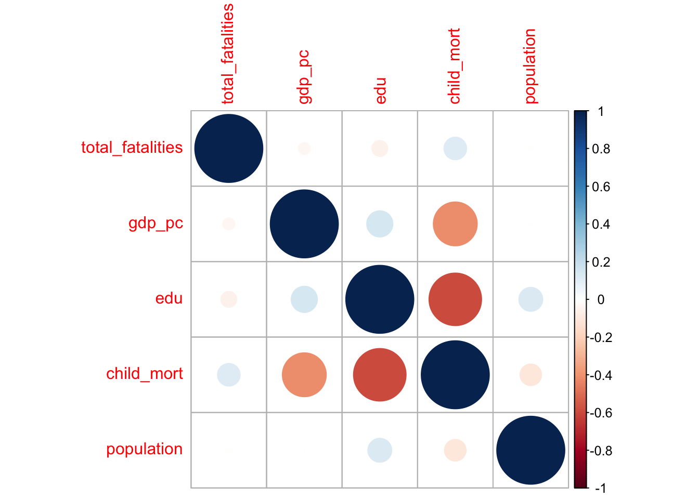
We can also customise the correlation plot by changing the arguments inside corrplot(). For example, we can sort variables by their correlations, change the display method, and show only the upper or lower part of the matrix to make the figure easier to read.
corrplot(df_cor, order = "AOE", method = "pie", type = "upper")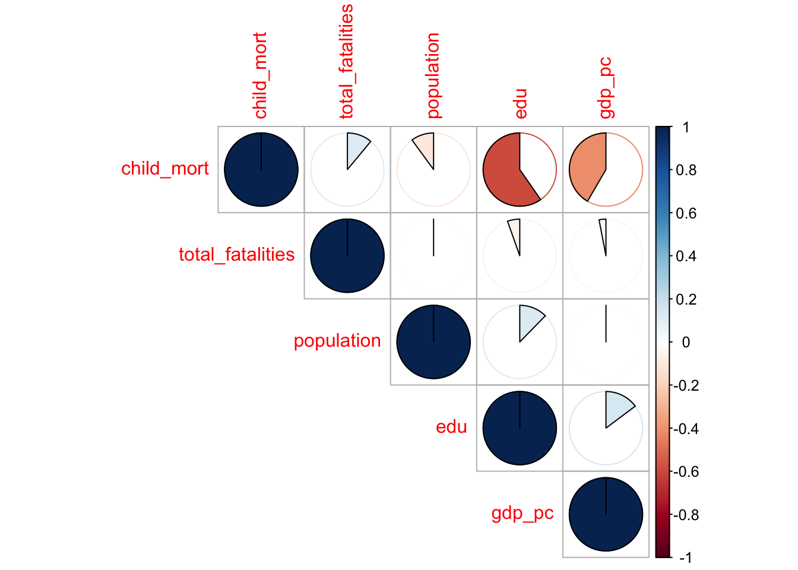
Another useful option is corrplot.mixed(), which combines two display styles in the same figure. For example, we can show the correlations as ellipses in the upper half and as numbers in the lower half of the matrix.
corrplot.mixed(df_cor, order = "AOE", upper = "ellipse", lower = "number")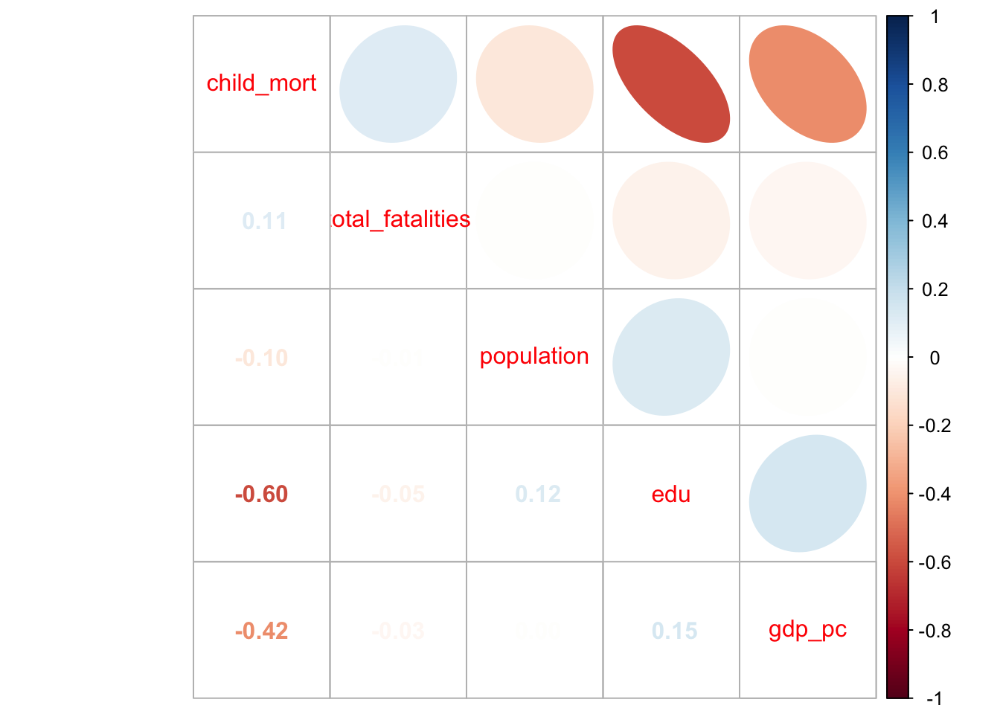
marginaleffects packageAnother useful package is marginaleffects, which helps us interpret statistical models in more substantive terms.
One useful function is avg_slopes(), which calculates average marginal effects. These show how the predicted probability of the outcome changes, on average, when an independent variable increases by one unit.
Using our logit model, we can calculate the average marginal effect of log(gdp_pc + 1) on the probability of conflict.
library(marginaleffects)Warning: package 'marginaleffects' was built under R version 4.5.2logit2 <- glm(conflict_dummy ~ log(gdp_pc + 1)+ edu + population + child_mort,
data = df,
family = binomial(link = "logit"))
avg_slopes(logit2)
Term Estimate Std. Error z Pr(>|z|) S 2.5 % 97.5 %
child_mort -3.00e-04 1.12e-04 -2.687 0.00721 7.1 -5.20e-04 -8.13e-05
edu -5.61e-04 2.82e-04 -1.987 0.04687 4.4 -1.11e-03 -7.76e-06
gdp_pc -6.01e-06 4.66e-06 -1.290 0.19709 2.3 -1.51e-05 3.12e-06
population 4.74e-11 5.48e-11 0.866 0.38673 1.4 -5.99e-11 1.55e-10
Type: response
Comparison: dY/dXWe can also visualise predicted probabilities with plot_predictions(). This allows us to see how the predicted probability of conflict changes across different values of an independent variable.
plot_predictions(
logit1,
condition = "edu"
)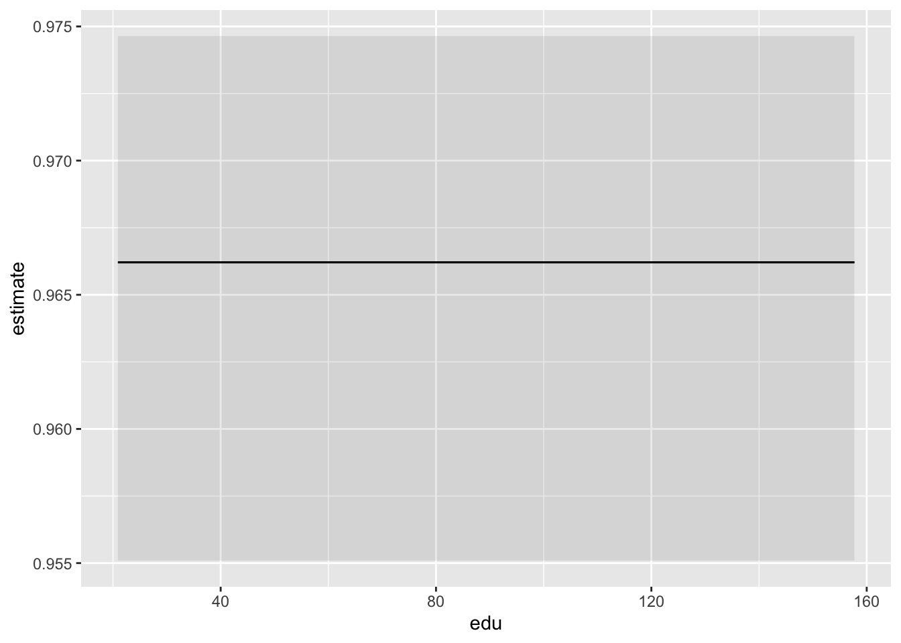
Here we can see that the predicted probability of conflict changes as education levels increase. The overall pattern is negative, meaning that higher levels of school enrollment are associated with a lower predicted probability of conflict. The confidence interval becomes wider at higher values of education, which suggests greater uncertainty in that part of the distribution.
A useful feature of plots created with marginaleffects is that they are ordinary ggplot objects. This means that we can customise them in the same way as other ggplot() figures.
plot_predictions(
logit2,
condition = "edu"
) +
labs(
x = "Primary school enrolment",
y = "Predicted probability of conflict"
) +
theme_minimal()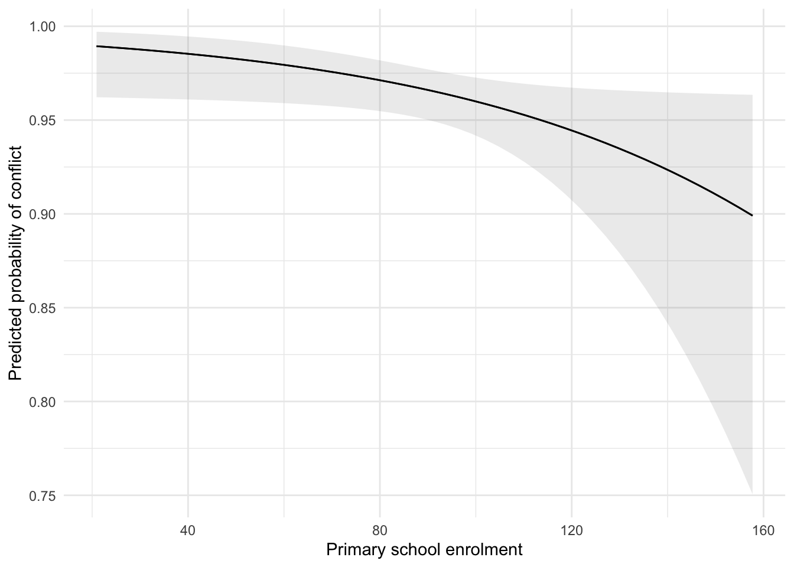